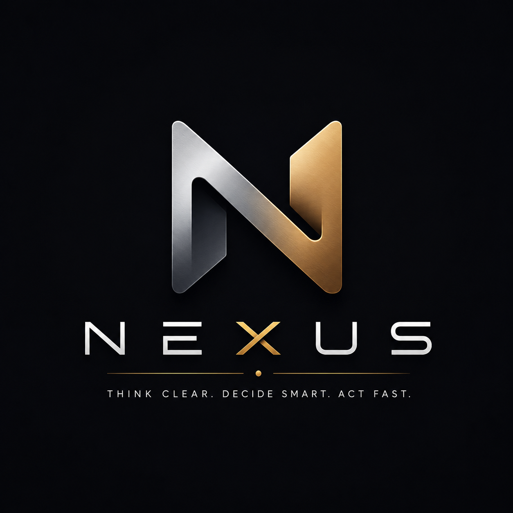

<!DOCTYPE html>
<html lang="he" dir="rtl"><head>
<meta charset="utf-8">
<meta name="viewport" content="width=device-width, initial-scale=1, viewport-fit=cover">
<meta name="theme-color" content="#100e09">
<meta name="mobile-web-app-capable" content="yes">
<meta name="apple-mobile-web-app-capable" content="yes">
<meta name="apple-mobile-web-app-status-bar-style" content="black-translucent">
<link rel="manifest" href="manifest.json">
<meta name="referrer" content="no-referrer"><link rel="icon" href="icon.svg"><link rel="apple-touch-icon" href="assets/nexus-logo.png">
<link rel="preconnect" href="https://fonts.gstatic.com" crossorigin>
<link href="https://fonts.googleapis.com/css2?family=Frank+Ruhl+Libre:wght@500;700;900&family=Assistant:wght@400;500;600;700;800&display=swap" rel="stylesheet">
<title>Nexus · חדר מצב</title>
<style>
:root{
  /* Quiet Authority — LIGHT (private office / paper) */
  --bg:#f4f1ea; --surface:#ffffff; --surface2:#efeadd; --raise:#ffffff; --hair:#e4ddcd; --hair2:#d8cfba;
  --ink:#221f18; --ink2:#5b5446; --mut:#8a8172;
  --brand:#9a6a34; --brand-2:#7f571f; --brand-soft:#efe3d0; --on-brand:#fff;
  --good:#2f7d57; --good-bg:#e7f1ea; --warn:#a9761a; --warn-bg:#f6eeda; --serious:#b6501f; --serious-bg:#f8e9df;
  --crit:#b23838; --crit-bg:#f8e6e4; --info:#365f96; --info-bg:#e9eff8;
  --hero1:#2a2417; --hero2:#1c1810; --hero-ink:#f3ead6;
  --shadow:0 1px 2px rgba(60,45,20,.05), 0 6px 22px rgba(60,45,20,.07);
  --serif:"Frank Ruhl Libre",Georgia,"Times New Roman",serif;
  --sans:"Assistant",-apple-system,"Segoe UI",system-ui,Arial,sans-serif;
  --r:16px; --nav-h:60px;
  --eo:cubic-bezier(.23,1,.32,1); --edrw:cubic-bezier(.32,.72,0,1);
  --hl:rgba(255,255,255,.65); --aur1:rgba(154,106,52,.10); --aur2:rgba(54,95,150,.05);
}
:root[data-theme=dark]{
  /* Quiet Authority — DARK (warm charcoal / after-hours desk) */
  --bg:#100e09; --surface:#211d15; --surface2:#1a170f; --raise:#282318; --hair:#35301f; --hair2:#48412c;
  --ink:#f1ebdd; --ink2:#b6ac96; --mut:#80765f;
  --brand:#cd9b5f; --brand-2:#e0b57e; --brand-soft:#382c1a; --on-brand:#1c1508;
  --good:#5ec48c; --good-bg:#16301f; --warn:#e0ab4c; --warn-bg:#2f2610; --serious:#e08a56; --serious-bg:#32200f;
  --crit:#e57b6f; --crit-bg:#341a17; --info:#7ba6df; --info-bg:#182740;
  --hero1:#2a2417; --hero2:#181509; --hero-ink:#f3ead6;
  --hl:rgba(255,255,255,.05); --aur1:rgba(205,155,99,.14); --aur2:rgba(123,166,223,.06);
  --shadow:0 1px 2px rgba(0,0,0,.5), 0 12px 34px rgba(0,0,0,.42);
}
@media (prefers-color-scheme:dark){:root:not([data-theme=light]):not([data-theme=dark]){
  --bg:#100e09; --surface:#211d15; --surface2:#1a170f; --raise:#282318; --hair:#35301f; --hair2:#48412c;
  --ink:#f1ebdd; --ink2:#b6ac96; --mut:#80765f;
  --brand:#cd9b5f; --brand-2:#e0b57e; --brand-soft:#382c1a; --on-brand:#1c1508;
  --good:#5ec48c; --good-bg:#16301f; --warn:#e0ab4c; --warn-bg:#2f2610; --serious:#e08a56; --serious-bg:#32200f;
  --crit:#e57b6f; --crit-bg:#341a17; --info:#7ba6df; --info-bg:#182740;
  --hero1:#2a2417; --hero2:#181509; --hero-ink:#f3ead6;
  --hl:rgba(255,255,255,.05); --aur1:rgba(205,155,99,.14); --aur2:rgba(123,166,223,.06);
  --shadow:0 1px 2px rgba(0,0,0,.5), 0 12px 34px rgba(0,0,0,.42);
}}
*{box-sizing:border-box}html,body{margin:0;padding:0}
body{background:var(--bg);color:var(--ink);font-family:var(--sans);font-size:15px;line-height:1.55;
  -webkit-text-size-adjust:100%;padding-bottom:calc(var(--nav-h) + 24px + env(safe-area-inset-bottom));overflow-x:hidden}
body::before{content:"";position:fixed;inset:-20%;z-index:-1;pointer-events:none;
  background:radial-gradient(620px 480px at 88% 8%,var(--aur1),transparent 62%),
             radial-gradient(520px 420px at 2% 40%,var(--aur2),transparent 60%);
  animation:aurora 26s ease-in-out infinite alternate;will-change:transform}
@keyframes aurora{from{transform:translate3d(-2%,-1.5%,0) scale(1)}to{transform:translate3d(2%,2%,0) scale(1.12)}}
/* ‏גרעין פילם עדין — טקסטורה של מוצר מעוצב, לא דף */
body::after{content:"";position:fixed;inset:0;z-index:-1;pointer-events:none;opacity:.05;
  background-image:url("data:image/svg+xml,%3Csvg xmlns='http://www.w3.org/2000/svg' width='120' height='120'%3E%3Cfilter id='n'%3E%3CfeTurbulence type='fractalNoise' baseFrequency='0.9' numOctaves='2'/%3E%3C/filter%3E%3Crect width='120' height='120' filter='url(%23n)' opacity='0.55'/%3E%3C/svg%3E")}
.num{font-variant-numeric:tabular-nums;font-feature-settings:"tnum"}
button{font-family:inherit}::-webkit-scrollbar{width:0;height:0}
.serif{font-family:var(--serif)}

header{position:sticky;top:0;z-index:30;background:color-mix(in srgb,var(--bg) 78%,transparent);
  backdrop-filter:blur(18px) saturate(1.4);-webkit-backdrop-filter:blur(18px) saturate(1.4);border-bottom:1px solid color-mix(in srgb,var(--hair) 70%,transparent);
  padding:calc(env(safe-area-inset-top) + 10px) 16px 10px;display:flex;align-items:center;gap:11px}
.brand{display:flex;flex-direction:column;line-height:1.1}
.brand b{font-family:var(--serif);font-size:21px;font-weight:900;letter-spacing:.2px}
.brand b i{font-style:normal;color:var(--brand)}
.brand small{font-size:11px;color:var(--mut);font-weight:500;letter-spacing:.02em}
.hsp{flex:1}
.iconbtn{min-width:44px;min-height:44px;border-radius:12px;border:1px solid var(--hair);background:var(--surface);
  color:var(--ink2);font-size:17px;display:grid;place-items:center;cursor:pointer;transition:transform .2s var(--eo)}
.iconbtn:active{transform:scale(.94);transition-duration:.06s}
.demo-dot{font-size:10.5px;font-weight:700;color:var(--brand);background:var(--brand-soft);border:1px solid color-mix(in srgb,var(--brand) 30%,transparent);padding:3px 10px;border-radius:20px}
.demo-dot.stale{color:var(--warn);background:var(--warn-bg);border-color:color-mix(in srgb,var(--warn) 35%,transparent)}

main{max-width:680px;margin:0 auto;padding:14px 14px calc(8px + 76px)}
.page{display:none}.page.on{display:block}
.sec{display:flex;align-items:baseline;gap:8px;margin:22px 4px 10px}
/* רק המקטע הראשון בעמוד מתקצר. בלי הצמצום ל-#main> הכלל היה תופס גם
   את המקטע הראשון בכל בלוק ברשת הדסקטופ, ומכווץ את כולם. */
#main>.sec:first-child{margin-top:8px}
.sec h2{font-size:12px;font-weight:800;letter-spacing:.04em;color:var(--ink2);margin:0}
.sec .n{font-size:11.5px;color:var(--mut);font-weight:600}
.sec.tap{cursor:pointer;-webkit-tap-highlight-color:transparent;border-radius:9px;
  margin-inline:0;padding:0 4px;min-height:38px}
.sec.tap{transition:background-color .35s var(--eo)}.sec.tap:active{background:var(--surface2);transition-duration:0s}
.sec .act{margin-inline-start:auto;font-size:12.5px;color:var(--brand);font-weight:700;display:flex;align-items:center}
.divider{margin:28px 4px 2px;padding-top:15px;border-top:1px solid var(--hair);text-align:center}
.divider span{font-size:10.5px;font-weight:700;letter-spacing:.05em;color:var(--mut)}

.card{background:var(--surface);border:1px solid var(--hair);border-radius:var(--r);box-shadow:var(--shadow),inset 0 1px 0 var(--hl);overflow:hidden}
.card+.card{margin-top:9px}.pad{padding:14px 16px}

/* KPI vital-signs tiles */
.vitals{display:grid;grid-template-columns:repeat(auto-fit,minmax(150px,1fr));gap:8px}
.vt{background:var(--surface);border:1px solid var(--hair);border-radius:17px;padding:13px 14px;position:relative;overflow:hidden;cursor:default;box-shadow:var(--shadow)}
.vt.tap{cursor:pointer;transition:transform .2s var(--eo)}.vt.tap:active{transform:scale(.98);transition-duration:.06s}
.vt::before{content:"";position:absolute;inset-block:0;inset-inline-start:0;width:3px;background:var(--vc,transparent)}
.vt .k{font-family:var(--serif);font-size:28px;font-weight:700;line-height:1.02;letter-spacing:-.02em}
.vt .k small{font-size:12px;font-weight:600;color:var(--mut);font-family:var(--sans)}
.vt .l{font-size:11px;color:var(--ink2);margin-top:3px;font-weight:600}
.vt .sub{font-size:10px;color:var(--mut);margin-top:1px}
.vt.c-good{--vc:var(--good)}.vt.c-warn{--vc:var(--warn)}.vt.c-crit{--vc:var(--crit)}.vt.c-brand{--vc:var(--brand)}.vt.c-info{--vc:var(--info)}
.vt.c-good .k{color:var(--good)}.vt.c-crit .k{color:var(--crit)}.vt.c-warn .k{color:var(--warn)}
.grp-lbl{font-size:10.5px;font-weight:800;letter-spacing:.03em;color:var(--mut);margin:0 4px 7px}

/* home view switcher (multiple lenses over the cockpit) */
/* גלישה לשורה שנייה ולא גלילה אופקית: עם עדשה חמישית העדשה האחרונה
   נדחקה מחוץ למסך ב-360px — לשונית שצריך לגלול אליה כדי לגלות שהיא
   קיימת היא לשונית שלא קיימת. */
.hviews{display:flex;flex-wrap:wrap;gap:5px;background:var(--surface2);border:1px solid var(--hair);border-radius:13px;padding:4px;margin:2px 4px 6px;position:sticky;top:calc(env(safe-area-inset-top) + 65px);z-index:25;box-shadow:var(--shadow)}
.hviews button{flex:1 1 30%;min-width:max-content;border:0;background:none;color:var(--ink2);font-weight:700;font-size:12.5px;padding:9px 12px;min-height:44px;border-radius:9px;cursor:pointer;white-space:nowrap;display:flex;align-items:center;justify-content:center;gap:5px;transition:color .12s,transform .2s var(--eo)}
.hviews button.on{background:linear-gradient(150deg,color-mix(in srgb,var(--brand) 86%,#fff),var(--brand) 58%,var(--brand-2));color:var(--on-brand);box-shadow:0 4px 12px color-mix(in srgb,var(--brand) 28%,transparent)}
.hviews button:active{transform:scale(.97);transition-duration:.06s}
.hviews button .vbd{width:6px;height:6px;border-radius:50%;background:var(--crit);flex:none}
.viewhint{font-size:11.5px;color:var(--mut);margin:0 6px 2px;line-height:1.4}

/* ‏האורב של אלפא (25.8) — הנוכחות החיה של המוח. conic-gradient מסתובב
   ‏ונושם; .think = המערכת עובדת (סיבוב מהיר). GPU בלבד. */
.orbwrap{display:flex;align-items:center;gap:12px;margin:2px 4px 12px;cursor:pointer;-webkit-tap-highlight-color:transparent}
.orb{width:46px;height:46px;border-radius:50%;flex:none;position:relative;
  background:conic-gradient(from 0deg,#f0d9ae,#cd9b5f 28%,#8e5a14 52%,#e0b57e 74%,#f0d9ae);
  animation:orbspin 16s linear infinite,orbbreath 4.5s ease-in-out infinite;
  box-shadow:0 0 26px color-mix(in srgb,var(--brand) 45%,transparent),inset 0 0 14px rgba(255,255,255,.35)}
.orb::after{content:"";position:absolute;inset:16%;border-radius:50%;background:var(--bg);opacity:.28;filter:blur(2px)}
.orb.think{animation-duration:2.2s,1.6s}
@keyframes orbspin{to{transform:rotate(360deg)}}
@keyframes orbbreath{0%,100%{scale:1}50%{scale:1.07}}
.orbtxt{display:flex;flex-direction:column;min-width:0;line-height:1.3}
.orbtxt .ot1{font-size:13.5px;font-weight:800}
.orbtxt .ot2{font-size:11px;color:var(--mut);margin-top:1px}
.orbask{margin-inline-start:auto;font-size:12.5px;font-weight:700;color:var(--ink2);background:var(--surface);
  border:1px solid var(--hair);border-radius:20px;padding:9px 15px;box-shadow:var(--shadow);white-space:nowrap}
.orbask i{font-style:normal;color:var(--brand)}

/* hero */
.hero{background:linear-gradient(155deg,var(--hero1),var(--hero2));border-radius:20px;box-shadow:var(--shadow);
  padding:20px 21px;color:var(--hero-ink);position:relative;overflow:hidden;border:1px solid rgba(205,155,99,.32);outline:1px solid rgba(205,155,99,.08);outline-offset:3px}
.hero::after{content:"";position:absolute;inset-block:-40% auto;inset-inline-end:-25%;width:60%;height:190%;background:radial-gradient(closest-side,rgba(205,155,99,.22),transparent);pointer-events:none}
/* ‏טבעת אור חיה: קשת ברונזה שמקיפה את ההירו לאט. fallback שקט בדפדפן ישן. */
@property --hang{syntax:"<angle>";initial-value:0deg;inherits:false}
.hero::before{content:"";position:absolute;inset:0;border-radius:inherit;padding:1.5px;pointer-events:none;
  background:conic-gradient(from var(--hang),transparent 0 68%,rgba(240,217,174,.85) 82%,rgba(205,155,99,.35) 90%,transparent 96%);
  -webkit-mask:linear-gradient(#000 0 0) content-box,linear-gradient(#000 0 0);-webkit-mask-composite:xor;mask-composite:exclude;
  animation:heroring 7s linear infinite}
@keyframes heroring{to{--hang:360deg}}
.hero .lbl{display:flex;align-items:center;gap:7px;font-size:11px;font-weight:800;letter-spacing:.16em;text-transform:uppercase;margin-bottom:9px;background:linear-gradient(90deg,#e0b57e,#cd9b5f 60%,#a77231);-webkit-background-clip:text;background-clip:text;color:transparent}
.hero .txt{font-family:var(--serif);font-size:26px;font-weight:700;line-height:1.24;letter-spacing:-.015em}
.hero .sub{font-size:12.5px;opacity:.8;margin-top:7px}
.hero .badge{display:inline-block;font-size:11px;font-weight:700;padding:3px 11px;border-radius:20px;margin-top:11px}
.hero .acts{display:flex;gap:8px;margin-top:14px;flex-wrap:wrap}
.hero .override{background:rgba(229,123,111,.15);border:1px solid rgba(229,123,111,.4);border-radius:11px;padding:9px 11px;margin-bottom:12px;font-size:12.5px;color:#f6ccc5;cursor:pointer;display:flex;gap:7px;align-items:center}

.btn{border:0;border-radius:11px;padding:11px 15px;min-height:44px;font-size:13.5px;font-weight:700;cursor:pointer;display:inline-flex;align-items:center;justify-content:center;gap:6px;transition:transform .2s var(--eo);font-family:inherit}
.btn:active{transform:scale(.96);transition-duration:.06s}
.btn.brand{background:linear-gradient(150deg,color-mix(in srgb,var(--brand) 86%,#fff),var(--brand) 55%,var(--brand-2));color:var(--on-brand);box-shadow:0 6px 16px color-mix(in srgb,var(--brand) 30%,transparent),inset 0 1px 0 rgba(255,255,255,.25)}
.btn.ghost{background:rgba(243,234,214,.16);color:#f3ead6}
.btn.line{background:var(--surface2);color:var(--ink);border:1px solid var(--hair)}
.btn.good{background:var(--good);color:#fff}.btn.crit{background:transparent;color:var(--crit);border:1px solid color-mix(in srgb,var(--crit) 45%,transparent)}
.btn.sm{padding:10px 14px;min-height:44px;font-size:13px}.btn.block{width:100%}

.row{display:flex;gap:11px;padding:13px 16px;border-top:1px solid var(--hair);cursor:pointer;align-items:flex-start;min-height:48px}
.card .row:first-child{border-top:0}.row{transition:background-color .35s var(--eo)}.row:active{background:var(--surface2);transition-duration:0s}
.row .main{flex:1;min-width:0}.row .t{font-size:14.5px;font-weight:600;line-height:1.35}
.row.dec .t{font-size:15px;font-weight:700}
.row .m{font-size:12px;color:var(--ink2);margin-top:3px;display:flex;flex-wrap:wrap;gap:6px;align-items:center}
.row .lead{flex:none;width:28px;height:28px;border-radius:9px;display:grid;place-items:center;font-size:13px;margin-top:1px}
.stripe{position:relative}.stripe::before{content:"";position:absolute;inset-block:0;inset-inline-start:0;width:3px}
.stripe.s-crit::before{background:var(--crit)}.stripe.s-warn::before{background:var(--warn)}.stripe.s-good::before{background:var(--good)}.stripe.s-info::before{background:var(--info)}.stripe.s-brand::before{background:var(--brand)}
.chip{font-size:11px;font-weight:700;padding:3px 8px;border-radius:7px;white-space:nowrap;letter-spacing:.01em}
.chip.crit{background:var(--crit-bg);color:var(--crit)}.chip.warn{background:var(--warn-bg);color:var(--warn)}.chip.good{background:var(--good-bg);color:var(--good)}.chip.info{background:var(--info-bg);color:var(--info)}.chip.mut{background:var(--surface2);color:var(--mut);border:1px solid var(--hair)}.chip.brand{background:var(--brand-soft);color:var(--brand-2)}
.dim{color:var(--mut)}.dot{width:5px;height:5px;border-radius:50%;background:var(--mut);flex:none}
.moreline{color:var(--brand);font-size:12.5px;font-weight:600;padding:12px 16px;border-top:1px solid var(--hair);cursor:pointer;text-align:center}
.empty{color:var(--mut);font-size:13px;padding:15px 16px;text-align:center}
.mini-empty{color:var(--mut);font-size:12.5px;padding:10px 15px}
.mini{display:flex;gap:7px;flex-wrap:wrap;margin-top:10px}
.mini button{border:1px solid var(--hair);background:var(--surface2);color:var(--ink2);border-radius:9px;padding:11px 14px;min-height:44px;font-size:12.5px;font-weight:600;cursor:pointer}
.mini button.go{color:var(--good);border-color:color-mix(in srgb,var(--good) 35%,transparent)}
.mini button.warn{color:var(--crit);border-color:color-mix(in srgb,var(--crit) 35%,transparent)}

/* meter (occupancy / completeness) */
.meter{height:6px;border-radius:6px;background:var(--surface2);overflow:hidden;margin-top:7px}
.meter i{display:block;height:100%;background:var(--brand);border-radius:6px}

/* משוב לחיצה אחיד — כל מה שנלחץ מגיב, והשחרור רך (25.8) */
.chips-row .c,.chips-in .c,.seg button,.mini button,.arstrip .ar,.ak-sug .c{transition:transform .2s var(--eo)}
.chips-row .c:active,.chips-in .c:active,.seg button:active,.mini button:active,.arstrip .ar:active,.ak-sug .c:active{transform:scale(.96);transition-duration:.06s}

/* chips filter row */
.chips-row{display:flex;gap:7px;overflow-x:auto;padding:2px 4px 4px;margin:0 -2px}
.chips-row .c{border:1px solid var(--hair);background:var(--surface);color:var(--ink2);border-radius:20px;padding:8px 13px;min-height:38px;font-size:12.5px;font-weight:600;cursor:pointer;white-space:nowrap;display:flex;align-items:center;gap:5px}
.chips-row .c.on{background:var(--brand);color:var(--on-brand);border-color:var(--brand)}
.searchbox{width:100%;background:var(--surface);border:1px solid var(--hair);color:var(--ink);border-radius:12px;padding:11px 13px;font-size:14.5px;font-family:inherit;outline:none;margin-bottom:9px}
.searchbox:focus{border-color:var(--brand)}

/* asset dossier row */
.asset{border-top:1px solid var(--hair)}.asset:first-child{border-top:0}
.asset .ah{display:flex;gap:10px;padding:13px 16px;cursor:pointer;align-items:flex-start;position:relative}
.asset .ah::before{content:"";position:absolute;inset-block:0;inset-inline-start:0;width:3px;background:var(--ac,var(--mut))}
.asset.rented .ah::before{background:var(--good)}.asset.vacant .ah::before{background:var(--warn)}.asset.sale .ah::before{background:var(--brand)}
.asset .an{font-size:14.5px;font-weight:700}.asset .acode{font-size:11px;color:var(--mut);font-weight:500}
.asset .ameta{font-size:11.5px;color:var(--ink2);margin-top:3px;display:flex;flex-wrap:wrap;gap:6px;align-items:center}
.asset .aright{text-align:left;font-size:12px;color:var(--ink2);white-space:nowrap;font-weight:600}
.asset .adet{display:none;padding:0 16px 15px;border-top:1px dashed var(--hair);margin-top:0}
.asset.open .adet{display:block;padding-top:12px}
.adet h5{font-size:11px;font-weight:800;letter-spacing:.08em;text-transform:uppercase;color:var(--brand);margin:14px 2px 7px;padding-top:12px;border-top:1px dashed var(--hair)}
.adet h5:first-of-type{border-top:0;padding-top:0;margin-top:12px}
.adet .kv{font-size:13px;line-height:1.55;padding:2px 2px}.adet .kv b{font-weight:700;font-variant-numeric:tabular-nums}
.fact{display:inline-block;background:var(--surface2);border:1px solid var(--hair);border-radius:8px;padding:4px 10px;font-size:11.5px;color:var(--ink2);margin:0 0 5px}
.doca{display:block;font-size:12.5px;margin:3px 2px;color:var(--brand);text-decoration:none}

table{width:100%;border-collapse:collapse;font-size:12.5px}
th,td{padding:9px 10px;text-align:start;border-bottom:1px solid var(--hair)}
th{background:var(--surface2);color:var(--ink2);font-size:11px;font-weight:700}tr:last-child td{border-bottom:0}

/* nav */
nav{position:fixed;bottom:calc(10px + env(safe-area-inset-bottom));inset-inline:10px;height:var(--nav-h);padding-bottom:0;border-radius:26px;border:1px solid color-mix(in srgb,var(--hair) 85%,transparent);box-shadow:0 14px 34px rgba(0,0,0,.22),inset 0 1px 0 var(--hl);background:color-mix(in srgb,var(--surface) 86%,transparent);backdrop-filter:blur(20px) saturate(1.4);-webkit-backdrop-filter:blur(20px) saturate(1.4);border-top:1px solid color-mix(in srgb,var(--hair) 75%,transparent);display:flex;z-index:40}
nav button{flex:1;background:none;border:0;color:var(--mut);cursor:pointer;font-size:10px;font-weight:600;display:flex;flex-direction:column;align-items:center;justify-content:center;gap:3px;padding-top:6px;position:relative;border-radius:22px;transition:color .18s var(--eo)}
nav button .pill{position:absolute;top:5px;width:46px;height:27px;border-radius:14px;background:transparent;transition:background .22s var(--eo),transform .22s var(--eo);transform:scale(.7);z-index:0}
nav button.on .pill{background:var(--brand-soft);transform:scale(1)}
nav button .ic{font-size:19px;line-height:1;position:relative;z-index:1}nav button.on{color:var(--brand-2)}
nav .bdg{position:absolute;top:5px;margin-inline-start:20px;background:var(--crit);color:#fff;font-size:9px;font-weight:800;border-radius:20px;min-width:15px;height:15px;padding:0 4px;display:grid;place-items:center}
.fab{width:38px;height:38px;border-radius:13px;border:0;background:linear-gradient(150deg,color-mix(in srgb,var(--brand) 88%,#fff),var(--brand) 55%,var(--brand-2));color:var(--on-brand);font-size:21px;box-shadow:0 4px 14px color-mix(in srgb,var(--brand) 34%,transparent),inset 0 1px 0 rgba(255,255,255,.25);cursor:pointer;display:grid;place-items:center;flex:none;margin-inline-end:8px}
.fab.tucked{}
@media (max-height:700px){.fab{width:48px;height:48px;font-size:23px;border-radius:16px;bottom:calc(var(--nav-h) + env(safe-area-inset-bottom) + 18px)}}
.fab:active{transform:scale(.93);transition-duration:.09s}

.ov{position:fixed;inset:0;background:rgba(30,22,10,.5);z-index:50;opacity:0;pointer-events:none;transition:opacity .18s var(--eo)}
.ov.on{opacity:1;pointer-events:auto;transition-duration:.28s}
.sheet{position:fixed;inset-inline:0;bottom:0;z-index:51;background:color-mix(in srgb,var(--surface) 97%,var(--brand));border-radius:26px 26px 0 0;border-top:1px solid var(--hair2);transform:translateY(102%);transition:transform .22s var(--edrw);max-height:min(86vh,calc(100vh - 92px));overflow-y:auto;overscroll-behavior:contain;padding:0 16px calc(20px + env(safe-area-inset-bottom));max-width:680px;margin:0 auto}
.sheet.on{transform:none;transition-duration:.34s}
.grab{width:42px;height:5px;border-radius:5px;background:var(--hair2);margin:10px auto 7px;position:relative;cursor:grab;touch-action:none}
.grab::after{content:"";position:absolute;inset:-14px -40px;}
.sheet h3{font-family:var(--serif);font-size:19px;font-weight:700;margin:7px 2px 4px}
.sheet .sub2{font-size:12.5px;color:var(--ink2);margin:0 2px 12px;line-height:1.5}
.blk{margin-top:15px}.blk h4{font-size:11px;font-weight:800;letter-spacing:.09em;text-transform:uppercase;color:var(--brand);margin:0 2px 7px}
.blk.rec{background:var(--brand-soft);border:1px solid color-mix(in srgb,var(--brand) 22%,transparent);border-radius:13px;padding:12px 14px;margin-top:13px}
.blk.rec h4{margin:0 0 6px}.blk.rec .kv{padding:0;font-weight:600}
/* home buckets (5.8): מצב הזירות + שלושת הדליים של nexus_home_brief */
.arstrip{display:flex;flex-wrap:wrap;gap:7px;padding:2px 2px 4px}
.arstrip .ar{display:flex;align-items:center;gap:7px;background:var(--surface);border:1px solid var(--hair);border-radius:20px;padding:7px 13px;font-size:12.5px;font-weight:700;color:var(--ink2);cursor:pointer;max-width:210px;white-space:nowrap;overflow:hidden;text-overflow:ellipsis}
.arstrip .ar .d{flex:none;width:8px;height:8px;border-radius:50%;background:var(--good)}
.arstrip .ar.w .d{background:var(--warn)}.arstrip .ar.c .d{background:var(--crit)}
.arstrip .ar.c{border-color:color-mix(in srgb,var(--crit) 45%,var(--hair))}
.hb-line{display:flex;align-items:center;gap:8px;font-size:13px;color:var(--ink2);padding:10px 13px;background:var(--surface);border:1px solid var(--hair);border-radius:var(--r);cursor:pointer;margin-top:8px}
.hb-line b{color:var(--ink)}
.hb-quiet{display:flex;align-items:center;gap:8px;font-size:13.5px;color:var(--good);padding:12px 13px;background:var(--surface);border:1px solid var(--hair);border-radius:var(--r)}
.kv{font-size:13.5px;line-height:1.5;padding:3px 2px}
.li{font-size:13.5px;padding:8px 2px;border-top:1px solid var(--hair);display:flex;gap:8px;align-items:flex-start}.li:first-child{border-top:0}
.li.tapli{cursor:pointer;-webkit-tap-highlight-color:transparent;transition:background-color .35s var(--eo)}.li.tapli:active{background:var(--surface2);border-radius:8px;transition-duration:0s}
.seg{display:flex;gap:6px;background:var(--surface2);border:1px solid var(--hair);border-radius:12px;padding:4px;margin-bottom:12px}
.seg button{flex:1;border:0;background:none;color:var(--ink2);font-weight:700;font-size:13px;padding:10px;min-height:44px;border-radius:9px;cursor:pointer}
.seg button.on{background:linear-gradient(150deg,color-mix(in srgb,var(--brand) 86%,#fff),var(--brand) 58%,var(--brand-2));color:var(--on-brand)}
textarea,input,select{width:100%;background:var(--surface2);border:1px solid var(--hair);color:var(--ink);border-radius:12px;padding:12px 13px;font-size:15px;font-family:inherit;resize:none;outline:none}
textarea:focus,input:focus,select:focus{border-color:var(--brand)}
.field{margin-bottom:11px}.field label{display:block;font-size:11.5px;font-weight:700;color:var(--ink2);margin:0 2px 5px}
.capbox{position:relative}
.mic{position:absolute;inset-block-start:8px;inset-inline-end:8px;width:38px;height:38px;border-radius:11px;border:1px solid var(--hair);background:var(--surface);color:var(--ink2);font-size:17px;cursor:pointer;display:grid;place-items:center}
.mic.rec{background:var(--crit);color:#fff;border-color:var(--crit);animation:pulse 1.1s infinite}
@keyframes pulse{0%,100%{opacity:1}50%{opacity:.55}}
.chips-in{display:flex;gap:6px;flex-wrap:wrap}
.chips-in .c{border:1px solid var(--hair);background:var(--surface2);color:var(--ink2);border-radius:20px;padding:11px 15px;min-height:44px;font-size:12.5px;font-weight:600;cursor:pointer;display:flex;align-items:center}
.chips-in .c.on{background:var(--brand);color:var(--on-brand);border-color:var(--brand)}

.toast{position:fixed;inset-inline:16px;bottom:calc(var(--nav-h) + env(safe-area-inset-bottom) + 28px);background:var(--raise);border:1px solid var(--hair2);color:var(--ink);border-radius:13px;padding:13px 15px;z-index:60;box-shadow:var(--shadow);transform:translateY(180%);opacity:0;pointer-events:none;transition:transform .2s var(--eo),opacity .16s var(--eo);font-size:14px;display:flex;align-items:center;gap:10px;max-width:640px;margin:0 auto}
.toast.on{transform:none;opacity:1;pointer-events:auto;transition-duration:.34s,.28s}
.toast .u{margin-inline-start:auto;color:var(--brand);font-weight:800;cursor:pointer;font-size:13px;min-height:40px;padding:0 6px;display:flex;align-items:center}

.ask-wrap{display:flex;flex-direction:column;min-height:calc(100vh - var(--nav-h) - 130px)}
.ask-feed{flex:1;display:flex;flex-direction:column;gap:12px;padding-bottom:12px}
.q-bub{align-self:flex-start;max-width:85%;background:var(--brand);color:var(--on-brand);border-radius:15px 4px 15px 15px;padding:10px 13px;font-size:14px;font-weight:600}
.a-bub{align-self:flex-end;max-width:92%;background:var(--surface);border:1px solid var(--hair);border-radius:4px 15px 15px 15px;padding:11px 14px;font-size:14px;line-height:1.55}
.a-bub.load{color:var(--mut)}
.ak-sug{display:flex;gap:7px;flex-wrap:wrap;margin:4px 0 12px}
.ak-sug .c{border:1px solid var(--hair);background:var(--surface);color:var(--ink2);border-radius:20px;padding:9px 13px;min-height:40px;font-size:12.5px;cursor:pointer;display:flex;align-items:center}
.ask-bar{position:sticky;bottom:calc(var(--nav-h) + env(safe-area-inset-bottom) + 12px);display:flex;gap:8px;padding:9px 0;background:linear-gradient(0deg,var(--bg) 72%,transparent)}
.ask-bar input{flex:1}.ask-bar button{flex:none;width:48px;min-height:48px;border-radius:12px;border:0;background:var(--brand);color:var(--on-brand);font-size:18px;cursor:pointer}
.md b{font-weight:800}.md .h{font-weight:800;margin-top:8px}.md ul{margin:6px 0;padding-inline-start:20px}.md li{margin:2px 0}
.md code{background:var(--surface2);border:1px solid var(--hair);border-radius:5px;padding:1px 5px;font-size:.9em;font-family:ui-monospace,Menlo,monospace}

.gate{max-width:410px;margin:9vh auto;padding:30px 24px 26px;text-align:center;background:var(--surface);border:1px solid var(--hair);border-radius:24px;box-shadow:var(--shadow)}
.gate .logo{font-family:var(--serif);font-size:44px;color:var(--brand);margin-bottom:2px}
.gate h1{font-family:var(--serif);font-size:29px;font-weight:900;margin:0 0 5px;letter-spacing:-.01em}.gate h1 i{font-style:normal;color:var(--brand)}
.gate p{color:var(--ink2);font-size:14px;margin:0 0 18px;line-height:1.5}
.gate input{text-align:center;margin-bottom:11px}
.gate .err{color:var(--crit);font-size:12.5px;margin:0 0 10px;min-height:16px;font-weight:600}
.foot{text-align:center;color:var(--mut);font-size:11px;padding:24px 0 6px}.foot b{color:var(--ink2);font-weight:600}

/* ============================================================
   תצוגה ויזואלית (גרפים)
   הפלטה אינה נבחרה בעין — היא נגזרה מגוון המותג ואומתה מול
   validate_palette (--ordinal) בשני המצבים ומול המשטח האמיתי
   של הכרטיס: בהיר #ffffff, כהה #221e16.
     ordinal בהיר  #dca363→#8e5a14  2.22/3.00/4.12/5.80:1  ✓
     ordinal כהה   #8a560c→#e2ab6c  2.70/3.78/5.53/8.12:1  ✓
     סימון ראשי    בהיר 4.68:1 · כהה 6.68:1                ✓
   o1..o4 = מעט→הרבה בשני המצבים (בבהיר כהה יותר = יותר,
   בכהה בהיר יותר = יותר — עוגן שמתהפך, לא היפוך אוטומטי).
   ============================================================ */
.vz{--vz-1:#9a6a34;--vz-o1:#dca363;--vz-o2:#c18a4a;--vz-o3:#a77231;--vz-o4:#8e5a14;--vz-track:var(--surface2);--vz-surf:var(--surface)}
:root[data-theme=dark] .vz{--vz-1:#cd9b5f;--vz-o1:#8a560c;--vz-o2:#a36d2c;--vz-o3:#c18a4a;--vz-o4:#e2ab6c}
@media (prefers-color-scheme:dark){:root:not([data-theme=light]):not([data-theme=dark]) .vz{
  --vz-1:#cd9b5f;--vz-o1:#8a560c;--vz-o2:#a36d2c;--vz-o3:#c18a4a;--vz-o4:#e2ab6c}}

.vzhead{display:flex;align-items:baseline;gap:8px;padding:13px 16px 2px}
.vzhead .vzt{font-size:12.5px;font-weight:800;color:var(--ink)}
.vzhead .vzs{font-size:11px;color:var(--mut);font-weight:500}
/* מתג הטבלה יושב צמוד לכותרת ולא נדחף לקצה השורה: בנייד קצה השורה הוא
   בדיוק הפינה שבה יושב הכפתור הצף, ומטרה קטנה שם היא פעולה חסומה. */
.vzhead .vza{margin-inline-start:6px;font-size:11px;color:var(--brand);font-weight:700;cursor:pointer;
  border:0;background:none;font-family:inherit;min-height:32px;padding:0 4px;flex:none}
.vzbody{padding:8px 16px 14px}
.vzempty{color:var(--mut);font-size:12.5px;padding:6px 16px 16px}

/* מוטות אופקיים — HTML ולא SVG, כדי שתוויות עבריות ויעדי לחיצה יתנהגו נכון
   ב-RTL. הערך רוכב על קצה המוט ולא בעמודה קבועה בסוף השורה, כך שגם במוט
   קצר הוא נשאר צמוד למה שהוא מודד. הריפוד בסוף השורה שומר לו מקום גם כשהמוט
   מלא — ולכן הוא לעולם אינו נחתך ואינו נכתב מעל המילוי. */
.vzrow{display:grid;grid-template-columns:minmax(64px,32%) 1fr;align-items:center;gap:10px;
  padding:5px 4px;padding-inline-end:48px;border-radius:9px;cursor:pointer;
  -webkit-tap-highlight-color:transparent;min-height:34px}
.vzrow.flat{cursor:default}
.vzlab{font-size:12px;color:var(--ink2);font-weight:600;overflow:hidden;text-overflow:ellipsis;white-space:nowrap}
.vztrack{background:var(--vz-track);border-radius:4px;height:14px;position:relative}
.vztrack i{position:absolute;inset-block:0;inset-inline-start:0;background:var(--vz-1);
  border-start-end-radius:4px;border-end-end-radius:4px;min-width:3px}
.vzval{position:absolute;top:50%;transform:translateY(-50%);white-space:nowrap;padding-inline-start:7px;
  font-size:12px;font-weight:700;color:var(--ink);font-variant-numeric:tabular-nums}
.vzsub{font-size:10.5px;color:var(--mut);font-weight:500}

/* מוט מוערם — הרווח של 2px במשטח הוא המפריד, לא מסגרת */
.vzstack{display:flex;gap:2px;height:16px;border-radius:4px;overflow:hidden;background:var(--vz-surf)}
.vzstack i{display:block;height:100%;min-width:2px}
.vzstack i:first-child{border-start-start-radius:4px;border-end-start-radius:4px}
.vzstack i:last-child{border-start-end-radius:4px;border-end-end-radius:4px}
.vzkeys{display:flex;flex-wrap:wrap;gap:10px;margin-top:9px}
.vzkey{display:flex;align-items:center;gap:5px;font-size:11px;color:var(--ink2);font-weight:600;
  cursor:pointer;background:none;border:0;font-family:inherit;padding:4px 2px;min-height:30px}
.vzkey s{width:9px;height:9px;border-radius:3px;flex:none;text-decoration:none}
.vzkey b{font-variant-numeric:tabular-nums;color:var(--ink)}

/* סדרת זמן — ציר הזמן נשאר LTR (ישן→חדש) גם במסמך RTL */
.vzarea{width:100%;height:auto;display:block;direction:ltr;overflow:visible}
.vzax{display:flex;justify-content:space-between;font-size:10.5px;color:var(--mut);
  font-variant-numeric:tabular-nums;direction:ltr;margin-top:4px;padding:0 1px}
.vzwrap{position:relative}
.vztip{position:absolute;pointer-events:none;background:var(--raise);border:1px solid var(--hair2);
  border-radius:9px;padding:6px 9px;font-size:11.5px;color:var(--ink);box-shadow:var(--shadow);
  white-space:nowrap;opacity:0;transition:opacity .1s;z-index:5;font-weight:600}
.vztip.on{opacity:1}
.vztip b{font-variant-numeric:tabular-nums}

/* טבלה — ערוץ הגיבוי לכל גרף, וגם המענה לניגודיות נמוכה */
.vztable{display:none;padding:2px 16px 14px}
.vztable.on{display:block}
.vztable table{font-size:12px}
.vztable th,.vztable td{padding:6px 8px}


/* ============================================================
   מוטוריקה (25.8) — לפי עקרונות Emil Kowalski / Apple fluid UI:
   ease-out חזק בכניסות · כניסה מ-translate קטן, לעולם לא מכלום ·
   יציאה מהירה מכניסה · משוב לחיצה בכל מה שנלחץ (מיידי בלחיצה,
   רך בשחרור) · transform/opacity בלבד · reduced-motion מכובד.
   ה-stagger מוגבל ל-8 הבלוקים הראשונים — מעבר לקו המסך אין קהל.
   ============================================================ */
@keyframes rise{from{opacity:0;transform:translateY(7px)}to{opacity:1;transform:none}}
#main.reveal>*{animation:rise .3s var(--eo) backwards}
#main.reveal>:nth-child(2){animation-delay:.03s}
#main.reveal>:nth-child(3){animation-delay:.06s}
#main.reveal>:nth-child(4){animation-delay:.09s}
#main.reveal>:nth-child(5){animation-delay:.12s}
#main.reveal>:nth-child(6){animation-delay:.15s}
#main.reveal>:nth-child(7){animation-delay:.18s}
#main.reveal>:nth-child(8){animation-delay:.21s}
/* פתיחת תיק נכס — התוכן עולה, לא קופץ */
.asset.open .adet{animation:rise .24s var(--eo)}
/* בפיד השיחה רק ההודעה החדשה נכנסת — הפיד נבנה מחדש בכל הודעה,
   ו-last-child הוא בדיוק מה שחדש */
.ask-feed>:last-child{animation:rise .26s var(--eo)}
/* נגישות: מיקוד מקלדת נראה, בצבע המותג */
:where(button,input,textarea,select,[onclick]):focus-visible{outline:2px solid var(--brand);outline-offset:2px}
@media (prefers-reduced-motion:reduce){
  *,*::before,*::after{animation-duration:.01ms!important;animation-iteration-count:1!important;transition-duration:.01ms!important}
}

/* ============================================================
   דסקטופ — נקודות שבירה מעל רוחב הטאבלט הנבדק (768)
   כל הכללים כאן נוספים בלבד; מתחת ל-1000px הפריסה זהה בדיוק
   למה שהייתה, ולכן הנייד אינו מושפע מעצם הבנייה.
   ============================================================ */
@media (min-width:1000px){
  :root{--rail:236px}
  body{padding-bottom:0}
  header{padding:16px 30px 14px;padding-inline-start:calc(var(--rail) + 30px)}
  /* השם חי בסרגל; בכותרת נשאר רק ההקשר (חדר מצב · שעה), אחרת "Nexus"
     מופיע פעמיים על אותו מסך. */
  .brand b{display:none}
  .brand small{font-size:12.5px}

  /* הניווט התחתון הופך לסרגל צד בצד ההתחלה (ימין ב-RTL) */
  nav{top:0;bottom:0;height:auto;inset-inline-start:0;inset-inline-end:auto;width:var(--rail);border-radius:0;box-shadow:none;
    padding:calc(env(safe-area-inset-top) + 16px) 12px 16px;flex-direction:column;align-items:stretch;gap:3px;
    border-top:0;border-inline-end:1px solid var(--hair);background:var(--surface)}
  nav::before{content:"Nexus";font-family:var(--serif);font-size:19px;font-weight:900;color:var(--brand);
    padding:2px 14px 14px;letter-spacing:.2px}
  nav button{flex:none;flex-direction:row;justify-content:flex-start;gap:12px;height:46px;padding:0 14px;
    border-radius:12px;font-size:14px;font-weight:700;transition:background .12s,color .12s}
  nav button .ic{font-size:18px}
  nav button .pill{display:none}
  nav button:hover{background:var(--surface2);color:var(--ink2)}
  nav button.on{background:var(--brand-soft);color:var(--brand-2)}
  nav .bdg{position:static;margin-inline-start:auto;margin-top:0}

  /* 28.8: הלכידה עברה לכותרת (סטטית) — אין יותר כפתור צף לרדת לסרגל */

  /* התוכן נעצר ב-1560px גם על מסך רחב מאוד — שורת טקסט ברוחב 2000px
     אינה קריאה. מעבר לזה הרווח הולך לשוליים, לא לשורה. */
  main{max-width:calc(1560px + var(--rail) + 60px);margin:0 auto;
    padding:20px 30px 44px;padding-inline-start:calc(var(--rail) + 30px)}

  /* רשת הבית — כל בלוק הוא פריט; ברוחב בינוני 2 עמודות, ברחב 3 */
  /* dense: בלוק נמוך ממלא חור שנוצר אחרי בלוק רחב, במקום להשאיר עמודה
     ריקה באמצע המסך. */
  .hgrid{display:grid;grid-template-columns:repeat(2,minmax(0,1fr));gap:16px 20px;
    align-items:start;grid-auto-flow:row dense}
  .hgrid>.hblk{min-width:0}
  .hgrid>.hblk .sec{margin-top:0}
  .hgrid>.hblk.wide{grid-column:1/-1}
  .vitals{grid-template-columns:repeat(4,minmax(0,1fr))}
  .hviews{position:static;margin:2px 0 12px;max-width:520px}
  .viewhint{margin:0 2px 10px;font-size:12.5px}

  /* היד הארוכה של המסך הגדול: יותר נשימה בכרטיסים, ומצב ריחוף אמיתי */
  .hero{padding:26px 28px}.hero .txt{font-size:30px}
  .card+.card{margin-top:10px}
  .row{padding:14px 17px}
  .row:hover,.asset .ah:hover,.li.tapli:hover,.vzrow:hover,.sec.tap:hover{background:var(--surface2)}
  .vt.tap:hover{border-color:var(--hair2);box-shadow:0 2px 10px rgba(60,45,20,.08)}
  .btn:hover{filter:brightness(1.06)}
  .moreline:hover{background:var(--surface2)}
  .foot{padding-top:30px}

  /* הגיליון הופך לחלון ממורכז — שליפה מלמטה היא מחווה של אצבע, לא של עכבר */
  .sheet{inset-inline:auto;inset-block:auto;top:50%;left:50%;right:auto;bottom:auto;
    width:min(760px,calc(100vw - 340px));max-width:760px;max-height:min(86vh,880px);
    border-radius:18px;border:1px solid var(--hair2);padding:0 24px 24px;margin:0;
    transform:translate(-50%,-44%) scale(.985);opacity:0;
    transition:transform .2s var(--eo),opacity .2s var(--eo)}
  .sheet.on{transform:translate(-50%,-50%) scale(1);opacity:1;transition-duration:.3s,.3s}
  .grab{cursor:default}
  .toast{inset-inline:auto;inset-inline-start:calc(var(--rail) + 30px);bottom:24px;max-width:460px;margin:0}
  .ask-wrap{min-height:calc(100vh - 190px)}
  .ask-bar{bottom:0;padding:12px 0}
  .q-bub,.a-bub{max-width:min(78%,720px)}
}
@media (min-width:1500px){
  .hgrid{grid-template-columns:repeat(3,minmax(0,1fr))}
  .hgrid>.hblk.wide{grid-column:span 2}
  .hgrid>.hblk.full{grid-column:1/-1}
  .vt .k{font-size:30px}
  /* שתי קבוצות האריחים זו לצד זו: תפעולי ופיננסי הם שני חצאים של אותה
     שורת פתיחה, ובמסך רחב אין סיבה שהשני ידחק לשורה נפרדת. */
  .vrow{display:grid;grid-template-columns:1fr 1fr;gap:20px;align-items:start}
  .vrow .grp-lbl{margin-top:0!important}
}
</style>
</head>
<body>
<div id="app"></div>
<script>
"use strict";
/* ===== Nexus HQ v4 — "Quiet Authority · Command" (25.8.2026) ==========
   הבנייה-מחדש (הוראת איתי, סקילי העיצוב): במה כהה עמוקה (bg #100e09 —
   המשטחים נשארו #221e16-קרובים כי פלטת הגרפים מאומתת מולם) · כותרת וניווט
   זכוכית (blur+saturate) · גלולת מותג מאחורי הטאב הפעיל · מתג תאורה גלוי
   בכותרת · FAB בגרדיאנט ברונזה · אריחי מדדים מוגבהים עם ספרות serif 24 ·
   הירו עם טבעת ברונזה כפולה · שער כניסה ככרטיס · גיליון 26px עם אחיזה
   גדולה. כל 150 הסלקטורים נשמרו — אפס שינוי לוגיקה; המנועים ב-SQL/Edge.
   סוללת בדיקות: tests/e2e/ui.e2e.mjs — 32/32.
   ===== ההיסטוריה: v3 "Quiet Authority" (23.7.2026) ==========
   25.8: מעבר מוטוריקה מלא (עקרונות Emil Kowalski/Apple, סקילי .claude/skills):
   אסימוני easing (--eo חזק · --edrw של iOS) · משוב לחיצה בכל מה שנלחץ —
   מיידי בלחיצה, רך בשחרור · כניסה מדורגת (reveal, רק במעבר טאב/עדשה — לא
   בכל render) · גיליון/שכבה/טוסט: כניסה איטית מיציאה · פיד השיחה מנפיש רק
   את ההודעה החדשה (last-child — הפיד נבנה מחדש בכל הודעה) · reduced-motion
   מכובד גלובלית · focus-visible בצבע המותג. transform/opacity בלבד.
   Holistic home cockpit (layered vital signs), assets dossier, arenas, decisions, ask,
   reports, tasks, people. Dual mode (live + synthetic demo). Reviewed build.
   27.7: מסך פגישות — היומן מסונכרן ל-DB (nexus-app v9): פגישות היום + תיק +
   טופס סיכום (החלטה·אחראי·לו"ז·הערות) שנכתב דרך nexus_debrief_commit + היסטוריה.
   5.8: מסך הבית החדש — מצב הזירות ראשון (כיול איתי 1.8) + שלושת הדליים של
   nexus_home_brief (nexus-app v27): 🔴 עם כפתורים · 🟡 שורת ספירה · 🟢 נסגר מאז
   אתמול. ההכרעה מה-🔴 ב-SQL; בלי home_brief בתשובה המקטע פשוט לא מוצג. */
const REF="eygeouunxwsrdsijkczh", BASE="https://"+REF+".supabase.co/functions/v1";
const API=BASE+"/nexus-app", DASH=BASE+"/nx-dash", ASK=BASE+"/nx-ask", ACT=BASE+"/nx-act", REPORT=BASE+"/report", FILE=BASE+"/nx-file", DEC=BASE+"/nx-dec";
const SNAP={"now":"07:12","today":"2026-07-23","focus":{"title":"גרמושקה לרשות הרישוי — נדחתה כבר 9 ימים","approved":false,"done":false,"task_id":"d-1"},"arenas":[{"id":"a1","name":"מרכז מסחרי — צפון","status":"active","summary":"מרכז מניב בהתייצבות; חברת ניהול נכנסה, בוררות גבייה פתוחה.","goal":"[טיוטת AI לאישור] תפוסה 100% וגבייה מלאה, ניהול עצמאי בלי תלות יומיומית"},{"id":"a2","name":"מגורים — פינוי בינוי","status":"active","summary":"תקוע מול העירייה שמתנה היתרים בהסכם פיתוח.","goal":"[טיוטת AI לאישור] שחרור התקיעות: היתר ראשון בהגשה או עתירה מנהלית"},{"id":"a3","name":"אגרו-אנרגיה — מגרש דרום","status":"active","summary":"העברת זכויות בסגירה; סולארי מאחורי המונה בהקמה.","goal":"[טיוטת AI לאישור] המהלך האנרגטי הראשון החתום ב-2026"},{"id":"a4","name":"מגדל משרדים","status":"active","summary":"נכס מניב שקט, מושכר לטווח ארוך.","goal":"[טיוטת AI לאישור] תפעול בלי חיכוך, שכירות רצה"},{"id":"a5","name":"קרקע חקלאית — הזדמנות","status":"pipeline","summary":"הצעה 834 דונם בחכירה; בדיקת זכויות עתידיות מול דמי הסכמה.","goal":"[טיוטת AI לאישור] הכרעת כניסה/יציאה אחרי חיתום מלא"},{"id":"a6","name":"אישי ומשפחה","status":"active","summary":"מעבר לצפון, זמן משפחה מוגן.","goal":"[טיוטת AI לאישור] התקדמות שוטפת למעבר + זמן משפחה לפני הכל"}],"objectives":[{"id":"o1","arena_id":"a1","title":"סגירת בוררות הגבייה","next_step":"מחר בבוקר לשלוח לבורר סיכום חד-עמודי עם דרישת החלטה דחופה","next_step_due":"2026-07-24"},{"id":"o2","arena_id":"a2","title":"היתר ראשון","next_step":"להעביר לעו״ד את טיוטת העתירה לחתימה","next_step_due":null},{"id":"o3","arena_id":"a3","title":"השלמת העברת זכויות","next_step":"לוודא מול הרשות מה נותר אחרי תשלום ההיטל","next_step_due":null}],"tasks":[{"id":"t1","title":"לאשר הסכם חשמל מול חברת הניהול","arena_id":"a1","owner_id":"p2","status":"open","urgency":"today","important":true,"due_date":"2026-07-23","notes":null,"created_at":"2026-07-18"},{"id":"t2","title":"לחתום דיווח מיסוי על מכירת 31%","arena_id":"a3","owner_id":null,"status":"open","urgency":"today","important":true,"due_date":"2026-07-24","notes":"מס שבח מוערך עד תחילת ספטמבר","created_at":"2026-07-20"},{"id":"t3","title":"להעביר גרמושקה להנדסה","arena_id":"a2","owner_id":"p1","status":"open","urgency":"today","important":false,"due_date":null,"notes":null,"created_at":"2026-07-14"},{"id":"t4","title":"מדידה מעודכנת למגרש הדרום","arena_id":"a3","owner_id":"p3","status":"waiting","urgency":"week","important":false,"due_date":null,"notes":null,"created_at":"2026-07-15"},{"id":"t5","title":"תיאום פגישת ועדה","arena_id":"a2","owner_id":null,"status":"open","urgency":"week","important":false,"due_date":"2026-07-27","notes":null,"created_at":"2026-07-19"},{"id":"t6","title":"בדיקת הסכם EPC — לא לחתום לפני תיקונים","arena_id":"a3","owner_id":"p3","status":"open","urgency":"week","important":true,"due_date":null,"notes":"להעביר להערות עו״ד לפני חתימה","created_at":"2026-07-16"},{"id":"t7","title":"סבב חתימות מוכרים","arena_id":"a3","owner_id":null,"status":"open","urgency":"month","important":false,"due_date":null,"notes":null,"created_at":"2026-07-10"},{"id":"t8","title":"עדכון שווי מבוקש מול הצד השני","arena_id":"a5","owner_id":"p4","status":"waiting","urgency":"month","important":false,"due_date":null,"notes":null,"created_at":"2026-07-12"},{"id":"t9","title":"לבדוק מועדי חופש משפחתי בצפון","arena_id":"a6","owner_id":null,"status":"open","urgency":"whenever","important":false,"due_date":null,"notes":null,"created_at":"2026-07-08"}],"decisions":[{"id":"d1","arena_id":"a1","title":"האם לגבות 60% מחשבונות האנרגיה דרך הבוררות?","recommendation":"כן — לדחוף להחלטה דחופה; זה חמצן תזרימי של מאות אלפי ₪.","alternatives":"להמתין לפשרה כוללת (מאריך את התזרים השלילי).","cost_of_delay":"מאות אלפי ₪ תזרים","needed_by":"2026-07-25","status":"pending"},{"id":"d2","arena_id":"a2","title":"עתירה מנהלית או המתנה נוספת מול העירייה?","recommendation":"להכין עתירה כמנוף לחץ, להגיש רק אם אין תזוזה תוך שבועיים.","alternatives":"המשך מו״מ ישיר (סיכון להיגרר).","cost_of_delay":"עיכוב היתרים","needed_by":"2026-07-30","status":"pending"},{"id":"d3","arena_id":"a5","title":"להיכנס לעסקת הקרקע במחיר המבוקש?","recommendation":"לא לפני קבלת מחיר מזומן וחיתום מלא של דמי ההסכמה.","alternatives":"ירידה מסודרת מהעסקה.","cost_of_delay":null,"needed_by":null,"status":"pending"}],"commitments":[{"id":"c1","person_id":"p1","direction":"to_itay","what":"החזרת טיוטת עתירה מתוקנת","arena_id":"a2","due":"2026-07-24"},{"id":"c2","person_id":"p3","direction":"by_itay","what":"להעביר הערות על הסכם ה-EPC","arena_id":"a3","due":"2026-07-26"}],"followups":[{"id":"t3","title":"איפה עומדת טיוטת העתירה?","arena":"מגורים — פינוי בינוי","days_waiting":9,"level":"escalate"},{"id":"t4","title":"מה מצב המדידה של מגרש הדרום?","arena":"אגרו-אנרגיה — מגרש דרום","days_waiting":6,"level":"remind"},{"id":"t8","title":"האם התקבל מחיר מזומן על הקרקע?","arena":"קרקע חקלאית","days_waiting":4,"level":"remind"}],"people":[{"id":"p1","name":"עו״ד א׳","role":"עורך דין","organization":"משרד עריכת דין","phone":null,"email":null,"reliability_notes":"אמין ויסודי","work_notes":null,"tone_notes":null,"arenas_list":"מגורים"},{"id":"p2","name":"מנהל חברת ניהול","role":"ניהול נכס","organization":"חברת ניהול","phone":null,"email":null,"reliability_notes":"מורח — צריך נדנוד יזום","work_notes":null,"tone_notes":null,"arenas_list":"מרכז מסחרי"},{"id":"p3","name":"מהנדס פרויקט","role":"הנדסה","organization":null,"phone":null,"email":null,"reliability_notes":"אמין","work_notes":null,"tone_notes":null,"arenas_list":"אגרו-אנרגיה"},{"id":"p4","name":"צד נגדי — קרקע","role":"יזם","organization":null,"phone":null,"email":null,"reliability_notes":null,"work_notes":null,"tone_notes":null,"arenas_list":"קרקע"}],"captures":[{"id":"cap1","text":"לבדוק אם אפשר אגירת חשמל בחניון — כדאיות ~1M$","created_at":"2026-07-22"},{"id":"cap2","text":"רעיון: לחבר בין עודף הקרקע לבין הזדמנות הדאטה-סנטר","created_at":"2026-07-22"}],"events":[{"id":"e1","arena_id":"a1","description":"חברת הניהול השלימה חפיפה; הסכם חשמל ממתין לעיון","happened_at":"2026-07-22"},{"id":"e2","arena_id":"a3","description":"שובר תשלום שולם; ממתינים לרשות","happened_at":"2026-07-21"},{"id":"e3","arena_id":"a2","description":"מכתב עו״ד לקראת עתירה אושר","happened_at":"2026-07-20"}],"closed_today":[{"id":"x1","title":"אישור טיוטת הסכם ליווי"},{"id":"x2","title":"תיאום מדידה חוזרת"}],"lessons":[{"lesson":"הדבר האחד = הכי מוזנח שנדחה שוב ושוב, לא הכי חשוב"},{"lesson":"פולו-אפ מנוסח על התוצר/הזירה, לא על האדם"},{"lesson":"שקט בזירה = איתות בעיה, לא רגיעה"}],"kpis":{"total":9,"rented":4,"vacant":5,"rentKnown":43300,"rentLeases":4,"loans":7700000,"loansCount":3,"forSale":3,"forSaleAsking":8700000,"forSalePriced":2,"valuation":18900000,"valuationCount":6},"dashboard":{"key_dates":[{"title":"תום שכירות — חנות במרכז המסחרי","due":"2026-07-15","overdue":true,"deal":"מרכז מסחרי","sev":"קריטי"},{"title":"מימוש אופציית הארכה — מגדל משרדים","due":"2026-08-20","overdue":false,"deal":"מגדל משרדים","sev":null},{"title":"תשלום היטל השבחה — מגרש דרום","due":"2026-09-10","overdue":false,"deal":"אגרו-אנרגיה","sev":"קריטי"},{"title":"חידוש ערבות בנקאית","due":"2026-10-05","overdue":false,"deal":null,"sev":null}]},"assets":[{"id":"s1","code":"N-01","name":"מרכז מסחרי — אגף חנויות","owner_short":"חברה א׳","owner":"חברה א׳ בע״מ","asset_type":"מסחרי","property":"צפון","floor":"קרקע","area":"420","gush":"12345/7","is_rented":true,"for_sale":false,"valuation":5200000,"notes":"נכס עוגן, תפוסה מלאה","leases":[{"tenant":"רשת קמעונאות","rent":15000,"start":"2023-01","end":"2027-12","opt":"אין","guar":"ערבות בנקאית 3 חודשים"}],"loans":[{"lender":"בנק מסחרי","principal":3200000,"interest":"פריים+1.2%"}],"docs":[{"cat":"חוזה","name":"הסכם שכירות ראשי","loc":"https://example.com/lease-n01"}]},{"id":"s2","code":"N-02","name":"משרד במגדל — קומה 8","owner_short":"חברה א׳","owner":"חברה א׳ בע״מ","asset_type":"משרדים","property":"מרכז","floor":"8","area":"180","gush":null,"is_rented":true,"for_sale":false,"valuation":3400000,"notes":null,"leases":[{"tenant":"חברת הייטק","rent":12000,"start":"2022-06","end":"2026-08","opt":"שנה + שנה","guar":null}],"loans":[],"docs":[]},{"id":"s3","code":"N-03","name":"מחסן לוגיסטי","owner_short":"שותפות ב׳","owner":"שותפות ב׳","asset_type":"תעשייה","property":"דרום","floor":null,"area":"600","gush":"5566/12","is_rented":true,"for_sale":false,"valuation":2800000,"notes":null,"leases":[{"tenant":"מפעל","rent":9500,"start":"2024-03","end":"2029-02","opt":"אין","guar":"שטר חוב"}],"loans":[{"lender":"בנק ב׳","principal":1900000,"interest":"קבועה 4.1%"}],"docs":[]},{"id":"s4","code":"N-04","name":"דירת מגורים להשקעה","owner_short":"אישי","owner":"בעלות אישית","asset_type":"מגורים","property":"צפון","floor":"3","area":"95","gush":null,"is_rented":true,"for_sale":false,"valuation":2100000,"notes":null,"leases":[{"tenant":"שוכר פרטי","rent":6800,"start":"2025-09","end":"2026-09","opt":"אין","guar":null}],"loans":[{"lender":"משכנתא","principal":2600000,"interest":"משתנה"}],"docs":[]},{"id":"s5","code":"N-05","name":"מגרש אגרו-אנרגיה","owner_short":"שותפות ב׳","owner":"שותפות ב׳","asset_type":"קרקע","property":"דרום","floor":null,"area":"12 דונם","gush":"7788/3","is_rented":false,"for_sale":true,"asking_price":4800000,"sale_status":"במו״מ","sale_notes":"קונה פוטנציאלי בבדיקת נאותות","valuation":4500000,"notes":null,"leases":[],"loans":[],"docs":[]},{"id":"s6","code":"N-06","name":"חנות פינתית","owner_short":"חברה א׳","owner":"חברה א׳ בע״מ","asset_type":"מסחרי","property":"צפון","floor":"קרקע","area":"70","gush":null,"is_rented":false,"for_sale":true,"asking_price":3900000,"sale_status":"בפרסום","sale_notes":null,"valuation":null,"notes":null,"leases":[],"loans":[],"docs":[]},{"id":"s7","code":"N-07","name":"מגרש חקלאי","owner_short":"אישי","owner":"בעלות אישית","asset_type":"קרקע","property":"מרכז","floor":null,"area":"8 דונם","gush":null,"is_rented":false,"for_sale":true,"asking_price":null,"sale_status":"בחינת מחיר","sale_notes":"טרם תומחר","valuation":null,"notes":null,"leases":[],"loans":[],"docs":[]},{"id":"s8","code":"N-08","name":"דירה פנויה","owner_short":"אישי","owner":"בעלות אישית","asset_type":"מגורים","property":"צפון","floor":"5","area":"110","gush":null,"is_rented":false,"for_sale":false,"asking_rent":5200,"valuation":null,"notes":"פנויה — בהכנה להשכרה","leases":[],"loans":[],"docs":[]},{"id":"s9","code":"N-09","name":"יחידת אחסון","owner_short":"שותפות ב׳","owner":"שותפות ב׳","asset_type":"תעשייה","property":"דרום","floor":null,"area":"150","gush":null,"is_rented":false,"for_sale":false,"asking_rent":3000,"valuation":900000,"notes":null,"leases":[],"loans":[],"docs":[]}],"loans":[{"lender":"בנק מסחרי","principal":3200000,"interest":"פריים+1.2%","collateral":"מרכז מסחרי — אגף חנויות"},{"lender":"בנק ב׳","principal":1900000,"interest":"קבועה 4.1%","collateral":"מחסן לוגיסטי"},{"lender":"משכנתא","principal":2600000,"interest":"משתנה","collateral":"דירת מגורים להשקעה"}],"shared":[{"cat":"ביטוח","name":"פוליסת מטרייה 2026","loc":"https://example.com/insurance"},{"cat":"שמאות","name":"דוח שמאי — תיק נכסים","loc":"https://example.com/appraisal"},{"cat":"מיסוי","name":"אישורי ניכוי מס במקור","loc":"https://example.com/tax"}],"home_brief":{"red":{"pending_decisions":[{"id":"d1","title":"האם לגבות 60% מחשבונות האנרגיה דרך הבוררות?"}],"itay_overdue":[{"id":"t1","title":"לאשר הסכם חשמל מול חברת הניהול","due":"2026-07-23"}],"proposed_mandates":[],"escalations_48h":[],"critical_path":[{"id":"t2","title":"לחתום דיווח מיסוי על מכירת 31%","owner":"איתי","float":0,"anchor":"מס שבח — תחילת ספטמבר","anchor_date":"2026-09-01"}]},"yellow":{"team_open":5,"itay_open_not_due":3,"active_mandates":2,"open_commitments":2},"green":{"closed_since_yesterday":2,"replied_since_yesterday":1,"closed_titles":["אישור טיוטת הסכם ליווי","תיאום מדידה חוזרת"]},"collections":{"lines":[],"portfolios":3,"funded":1,"equity_ils":102838,"my_share_ils":6713,"unverified":true}}};

let D=null, KEY=localStorage.getItem("nx_k3")||"", LIVE=false, DEMO=false, CACHED=false, CACHED_AT="", DEC_OK=true;
let TAB="home", AR={}, PE={}, OB={};
let capMode="capture", capUrg="week", rec=null, assetFilter="all", assetOwner="all", assetQ="";
let homeView=localStorage.getItem("nx_hv")||"all";
// מחליף עדשה בלי לעבור דרך render(), ולכן חייב לחווט את הגרפים בעצמו —
// בלי זה שכבת הריחוף חסרה בדיוק בעדשה שכולה גרפים.
function setHomeView(v){ homeView=v; try{localStorage.setItem("nx_hv",v);}catch(e){} const host=$("#main");
  // איפוס גלילת החלון, לא רק של המכל: בלי זה מעבר עדשה משאיר את המשתמש
  // באמצע העמוד החדש — ובנייד גם דוחף את סוף התוכן אל מתחת לכפתור הצף.
  if(host){ host.innerHTML=vHome(); host.scrollTop=0; window.scrollTo(0,0); vzWire(); reveal(); } }

const $=s=>document.querySelector(s), app=()=>document.getElementById("app");
/* 25.8: כניסה מדורגת. נקראת רק במעבר טאב/עדשה ובעליית האפליקציה — לא בכל
   render(), אחרת כל פעולה קטנה (סימון משימה) הייתה מריצה את כל הדף מחדש. */
function reveal(){ const m=$("#main"); if(!m)return; m.classList.remove("reveal"); void m.offsetWidth; m.classList.add("reveal"); setTimeout(()=>{ m.classList.remove("reveal"); },700); countUp(m); }
/* ‏25.8: המספרים נספרים מול העיניים — מערכת חיה, לא דוח סטטי. רץ רק על
   ‏מספרים טהורים; ₪/אחוזים/יחסים נשארים כמו שהם. reduced-motion מדלג. */
function countUp(root){ if(matchMedia("(prefers-reduced-motion: reduce)").matches)return;
  (root||document).querySelectorAll("[data-cnt]").forEach(el=>{
    const first=el.childNodes[0]; if(!first||first.nodeType!==3)return;
    const raw=first.textContent.trim(); if(!/^\d{1,4}$/.test(raw))return;
    const target=+raw, t0=performance.now(), dur=620;
    function tick(t){ const p=Math.min(1,(t-t0)/dur), e=1-Math.pow(1-p,3);
      first.textContent=String(Math.round(target*e)); if(p<1)requestAnimationFrame(tick); }
    requestAnimationFrame(tick);
  }); }
const esc=s=>(s==null?"":String(s)).replace(/[&<>"']/g,c=>({"&":"&amp;","<":"&lt;",">":"&gt;",'"':"&quot;","'":"&#39;"}[c]));
const httpOk=u=>{ u=String(u==null?"":u); return /^https?:\/\//i.test(u)?u:""; };
const URG={today:"היום",week:"השבוע",month:"החודש",whenever:"מתישהו"}, URGC={today:"crit",week:"warn",month:"info",whenever:"mut"};
const cleanGoal=g=>(g||"").replace(/^\[.*?\]\s*/,"").trim(), nm0=s=>(s||"").split(" — ")[0].split(" / ")[0];
function ts(iso){ if(!iso)return NaN; const t=new Date(iso).getTime(); return isNaN(t)?NaN:t; }
function daysAgo(iso){ const t=ts(iso); return isNaN(t)?null:Math.floor((Date.now()-t)/864e5); }
function dueIn(d){ if(!d)return null; const t=new Date(String(d).slice(0,10)+"T00:00:00").getTime(); return isNaN(t)?null:Math.round((t-Date.now())/864e5); }
function fmtDay(d){ if(!d)return ""; const p=String(d).slice(0,10).split("-"); return p[2]+"."+p[1]; }
function todayISO(){ return new Date().toISOString().slice(0,10); }
function shekel(n){ n=Number(n)||0; if(n>=1e6)return "₪"+(n/1e6).toFixed(n>=1e7?0:1)+"M"; if(n>=1e3)return "₪"+Math.round(n/1e3)+"K"; return "₪"+Math.round(n); }

/* theme */
(function(){const t=localStorage.getItem("nx_t3"); if(t)document.documentElement.setAttribute("data-theme",t); tc();})();
function tc(){ const d=(document.documentElement.getAttribute("data-theme")||(matchMedia("(prefers-color-scheme: dark)").matches?"dark":"light"))==="dark"; const m=document.querySelector('meta[name=theme-color]'); if(m)m.setAttribute("content",d?"#100e09":"#f4f1ea"); }
function toggleTheme(){ const cur=document.documentElement.getAttribute("data-theme")||(matchMedia("(prefers-color-scheme: dark)").matches?"dark":"light"); const nx=cur==="dark"?"light":"dark"; document.documentElement.setAttribute("data-theme",nx); localStorage.setItem("nx_t3",nx); tc(); }

/* data — fetch board + dash in parallel, merge */
function orbThink(on){ const o=document.getElementById("orb"); if(o)o.classList.toggle("think",!!on); }
async function load(force){ orbThink(true); try{ return await _load(force); } finally { orbThink(false); } }
async function _load(force){
  if(KEY){
    let refreshOk=false;
    try{
      // הלוח הוא החובה; הדשבורד וההחלטות הם תוספת. בלי ה-catch, כשל
      // באחד מהשניים מפיל את Promise.all ואיתו את טעינת הלוח כולה.
      const get=u=>fetch(u,{headers:{"x-nexus-key":KEY},cache:"no-store"});
      const [rb,rd,rc]=await Promise.all([ get(API), get(DASH).catch(()=>null), get(DEC).catch(()=>null) ]);
      if(rb.status===403){ localStorage.removeItem("nx_k3"); localStorage.removeItem("nx_c3"); KEY=""; LIVE=false; D=null; gate("המפתח אינו תקף — התחבר מחדש"); return; }
      else if(rb.ok){ const board=await rb.json(); let dash={},dec=null; try{ if(rd&&rd.ok)dash=await rd.json(); }catch(e){}
        // ההחלטות מגיעות מ-nx-dec ולא מ-nexus-app: זה שולח אותן בלי
        // status/needed_by/recommendation, ולכן מסך ההחלטות סינן הכל החוצה.
        try{ if(rc&&rc.ok){ const c=await rc.json(); if(Array.isArray(c.decisions))dec=c.decisions; } }catch(e){}
        // nx-dec נכשלה: הלוח שולח החלטות בלי status, ולכן אי אפשר לדעת מה
        // ממתין. DEC_OK=false גורם למסך ההחלטות להגיד "לא נטען" במקום "אין ✓" כוזב.
        DEC_OK = dec!==null;
        D=Object.assign({},board,{dashboard:dash.dashboard||null,kpis:dash.kpis||null,assets:dash.assets||[],loans:dash.loans||[],shared:dash.shared||[]});
        if(dec)D.decisions=dec;
        LIVE=true; DEMO=false; refreshOk=true; try{localStorage.setItem("nx_c3",JSON.stringify(D));localStorage.setItem("nx_c3_at",new Date().toISOString());}catch(e){} }
    }catch(e){}
    // רענון שנכשל בזמן שכבר מוצגים נתונים חיים — נפילה שקטה. במקום להשאיר
    // "חי" עם נתונים ישנים, יורדים ל"לא מעודכן" עם חותמת הזמן של השליפה האחרונה.
    // (כשל של nx-dec לבדו לא מגיע לכאן: rb.ok כבר סימן refreshOk=true.)
    if(!refreshOk && D && !DEMO){
      LIVE=false; CACHED=true; CACHED_AT=localStorage.getItem("nx_c3_at")||CACHED_AT||"";
    }
    if(!D && !force){ const c=localStorage.getItem("nx_c3"); if(c){ try{ D=JSON.parse(c); CACHED=true; DEMO=false; CACHED_AT=localStorage.getItem("nx_c3_at")||""; }catch(e){} } }
    if(!D && SNAP){ D=SNAP; DEMO=true; CACHED=false; }
  }
  if(!D){ gate(); return; }
  if(SNAP && !LIVE && !CACHED) DEMO=true;
  index(); render();
}
function index(){ AR={};PE={};OB={};
  (D.arenas||[]).forEach(a=>AR[a.id]=a); (D.people||[]).forEach(p=>PE[p.id]=p);
  (D.objectives||[]).forEach(o=>{(OB[o.arena_id]=OB[o.arena_id]||[]).push(o);});
}
const arenaName=id=>id&&AR[id]?AR[id].name:"", personName=id=>id&&PE[id]?PE[id].name:"";
function arenaActivity(id){ let last=null;
  (D.events||[]).forEach(e=>{ if(e.arena_id===id){ const t=ts(e.happened_at); if(!isNaN(t)&&(last==null||t>last))last=t; } });
  const today=todayISO(); let broken=null;
  (D.commitments||[]).forEach(c=>{ if(c.arena_id===id&&c.direction==="to_itay"&&c.due&&c.due<today) broken=broken||("התחייבות באיחור: "+c.what); });
  (OB[id]||[]).forEach(o=>{ if(o.next_step_due&&o.next_step_due<today) broken=broken||("צעד באיחור: "+(o.next_step||o.title)); });
  const days=last==null?null:Math.floor((Date.now()-last)/864e5);
  return {last,days,broken};
}
async function apiPost(url,payload){ if(!LIVE) return {ok:true,demo:true};
  const r=await fetch(url,{method:"POST",headers:{"content-type":"application/json","x-nexus-key":KEY},body:JSON.stringify(payload)});
  const j=await r.json().catch(()=>({})); if(!r.ok||j.error) throw new Error(j.error||("HTTP "+r.status)); return j; }
let toastT;
function toast(msg,undo){ const el=$("#toast"); if(!el)return; el.querySelector(".m").textContent=msg;
  const u=el.querySelector(".u"); u.style.display=undo?"":"none"; if(undo)u.onclick=()=>{ undo(); el.classList.remove("on"); };
  el.classList.add("on"); clearTimeout(toastT); toastT=setTimeout(()=>el.classList.remove("on"),undo?5000:2600); }
function afterAct(){ if(LIVE) load(true); else render(); }

function render(){ const el=app();
  if(!el.querySelector("header")) shell();
  document.querySelectorAll("nav button").forEach(b=>b.classList.toggle("on",b.dataset.tab===TAB));
  const host=$("#main");
  if(TAB==="home")host.innerHTML=vHome();
  else if(TAB==="meetings")host.innerHTML=vMeetings();
  else if(TAB==="arenas")host.innerHTML=vArenas();
  else if(TAB==="decisions")host.innerHTML=vDecisions();
  else if(TAB==="assets")host.innerHTML=vAssets();
  else if(TAB==="ask"){ host.innerHTML=vAsk(); renderAsk(); }
  else if(TAB==="filing")host.innerHTML=vFiling();
  else if(TAB==="verify")host.innerHTML=vVerify();
  host.scrollTop=0; window.scrollTo(0,0); badges(); vzWire();
  const dd=$("#demoDot");
  if(dd){ dd.style.display=(DEMO||CACHED)?"":"none";
    dd.textContent=DEMO?"הדגמה":("לא מעודכן"+(CACHED_AT?" · "+staleness(CACHED_AT):""));
    dd.classList.toggle("stale", CACHED && !DEMO); }
  const fb=$("#fab"); if(fb)fb.style.display=(TAB==="ask"||TAB==="filing"||TAB==="verify")?"none":"";
}
function staleness(iso){ const m=Math.floor((Date.now()-new Date(iso).getTime())/60000);
  if(!isFinite(m)||m<0)return""; if(m<60)return m+" דק׳"; const h=Math.floor(m/60);
  return h<24?h+" שע׳":Math.floor(h/24)+" ימים"; }
function badges(){ const b=document.querySelector('nav button[data-tab=decisions] .bdg');
  if(b){
    // nx-dec נכשלה — אין status אמין, ולכן לא מציגים מונה (0 מטעה כמו "אין ✓").
    if(!DEC_OK){ b.style.display="none"; }
    else { const dec=(D.decisions||[]).filter(d=>d.status==="pending").length; b.textContent=dec; b.style.display=dec?"":"none"; }
  }
  // פגישות שכבר הסתיימו ועוד לא סוכמו — זה מה שממתין לאיתי, לא סך הפגישות.
  // אותו סינון בדיוק כמו מקטע "ממתין לסיכום" ברשימה: מונה שלא תואם למה
  // שהמסך מציג הוא מונה שמאבד אמון.
  const mb=document.querySelector('nav button[data-tab=meetings] .bdg'); if(!mb)return;
  const pend=(D.meetings||[]).filter(meetPending).length;
  mb.textContent=pend; mb.style.display=pend?"":"none"; }
function shell(){
  app().innerHTML=`<header><div class="brand"><b>Nexus<i>·</i></b><small>חדר מצב · ${esc(D.now||"")}</small></div><span class="hsp"></span><span class="demo-dot" id="demoDot" style="display:none">הדגמה</span><button class="fab" id="fab" aria-label="לכידה">+</button><button class="iconbtn" id="themeBtn" aria-label="ערכת תאורה">◐</button><button class="iconbtn" id="moreBtn" aria-label="עוד">☰</button></header>
  <main id="main"></main>
  <nav>
    <button data-tab="home"><span class="pill"></span><span class="ic">◈</span>בית</button>
    <button data-tab="meetings"><span class="pill"></span><span class="ic">◷</span>פגישות<span class="bdg"></span></button>
    <button data-tab="arenas"><span class="pill"></span><span class="ic">▤</span>זירות</button>
    <button data-tab="decisions"><span class="pill"></span><span class="ic">✦</span>החלטות<span class="bdg"></span></button>
    <button data-tab="assets"><span class="pill"></span><span class="ic">▦</span>נכסים</button>
    <button data-tab="ask"><span class="pill"></span><span class="ic">${alphaMark(21,"nav")}</span>אלפא</button>
  </nav>
  <div class="ov" id="ov"></div><div class="sheet" id="sheet"></div>
  <div class="toast" id="toast"><span class="m"></span><span class="u">בטל</span></div>`;
  document.querySelectorAll("nav button").forEach(b=>b.onclick=()=>{TAB=b.dataset.tab;render();});
  $("#fab").onclick=()=>captureSheet(); $("#moreBtn").onclick=()=>moreSheet(); const tb=$("#themeBtn"); if(tb)tb.onclick=()=>toggleTheme(); $("#ov").onclick=closeSheet;
}
// כותרת מקטע עם פעולה היא יעד לחיצה **בכל רוחבה**, ולא קישור קטן בקצה.
// שתי סיבות, ושתיהן נמדדו: (א) יעד מגע של 33x32px בפינה הוא יעד גרוע;
// (ב) הקצה בקצה השורה הוא בדיוק המקום שבו יושב הכפתור הצף, ובדיקת הפריסה
// תפסה את החפיפה פעמיים — פעם על "ממתין לאחרים" ופעם על "תפוגות". להזיז
// תוכן היה פותר את המופע; להרחיב את היעד פותר את המחלקה.
function secH(title,sub,n,act){ return `<div class="sec${act?" tap":""}"${act?` onclick="${act.fn}"`:""}><h2>${title}</h2>${n!=null?`<span class="n num">${n}</span>`:""}${sub?`<span class="n dim">· ${sub}</span>`:""}${act?`<span class="act">${act.txt} ‹</span>`:""}</div>`; }
function vt(cls,k,ksub,l,sub,tap){ return `<div class="vt ${cls}${tap?" tap":""}"${tap?` onclick="${tap}"`:""}><div class="k num" data-cnt>${k}${ksub?`<small> ${ksub}</small>`:""}</div><div class="l">${l}</div>${sub?`<div class="sub">${sub}</div>`:""}</div>`; }

/* ================= HOME — layered situation cockpit ================= */
function vHome(){
  const open=(D.tasks||[]).filter(t=>t.status==="open"||t.status==="waiting");
  const kp=D.kpis, dash=D.dashboard, focus=D.focus;
  const decPend=(D.decisions||[]).filter(d=>d.status==="pending");
  const soon=[]; open.forEach(t=>{ const di=dueIn(t.due_date); if(di!=null&&di<=3)soon.push({t:t.title,di,due:t.due_date,kind:"משימה",id:t.id,type:"task"}); });
  (D.commitments||[]).forEach(c=>{ const di=dueIn(c.due); if(di!=null&&di<=3)soon.push({t:c.what,di,due:c.due,kind:"התחייבות",id:c.id,type:"commit"}); });
  soon.sort((a,b)=>a.di-b.di); const risk0=soon.find(s=>s.di<=0);
  const escal=(D.followups||[]).filter(f=>f.level==="escalate"), remind=(D.followups||[]).filter(f=>f.level==="remind");
  const activeAr=(D.arenas||[]).filter(a=>a.status==="active");
  const radar=activeAr.map(a=>{ const act=arenaActivity(a.id); const cnt=open.filter(t=>t.arena_id===a.id).length; return {a,act,cnt}; })
    .filter(x=>x.cnt>0&&(x.act.broken||(x.act.days!=null&&x.act.days>=6))).sort((a,b)=>(b.act.broken?1:0)-(a.act.broken?1:0)||(b.act.days||0)-(a.act.days||0)).slice(0,4);
  const kd=(dash&&dash.key_dates)||[]; const kdSoon=kd.filter(k=>{ const di=dueIn(k.due); return k.overdue||(di!=null&&di<=90); });
  const todayT=open.filter(t=>t.urgency==="today");
  const redAr=radar.filter(x=>x.act.broken).length;
  const kdOver=kdSoon.filter(k=>k.overdue).length;
  const caps=(D.captures||[]), closed=(D.closed_today||[]);

  /* ---- block builders (shared by the view lenses) ---- */
  /* כל אריח מוביל עכשיו לרשימה שמרכיבה אותו ולא למסך כללי: מספר שאי
     אפשר לפרק הוא מספר שצריך לסמוך עליו בעיניים עצומות. */
  function bVitalsOp(){ let h=`<div class="grp-lbl">מצב תפעולי · הקש למספר לפירוט</div><div class="vitals">`;
    h+=redAr?vt("c-crit tap",redAr,"","זירות דורשות טיפול",activeAr.length+" פעילות בסך הכל",`drill('ar:hot')`):vt((activeAr.length?"c-good":"")+" tap",activeAr.length,"","זירות פעילות","",`drill('ar:active')`);
    h+=vt((decPend.length?"c-warn":"")+" tap",decPend.length,"","החלטות ממתינות","",`drill('dec:pending')`);
    h+=vt((escal.length?"c-crit":"")+" tap",escal.length,"","תקוע 8+ ימים","",`drill('fu:all')`);
    h+=vt("tap",open.length,"","משימות פתוחות",todayT.length?todayT.length+" להיום":"",`drill('t:all')`);
    return h+`</div>`; }
  function bVitalsFin(mt){ if(!kp)return ""; let h=`<div class="grp-lbl"${mt?' style="margin-top:13px"':""}>מצב פיננסי · הקש למספר לפירוט</div><div class="vitals">`;
    h+=vt("c-good tap",shekel(kp.rentKnown),"/חו׳","הכנסה חודשית",kp.rentLeases+" שכירויות",`drill('as:all')`);
    h+=vt("c-brand tap",shekel(kp.loans),"","חוב פעיל",kp.loansCount+" הלוואות",`drill('ln:all')`);
    h+=vt("tap",Math.round(kp.rented/(kp.total||1)*100)+"%","","תפוסה",kp.rented+"/"+kp.total+" נכסים",`drill('as:all')`);
    h+=vt(kdOver?"c-crit tap":kdSoon.length?"c-warn tap":"tap",kdSoon.length,"","תפוגות ≤90 יום",kdOver?kdOver+" באיחור":"",`drill('kd:soon')`);
    return h+`</div>`; }
  function bHero(){ let h=`<div class="hero">`;
    if(risk0)h+=`<div class="override" onclick="setHomeView('focus')">⚠ <span>${risk0.di<0?"דדליין באיחור":"דדליין להיום"} — <b>${esc(nm0(risk0.t))}</b> — גובר על הדבר האחד</span></div>`;
    if(focus){ const st=focus.done?`<span class="badge" style="background:rgba(94,196,140,.22);color:#a6efc9">✓ בוצע</span>`:focus.approved?`<span class="badge" style="background:rgba(205,155,99,.9);color:#1c1508">מאושר</span>`:`<span class="badge" style="background:rgba(243,234,214,.16);color:#f3ead6">מוצע — ממתין לאישורך</span>`;
      const carries=/נדחה|מוזנח/.test(focus.title||"");
      h+=`<div class="lbl">⭐ הדבר האחד של היום</div><div class="txt">${esc(focus.title)}</div>${st}${!focus.done?`<div class="sub">${carries?"היום מטפלים בו בלי תירוצים.":"הכי מוזנח שנדחה שוב ושוב — היום סוגרים אותו."}</div>`:""}<div class="acts">${!focus.approved?`<button class="btn brand sm" onclick="focusApprove()">אשר ✓</button>`:""}${!focus.done?`<button class="btn good sm" onclick="focusDone()">בוצע 🎯</button>`:""}<button class="btn ghost sm" onclick="focusPick()">החלף</button></div>`;
    }else h+=`<div class="lbl">⭐ הדבר האחד של היום</div><div class="txt">עוד לא נקבע</div><div class="sub">הכי מוזנח שנדחה שוב ושוב — לא בהכרח הכי חשוב.</div><div class="acts"><button class="btn brand sm" onclick="focusPick()">קבע עכשיו</button></div>`;
    return h+`</div>`; }
  function bDecisions(){ if(!decPend.length)return ""; return secH("⚖️ החלטות","רק אתה מחליט",decPend.length,decPend.length>3?{txt:"הכל",fn:"go('decisions')"}:null)+`<div class="card">`+decPend.slice(0,3).map(decRow).join("")+`</div>`; }
  function bSoon(){ if(!soon.length)return ""; return secH("⚠️ דדליינים קרובים","עד 3 ימים",soon.length)+`<div class="card">`+soon.slice(0,4).map(s=>`<div class="row stripe ${s.di<=1?"s-crit":"s-warn"}" onclick="${s.type==="task"?`openTask('${s.id}')`:`openCommit('${s.id}')`}"><div class="main"><div class="t">${esc(s.t)}</div><div class="m"><span class="chip ${s.di<=1?"crit":"warn"}">${s.di<=0?"היום":s.di===1?"מחר":"בעוד "+s.di+" ימים"}</span><span class="dim">${s.kind} · ${fmtDay(s.due)}</span></div></div><div class="lead dim">‹</div></div>`).join("")+`</div>`; }
  function bRadar(){ if(!radar.length)return ""; return secH("📡 רדאר זירות","שקט = איתות בעיה",radar.length,{txt:"הכל",fn:"drill('ar:hot')"})+`<div class="card">`+radar.map(x=>{ const red=!!x.act.broken; return `<div class="row stripe ${red?"s-crit":"s-warn"}" onclick="openArena('${x.a.id}')"><div class="main"><div class="t">${esc(nm0(x.a.name))}</div><div class="m"><span class="chip ${red?"crit":"warn"}">${red?esc(x.act.broken.slice(0,40)):(x.act.days!=null?x.act.days+" ימי שקט":"ללא תנועה מתועדת")}</span><span class="dim">${x.cnt} פתוחות</span></div></div><div class="lead dim">‹</div></div>`; }).join("")+`</div>`; }
  function bExpire(){ if(!kdSoon.length)return ""; return secH("📅 תפוגות ודדליינים","חוזי · אבני דרך",kdSoon.length,{txt:"הכל",fn:"drill('kd:soon')"})+`<div class="card">`+kdSoon.slice(0,6).map(k=>{ const di=dueIn(k.due); return `<div class="row stripe ${k.overdue?"s-crit":di!=null&&di<=30?"s-warn":"s-info"}"><div class="main"><div class="t">${esc(k.title)}</div><div class="m"><span class="chip ${k.overdue?"crit":di!=null&&di<=30?"warn":"info"}">${k.overdue?"באיחור":"עד "+fmtDay(k.due)}</span>${k.deal?`<span class="dim">${esc(k.deal)}</span>`:""}${k.sev==="קריטי"?`<span class="chip crit">קריטי</span>`:""}</div></div></div>`; }).join("")+`</div>`; }
  function bWaiting(){ if(!(escal.length||remind.length))return ""; return secH("⏳ ממתין לאחרים","על התוצר, לא על האדם",escal.length+remind.length)+`<div class="card">`+[...escal,...remind].slice(0,5).map(f=>`<div class="row stripe ${f.level==="escalate"?"s-crit":"s-warn"}" onclick="openTask('${f.id}')"><div class="lead" style="background:${f.level==="escalate"?"var(--crit-bg)":"var(--warn-bg)"};color:${f.level==="escalate"?"var(--crit)":"var(--warn)"}">${f.level==="escalate"?"❗":"⏰"}</div><div class="main"><div class="t">${esc(f.title)}</div><div class="m">${f.arena?`<span class="dim">${esc(nm0(f.arena))}</span><span class="dot"></span>`:""}<span class="dim">ממתין ${esc(f.days_waiting)} ימים</span></div></div><div class="lead dim">‹</div></div>`).join("")+`</div>`; }
  function bCaptures(){ if(!caps.length)return ""; return secH("📥 קליטות","הקש לניקוז",caps.length)+`<div class="card">`+caps.slice(0,5).map(c=>`<div class="row" onclick="triage('${c.id}')"><div class="lead dim">·</div><div class="main"><div class="t" style="font-weight:500">${esc((c.text||"").slice(0,130))}</div></div><div class="lead dim">‹</div></div>`).join("")+`</div>`; }
  function bClosed(){ if(!closed.length)return ""; return secH("✅ נסגר היום","מומנטום",closed.length)+`<div class="card"><div class="pad" style="display:flex;flex-wrap:wrap;gap:6px">`+closed.map(c=>`<span class="chip good" style="font-weight:600">${esc((c.title||"").slice(0,38))}</span>`).join("")+`</div></div>`; }

  /* ---- מצב הזירות + שלושת הדליים (5.8) ----
     הכיול של איתי (1.8): "מה ראשון כשפותחים? → מצב הזירות". אחריו הדליים
     של nexus_home_brief — ההכרעה מה 🔴 נעשית ב-SQL בצד השרת, לא כאן.
     בלי home_brief (מטמון ישן / v26 ומטה) המקטע פשוט לא מוצג. */
  function bArenaStrip(){ if(!activeAr.length)return "";
    /* זירה בעייתית = צ'יפ משלה; התקינות מצטברות לצ'יפ אחד. בלי גלילה
       אופקית — בדיקת הפריסה אוסרת אותה, ובצדק: 15 צ'יפים בגלילה מסתירים
       בדיוק את מה שהרצועה נועדה להראות. */
    const rows=activeAr.map(a=>{ const act=arenaActivity(a.id);
      const cls=act.broken?"c":(act.days!=null&&act.days>=6?"w":"");
      const why=act.broken?esc(act.broken):(act.days!=null&&act.days>=6?act.days+" ימי שקט":"");
      return {a,cls,why,rank:act.broken?2:(act.days!=null&&act.days>=6?1:0),days:act.days||0}; })
      .sort((x,y)=>y.rank-x.rank||y.days-x.days);
    const hot=rows.filter(r=>r.cls), okN=rows.length-hot.length;
    return `<div class="grp-lbl">מצב הזירות</div><div class="arstrip">`+hot.map(r=>
      `<span class="ar ${r.cls}" onclick="openArena('${r.a.id}')" title="${r.why}"><span class="d"></span>${esc(nm0(r.a.name))}</span>`).join("")
      +(okN?`<span class="ar" onclick="go('arenas')"><span class="d"></span>${hot.length?okN+" תקינות ✓":"כל "+okN+" הזירות תקינות ✓"}</span>`:"")+`</div>`; }
  function bBuckets(part){ const hb=D.home_brief; if(!hb)return "";
    const R=hb.red||{}, Y=hb.yellow||{}, G2=hb.green||{};
    const items=[];
    (R.pending_decisions||[]).forEach(d=>items.push({i:"⚖️",t:d.title,sub:"החלטה ממתינה",tap:`go('decisions')`,btn:{txt:"הכרע ‹",fn:`go('decisions')`}}));
    (R.itay_overdue||[]).forEach(t=>items.push({i:"⏰",t:t.title,sub:"שלך · עבר המועד"+(t.due?" "+fmtDay(t.due):""),tap:`openTask('${t.id}')`,btn:{txt:"בוצע ✓",fn:`taskDone('${t.id}')`}}));
    (R.proposed_mandates||[]).forEach(m=>items.push({i:"α",t:m.title,sub:"מנדט ממתין לאישורך",tap:`openAlpha()`,btn:{txt:"לאישור ‹",fn:`openAlpha()`}}));
    (R.escalations_48h||[]).forEach(s=>items.push({i:"❗",t:s,sub:"הסלמה מאלפא · 48 שעות",tap:`openAlpha()`}));
    (R.critical_path||[]).forEach(c=>items.push({i:"🧭",t:c.title,sub:"נתיב קריטי"+(c.anchor?" · "+c.anchor:"")+(c.float!=null?" · מרווח "+c.float+" ימים":""),tap:`openTask('${c.id}')`}));
    let h="";
    if(part==="counts"){
      h+=`<div class="hb-line" onclick="drill('t:all')">🟡 <span>בטיפול: <b>${Y.team_open||0}</b> אצל הצוות · <b>${Y.itay_open_not_due||0}</b> שלך במועד · <b>${Y.active_mandates||0}</b> מנדטים · <b>${Y.open_commitments||0}</b> התחייבויות</span></div>`;
      const ct2=G2.closed_titles||[];
      if(G2.closed_since_yesterday||G2.replied_since_yesterday)
        h+=`<div class="hb-line" style="cursor:default">🟢 <span>מאז אתמול: <b>${G2.closed_since_yesterday||0}</b> נסגרו${G2.replied_since_yesterday?` · <b>${G2.replied_since_yesterday}</b> נענו`:""}</span></div>`
          +(ct2.length?`<div style="display:flex;flex-wrap:wrap;gap:6px;margin-top:7px">`+ct2.slice(0,4).map(t=>`<span class="chip good" style="font-weight:600">${esc(String(t).slice(0,38))}</span>`).join("")+`</div>`:"");
      return h;
    }
    if(!items.length) h+=`<div class="hb-quiet">🟢 אין דבר שדורש אותך עכשיו</div>`;
    else{ h+=secH("🔴 דורש אותך עכשיו","ההכרעה מהמערכת",items.length)+`<div class="card">`+items.slice(0,5).map(x=>
      /* הכפתור בתוך גוף השורה (align-self:flex-start = ימין ב-RTL) ולא בקצה
         השמאלי — שם יושב הכפתור הצף, ובדיקת הפריסה תפסה חפיפה באייפון קטן. */
      `<div class="row stripe s-crit"${x.tap?` onclick="${x.tap}"`:""}><div class="lead" style="background:var(--crit-bg);color:var(--crit)">${x.i}</div><div class="main"><div class="t">${esc(x.t)}</div><div class="m"><span class="dim">${esc(x.sub||"")}</span></div>${x.btn?`<div style="margin-top:7px"><button class="btn good sm" style="align-self:flex-start" onclick="event.stopPropagation();${x.btn.fn}">${x.btn.txt}</button></div>`:""}</div><div class="lead dim">‹</div></div>`).join("")
      +(items.length>5?`<div class="pad dim" style="font-size:12px">ועוד ${items.length-5}…</div>`:"")+`</div>`; }
    return h; }

  /* ---- תיקי אספנות (10.8) ----
     הכרעת איתי: "כל התיקים צריכים להיות גלויים ליניב ולי". השורות מגיעות
     **מוכנות** מ-SQL (nexus_collection_lines דרך nexus_home_brief.collections)
     — אותה פונקציה בדיוק שמזינה את הבריף של יניב ואת /start באלפא-בוט.
     כאן הרכבה בלבד: תצוגה שמחשבת לבד הייתה מתפצלת מהשאר בשקט.

     ⚠️ unverified אינו קישוט. השווי כולל מזומן שטרם הושווה מול דוח חיצוני
     (בתיק MINT: 50,555 ₪ מתוך הסכום), ומספר כזה בלי סימון הוא מודל שמתחזה
     לעובדה. בלי home_brief.collections (מטמון ישן / nexus-app v26 ומטה)
     המקטע פשוט לא מוצג. */
  function bCollections(){ const c=D.home_brief&&D.home_brief.collections; if(!c||!c.funded)return "";
    const f=n=>Number(Math.round(n||0)).toLocaleString("he-IL");
    return `<div class="hb-line" style="cursor:default"${c.unverified?` title="מספר לא סופי — מזומן שטרם אומת מול דוח, או מלאי בלי שווי ידוע"`:""}>💎 <span>אספנות: <b>₪${f(c.equity_ils)}</b> · חלקך <b>₪${f(c.my_share_ils)}</b> · <b>${c.funded}</b> מתוך <b>${c.portfolios}</b> תיקים${c.unverified?` <span class="dim">⚠️ לא סופי</span>`:""}</span></div>`; }

  /* ---- header + view switcher ---- */
  /* ‏25.8: האורב — נקסוס היא מערכת AI חיה, והבית נפתח בנוכחות שלה.
     ‏לחיצה בכל מקום על הרצועה ⟶ שיחה עם המוח. */
  const nOpen=open.length, nDec=decPend.length;
  let h=`<div class="orbwrap" onclick="go('ask')"><span class="orb" id="orb"></span><span class="orbtxt"><span class="ot1">נקסוס · המוח פעיל</span><span class="ot2">${LIVE?"מחובר חי":CACHED?"מטמון":"הדגמה"} · ${nOpen} משימות · ${nDec} להכרעה</span></span><span class="orbask">שאל אותי <i>↖</i></span></div>`;
  h+=`<div class="sec"><h2>◈ תמונת מצב</h2><span class="n dim">· ${LIVE?"חי":CACHED?"מטמון — לא מעודכן":"הדגמה"}</span></div>`;
  const VIEWS=[["all","הכל"],["focus","דורש אותי"],["money","פיננסי"],["move","תנועה"],["viz","ניתוח"]];
  if(!VIEWS.some(v=>v[0]===homeView))homeView="all";
  // cross-lens urgency signal: a lens carries a dot when it holds items that need attention and is not currently shown
  const vAlert={all:false, focus:!!(decPend.length||soon.length||escal.length), money:!!kdOver, move:!!redAr, viz:false};
  h+=`<div class="hviews">`+VIEWS.map(v=>`<button class="${homeView===v[0]?"on":""}" onclick="setHomeView('${v[0]}')">${esc(v[1])}${vAlert[v[0]]&&homeView!==v[0]?'<span class="vbd"></span>':""}</button>`).join("")+`</div>`;

  /* ---- assemble by lens ---- */
  /* עטיפת בלוק. במובייל .hgrid הוא div רגיל והבלוקים נערמים בדיוק כמו
     קודם; רק מעל 1000px הוא הופך לרשת. כך המסך הגדול מנוצל בלי שהנייד
     ישתנה — הכללים החדשים כולם מאחורי נקודת השבירה. */
  const G=(cls,inner)=>inner?`<div class="hblk${cls?" "+cls:""}">${inner}</div>`:"";
  const grid=arr=>{ const s=arr.filter(Boolean).join(""); return s?`<div class="hgrid">${s}</div>`:""; };

  if(homeView==="all"){
    h+=bArenaStrip();
    if(D.home_brief)h+=`<div class="hblk" style="margin-top:10px">${bBuckets()}</div>`;
    h+=`<div class="vrow" style="margin-top:14px"><div>${bVitalsOp()}</div><div>${bVitalsFin(true)}</div></div>`;
    if(D.home_brief)h+=bBuckets("counts");
    h+=bCollections();
    h+=`<div class="sec" style="margin-top:24px"><h2>דורש אותך</h2></div>`;
    h+=grid([G("wide",bHero()),G("",bDecisions()),G("",bSoon())]);
    h+=`<div class="divider"><span>תנועה · תמונה, לא פעולה</span></div>`;
    h+=grid([G("",bRadar()),G("",bExpire()),G("",bWaiting()),G("",vzMovement()),G("",bCaptures()),G("",bClosed())]);
  } else if(homeView==="focus"){
    h+=`<div class="viewhint">מה שרק אתה יכול להזיז — הדבר האחד, החלטות, דדליינים קרובים ומשימות שממתינות לאחרים.</div>`;
    if(D.home_brief)h+=`<div class="hblk">${bBuckets()}</div>`;
    h+=grid([G("wide",bHero()),G("",bDecisions()),G("",bSoon()),G("",bWaiting())]);
    if(!decPend.length&&!soon.length&&!escal.length&&!remind.length&&focus&&focus.done)h+=`<div class="card"><div class="empty">אין עוד מה שדורש הכרעה כרגע ✓</div></div>`;
  } else if(homeView==="money"){
    /* אספנות היא נכס פיננסי לכל דבר — מוצגת גם בעדשת "פיננסי", לא רק ב"הכל". */
    h+=bCollections();
    if(kp){ h+=bVitalsFin(false);
      h+=grid([G("",vzRent()),G("",vzLoans()),G("",vzExpiry()),G("",bExpire())]);
      h+=`<div style="margin:16px 4px 0"><button class="btn brand block" onclick="go('assets')">▦ פירוט מלא — נכסים, שכירויות והלוואות ‹</button></div>`;
    } else h+=`<div class="card"><div class="empty">נתונים פיננסיים זמינים במצב מחובר.</div></div>`;
  } else if(homeView==="viz"){
    h+=`<div class="viewhint">הנתונים כצורה. כל מוט ומקטע פותחים את הרשימה שמתחתיהם, ומשם ממשיכים לאובייקט עצמו.</div>`;
    const cards=[vzMovement(),vzLoadByArena(),vzAging(),vzUrgency(),vzByPerson(),vzWaiting(),vzRent(),vzLoans(),vzExpiry()];
    h+= grid(cards.map(c=>G("",c))) || `<div class="card"><div class="empty">אין עדיין מספיק נתונים לגרפים. הם נבנים ממה שהמערכת צברה — משימות, אירועים, נכסים.</div></div>`;
  } else { /* move */
    h+=`<div class="viewhint">תמונה, לא פעולה — מה זז, מה שקט מדי, ומה נסגר.</div>`;
    const mv=grid([G("",vzMovement()),G("",bRadar()),G("",bExpire()),G("",bWaiting()),G("",bCaptures()),G("",bClosed())]);
    h+= mv || `<div class="card"><div class="empty">שקט תפעולי — אין תנועה חריגה לתשומת לבך ✓</div></div>`;
  }
  h+=`<div class="foot">Nexus HQ · ${LIVE?"מחובר חי":CACHED?("נתונים אמיתיים מהמטמון"+(CACHED_AT?" · נשמרו לפני "+staleness(CACHED_AT):"")+" — אין חיבור"):"הדגמה (נתונים סינתטיים)"} · ${esc(D.now||"")}</div>`;
  return h;
}
function decRow(d){ const di=dueIn(d.needed_by); return `<div class="row dec stripe s-brand" onclick="openDecision('${d.id}')"><div class="lead" style="background:var(--brand-soft);color:var(--brand-2)">✦</div><div class="main"><div class="t">${esc(d.title)}</div><div class="m">${d.arena_id?`<span class="dim">${esc(nm0(arenaName(d.arena_id)))}</span>`:""}${d.needed_by?`<span class="dot"></span><span class="chip ${di!=null&&di<=2?"crit":"mut"}">עד ${fmtDay(d.needed_by)}</span>`:""}</div></div><div class="lead dim">‹</div></div>`; }
function taskRow(t){ const owner=personName(t.owner_id); return `<div class="row" onclick="openTask('${t.id}')"><div class="lead" style="background:var(--surface2);color:var(--${URGC[t.urgency]||"mut"})">${t.important?"★":"○"}</div><div class="main"><div class="t">${esc(t.title)}</div><div class="m"><span class="chip ${URGC[t.urgency]||"mut"}">${URG[t.urgency]||""}</span>${t.arena_id?`<span class="dim">${esc(nm0(arenaName(t.arena_id)))}</span>`:""}${owner?`<span class="dot"></span><span class="dim">${esc(owner)}</span>`:""}${t.due_date?`<span class="dot"></span><span class="dim">${fmtDay(t.due_date)}</span>`:""}</div></div></div>`; }

/* ================= ASSETS — dossier cockpit ================= */
function vAssets(){
  const kp=D.kpis||{}, assets=D.assets||[], loans=D.loans||[], shared=D.shared||[];
  let h=`<div class="sec"><h2>▦ נכסים</h2><span class="n dim">· ${assets.length} נכסים · תמונת הון</span></div>`;
  if(D.kpis){
    const total=kp.total||0, rented=kp.rented||0, occ=total?Math.round(rented/total*100):0, valC=kp.valuationCount||0;
    h+=`<div class="vitals">`;
    // ששת האריחים האלה היו תצוגה בלבד. כל אחד מהם הוא סכום של רשימה,
    // ולכן כל אחד מהם נפתח אליה.
    h+=vt("c-good tap",shekel(kp.rentKnown||0),"/חו׳","הכנסה חודשית",(kp.rentLeases||0)+" שכירויות",`drill('as:rented')`);
    h+=vt("c-brand tap",shekel(kp.loans||0),"","חוב פעיל",(kp.loansCount||0)+" הלוואות",`drill('ln:all')`);
    h+=vt("tap",rented+"/"+total,"","מושכר/סה״כ",occ+"% תפוסה",`drill('as:all')`);
    h+=vt("c-warn tap",kp.vacant||0,"","פנויים","להשכרה/מכירה",`drill('as:vacant')`);
    h+=vt("c-brand tap",kp.forSale||0,"","למכירה",shekel(kp.forSaleAsking||0)+" · "+(kp.forSalePriced||0)+"/"+(kp.forSale||0)+" מתומחרים",`drill('as:sale')`);
    h+=vt("tap",shekel(kp.valuation||0),"","שווי מוערך",valC+"/"+total+" מוערכים",`drill('as:valued')`);
    h+=`</div>`;
    if(total&&valC<total)h+=`<div class="card pad" style="margin-top:9px;font-size:12px;color:var(--ink2)">שווי התיק חלקי — ${valC} מתוך ${total} נכסים מוערכים.<div class="meter"><i style="width:${Math.round(valC/total*100)}%"></i></div></div>`;
  } else h+=`<div class="card pad" style="margin-top:2px;font-size:12.5px;color:var(--ink2)">נתוני התיק הפיננסי לא נטענו כרגע — זמין במצב מחובר.</div>`;
  // filters
  const owners=[...new Set(assets.map(a=>a.owner_short).filter(Boolean))];
  h+=`<div class="sec"><h2>הנכסים</h2><span class="act" onclick="drill('doc:all')">📄 מסמכים ‹</span></div><input class="searchbox" id="assetSearch" placeholder="חפש נכס / שוכר / גוש…" value="${esc(assetQ)}" oninput="assetSearch(this.value)">`;
  h+=`<div class="chips-row">`+[["all","הכל"],["rented","מושכר"],["vacant","פנוי"],["sale","למכירה"]].map(f=>`<span class="c ${assetFilter===f[0]?"on":""}" onclick="setAssetF('${f[0]}')">${f[1]}</span>`).join("")+`</div>`;
  if(owners.length>1)h+=`<div class="chips-row">`+[["all","כל הבעלים"],...owners.map(o=>[o,o])].map(o=>`<span class="c ${assetOwner===o[0]?"on":""}" data-o="${esc(o[0])}" onclick="setAssetOEl(this)">${esc(o[1])}</span>`).join("")+`</div>`;
  h+=`<div class="card" id="assetList">`+assetRows(assets)+`</div>`;
  if(loans.length){ h+=secH("🏦 הלוואות ומשכנתאות","",loans.length); h+=`<div class="card" style="overflow-x:auto"><table><thead><tr><th>מלווה</th><th>יתרת קרן</th><th>ריבית</th><th>בטוחה</th></tr></thead><tbody>`+loans.map(l=>`<tr><td>${esc(l.lender||"")}</td><td class="num" style="font-weight:700">${l.principal?shekel(l.principal):"—"}</td><td>${esc(l.interest||"—")}</td><td class="dim" style="font-size:11.5px">${esc((l.collateral||"—").slice(0,40))}</td></tr>`).join("")+`</tbody></table></div>`; }
  if(shared.length){ h+=secH("📁 ספריית מסמכים","",shared.length); h+=`<div class="card pad">`+shared.slice(0,20).map(d=>{ const u=httpOk(d.loc); return u?`<a class="doca" href="${esc(u)}" target="_blank" rel="noopener">• [${esc(d.cat||"אחר")}] ${esc(d.name)} ↗</a>`:`<div class="kv dim">• [${esc(d.cat||"אחר")}] ${esc(d.name)}</div>`; }).join("")+`</div>`; }
  return h;
}
function assetMatch(a){ if(assetFilter==="rented"&&!a.is_rented)return false; if(assetFilter==="vacant"&&a.is_rented)return false; if(assetFilter==="sale"&&!a.for_sale)return false; if(assetOwner!=="all"&&a.owner_short!==assetOwner)return false;
  if(assetQ){ const s=((a.code||"")+" "+(a.name||"")+" "+(a.owner||"")+" "+(a.gush||"")+" "+((a.leases||[])[0]?(a.leases[0].tenant||""):"")).toLowerCase(); if(s.indexOf(assetQ.toLowerCase())<0)return false; } return true; }
function assetRows(assets){ const rows=assets.filter(assetMatch); if(!rows.length)return `<div class="empty">אין נכסים בסינון הזה</div>`;
  return rows.map(a=>{ const cls=a.is_rented?"rented":a.for_sale?"sale":"vacant"; const l0=(a.leases||[])[0];
    const right=a.is_rented?(l0&&l0.rent?shekel(l0.rent)+"/חו׳":""):a.for_sale?(a.asking_price?shekel(a.asking_price):"למכירה"):(a.asking_rent?shekel(a.asking_rent)+"/חו׳":"פנוי");
    return `<div class="asset ${cls}" id="as_${a.id}"><div class="ah" onclick="toggleAsset('${a.id}')"><div class="main" style="flex:1;min-width:0"><div class="an">${esc(a.name||a.code||"נכס")} <span class="acode">${esc(a.owner_short||"")}</span></div><div class="ameta">${esc(a.asset_type||"")}${a.property?`<span class="dot"></span>${esc(a.property)}`:""}${a.for_sale?`<span class="chip brand">למכירה</span>`:""}</div></div><div class="aright">${right}</div></div><div class="adet">${assetDetail(a)}</div></div>`;
  }).join("");
}
function assetDetail(a){ let h=`<div style="margin-top:2px">`;
  const facts=[]; if(a.floor)facts.push("קומה "+esc(a.floor)); if(a.area)facts.push(esc(a.area)+" מ״ר"); if(a.gush)facts.push(esc(a.gush)); if(a.owner)facts.push("בעלים: "+esc(a.owner));
  h+=facts.map(f=>`<span class="fact">${f}</span> `).join("");
  if(a.notes)h+=`<div class="kv dim" style="margin-top:6px">${esc(a.notes)}</div>`;
  if((a.leases||[]).length){ h+=`<h5>שכירות</h5>`; a.leases.forEach(l=>{ h+=`<div class="kv"><b>${esc(l.tenant||"—")}</b>${l.rent?` · ${shekel(l.rent)}/חו׳`:""}</div><div class="kv dim">${esc(l.start||"")}${l.end?` ← ${esc(l.end)}`:""}${l.opt&&l.opt!=="אין"?` · אופציה: ${esc(l.opt)}`:""}</div>${l.guar?`<div class="kv dim">בטוחות: ${esc(l.guar)}</div>`:""}`; }); }
  if((a.loans||[]).length){ h+=`<h5>מימון</h5>`; a.loans.forEach(l=>{ h+=`<div class="kv"><b>${esc(l.lender||"")}</b> · ${l.principal?shekel(l.principal):"—"}${l.interest?` · ${esc(l.interest)}`:""}</div>`; }); }
  if(a.for_sale){ h+=`<h5>מכירה</h5><div class="kv">${esc(a.sale_status||"מיועד למכירה")} · מבוקש: <b>${a.asking_price?shekel(a.asking_price):"—"}</b></div>${a.sale_notes?`<div class="kv dim">${esc(a.sale_notes)}</div>`:""}`; }
  h+=`<h5>מסמכים</h5>`;
  if((a.docs||[]).length)h+=(a.docs||[]).map(d=>{ const u=httpOk(d.loc); return u?`<a class="doca" href="${esc(u)}" target="_blank" rel="noopener">• [${esc(d.cat||"אחר")}] ${esc(d.name)} ↗</a>`:`<div class="kv dim">• [${esc(d.cat||"אחר")}] ${esc(d.name)}</div>`; }).join("");
  else if(httpOk(a.folder_url))h+=`<a class="doca" href="${esc(httpOk(a.folder_url))}" target="_blank" rel="noopener">📁 תיקיית הנכס ↗</a>`;
  else h+=`<div class="mini-empty">אין מסמכים משויכים</div>`;
  h+=`</div>`; return h;
}
function toggleAsset(id){ const el=$("#as_"+id); if(el)el.classList.toggle("open"); }
function setAssetF(f){ assetFilter=f; render(); } function setAssetO(o){ assetOwner=o; render(); }
function setAssetOEl(el){ setAssetO(el.getAttribute("data-o")); }
function assetSearch(v){ assetQ=v; const el=$("#assetList"); if(el)el.innerHTML=assetRows(D.assets||[]); }

/* ================= MEETINGS — מרכז הפגישות (27.7.2026) =========================
   פגישה נכנסת מהיומן (סנכרון שעתי) או נפתחת כאן ידנית. אחרי הפגישה, הסיכום
   הוא לא רק החלטות: מה נאמר · עדכונים על נושאים (נכנסים לזירה ולאוצר-הידע) ·
   מה כבר טיפלת בו (נסגר בכל מקום רלוונטי) · הערות על אנשים · ומה נשאר פתוח. */
function meetTime(m){ if(m.all_day)return "כל היום";
  const f=t=>{ const x=ts(t); return isNaN(x)?"":new Date(x).toLocaleTimeString("he-IL",{hour:"2-digit",minute:"2-digit",timeZone:"Asia/Jerusalem"}); };
  const s=f(m.starts_at), e=f(m.ends_at); return s+(e?"–"+e:""); }
const meetEnded=m=>!!(m.ends_at&&ts(m.ends_at)<Date.now());
const meetDone=m=>m.debrief_status==="committed";
// לא כל אירוע ביומן הוא פגישה: תזכורת יומית ("זעפן" ב-08:10) או חסימת זמן.
// debrief_waived מגיע מהשרת (meetings_window) ולא מנחוש כאן.
const meetWaived=m=>!!m.debrief_waived;
// הגדרה אחת ל"ממתין לסיכום". היא נצרכת גם ברשימה וגם במונה שבסרגל, ושני
// עותקים של אותו תנאי הם שני מקומות לתקן — ואחד שיישכח.
const meetPending=m=>meetEnded(m)&&!meetDone(m)&&!meetWaived(m)&&m.day_offset>=-7;
function meetRow(m,i,showDay){
  const done=meetDone(m), ended=meetEnded(m), waived=meetWaived(m);
  return `<div class="row stripe ${done?"s-good":waived?"":ended?"s-warn":"s-info"}" onclick="openMeeting(${i})"><div class="main"><div class="t">${esc(m.title||"פגישה")}${m.source==="manual"?` <span class="chip mut">ידנית</span>`:""}</div><div class="m"><span class="chip ${ended&&!done&&!waived?"warn":"info"} num">${showDay?fmtDay(m.starts_at)+" · ":""}${meetTime(m)}</span>${m.arena?`<span class="dim">${esc(nm0(m.arena))}</span>`:""}${m.prep_id?`<span class="chip brand">📂 תיק</span>`:""}${done?`<span class="chip good">📝 סוכם ✓</span>`:waived?`<span class="chip mut">🔕 לא דורש סיכום</span>`:ended?`<span class="chip warn">ממתין לסיכום</span>`:""}</div></div><div class="lead dim">‹</div></div>`;
}
function vMeetings(){
  const ms=(D.meetings||[]).map((m,i)=>({m,i})), preps=D.preps||[], dbs=D.debriefs||[];
  // הקיבוץ הוא לפי מה שדורש פעולה, לא לפי כרונולוגיה: קודם מה שהסתיים וטרם
  // סוכם (זה מה שנופל בין הכיסאות), אחר כך היום, ואז מה שלפניך.
  const pend=ms.filter(x=>meetPending(x.m));
  const today=ms.filter(x=>x.m.day_offset===0&&!pend.includes(x));
  const soon=ms.filter(x=>x.m.day_offset>0);
  const past=ms.filter(x=>x.m.day_offset<0&&!pend.includes(x));

  let h=`<div class="sec"><h2>◷ פגישות</h2><span class="n dim">· ${LIVE?"מהיומן ומהמערכת":"זמין במצב מחובר"}</span></div>`;
  h+=`<div class="mini" style="margin:0 2px 4px"><button class="go" onclick="newMeetingSheet()">➕ פגישה חדשה</button><button onclick="prepRequest('full')">📂 תיקי היום — מלא</button><button onclick="prepRequest('summary')">⚡ סקירה קצרה</button></div>`;

  if(pend.length){ h+=secH("📝 ממתין לסיכום","הסתיימו וטרם נקלטו",pend.length)+`<div class="card">`+pend.map(x=>meetRow(x.m,x.i,true)).join("")+`</div>`; }
  h+=secH("היום","",today.length);
  h+=today.length?`<div class="card">`+today.map(x=>meetRow(x.m,x.i,false)).join("")+`</div>`
                 :`<div class="card"><div class="empty">${LIVE?"אין פגישות ביומן להיום ✓":"הפגישות מסתנכרנות מהיומן ומוצגות במצב מחובר."}</div></div>`;
  if(soon.length){ h+=secH("לפניך","7 ימים קדימה",soon.length)+`<div class="card">`+soon.slice(0,12).map(x=>meetRow(x.m,x.i,true)).join("")+`</div>`; }
  if(past.length){ h+=secH("היו","סוכמו",past.length)+`<div class="card">`+past.slice(-8).reverse().map(x=>meetRow(x.m,x.i,true)).join("")+`</div>`; }

  if(preps.length){ h+=secH("📂 תיקים","",preps.length)+`<div class="card">`+preps.slice(0,10).map((p,i)=>`<div class="row" onclick="openPrep(${i})"><div class="lead" style="background:var(--brand-soft);color:var(--brand-2)">📂</div><div class="main"><div class="t">${esc(p.meeting_title||"תיק פגישה")}</div><div class="m"><span class="dim num">${fmtDay(p.meeting_time||p.created_at)}</span>${p.depth?`<span class="chip mut">${p.depth==="full"?"מלא":"סקירה"}</span>`:""}${p.version>1?`<span class="chip mut">גרסה ${p.version}</span>`:""}</div></div><div class="lead dim">‹</div></div>`).join("")+`</div>`; }
  if(dbs.length){ h+=secH("📝 סיכומים","",dbs.length)+`<div class="card">`+dbs.slice(0,10).map((d,i)=>`<div class="row" onclick="openDebrief(${i})"><div class="lead" style="background:var(--good-bg);color:var(--good)">📝</div><div class="main"><div class="t">${esc(d.meeting_title||"סיכום פגישה")}</div><div class="m"><span class="dim num">${fmtDay(d.met_on)}</span><span class="chip ${d.status==="committed"?"good":"mut"}">${d.status==="committed"?"נכתב ✓":"טיוטה"}</span></div></div><div class="lead dim">‹</div></div>`).join("")+`</div>`; }
  return h;
}

/* ---- פגישה חדשה (ידנית) ---- */
function newMeetingSheet(){ closeSheet();
  const arenas=(D.arenas||[]).filter(a=>a.status!=="archived");
  const now=new Date(), pad=n=>String(n).padStart(2,"0");
  const d=`${now.getFullYear()}-${pad(now.getMonth()+1)}-${pad(now.getDate())}`, t=`${pad(now.getHours())}:${pad(now.getMinutes())}`;
  let h=`<div class="grab"></div><h3>➕ פגישה חדשה</h3><div class="sub2">פגישה שאינה ביומן — שיחה שהתקיימה, פגישה מזדמנת, או כזו שאתה רוצה לסכם עכשיו.</div>
  <div class="field"><label>נושא הפגישה</label><input id="nmTitle" placeholder="עם מי ועל מה" onkeydown="if(event.key==='Enter')createMeeting()"></div>
  <div style="display:flex;gap:8px"><div class="field" style="flex:1"><label>תאריך</label><input id="nmDate" type="date" value="${d}"></div><div class="field" style="flex:1"><label>שעה</label><input id="nmTime" type="time" value="${t}"></div></div>
  <div class="field"><label>זירה (ריק = לפי הנושא)</label><select id="nmArena"><option value="">— זיהוי אוטומטי —</option>${arenas.map(a=>`<option value="${a.id}">${esc(nm0(a.name))}</option>`).join("")}</select></div>
  <div class="field"><label>מיקום</label><input id="nmLoc" placeholder="לא חובה"></div>
  <div class="field"><label>מי היה</label><input id="nmWho" placeholder="שמות, מופרדים בפסיק"></div>
  <button class="btn brand block" id="nmSubmit" onclick="createMeeting()">צור פגישה</button>`;
  openSheet(h); setTimeout(()=>{ const el=$("#nmTitle"); if(el)el.focus(); },250);
}
async function createMeeting(){
  const title=(($("#nmTitle")||{}).value||"").trim();
  if(!title){ toast("מה נושא הפגישה?"); return; }
  if(!LIVE){ closeSheet(); toast("פתיחת פגישה זמינה במצב מחובר"); return; }
  const dt=(($("#nmDate")||{}).value||""), tm=(($("#nmTime")||{}).value||"00:00");
  const starts=dt?new Date(dt+"T"+tm).toISOString():null;
  const who=(($("#nmWho")||{}).value||"").split(",").map(s=>s.trim()).filter(Boolean);
  const btn=$("#nmSubmit"); if(btn){ btn.disabled=true; btn.textContent="יוצר…"; }
  try{
    const r=await apiPost(API,{action:"meeting_create",title,starts_at:starts,arena_id:(($("#nmArena")||{}).value||null),
                              location:(($("#nmLoc")||{}).value||null),attendees:who});
    closeSheet(); toast(`הפגישה נוצרה ✓${r.arena?" · "+nm0(r.arena):""}`);
    await load(true);
    // ישר לסיכום: פגישה שנפתחת ידנית נפתחת כמעט תמיד כדי לסכם אותה עכשיו.
    const idx=(D.meetings||[]).findIndex(m=>m.id===r.id);
    if(idx>=0) debriefSheet(idx);
  }catch(e){ if(btn){ btn.disabled=false; btn.textContent="צור פגישה"; } toast("היצירה נכשלה: "+(e.message||"")); }
}

/* ---- צפייה ---- */
function openMeeting(i){ const m=(D.meetings||[])[i]; if(!m)return;
  const done=meetDone(m);
  let h=`<div class="grab"></div><h3>${esc(m.title||"פגישה")}</h3><div class="m" style="margin:0 2px 8px;display:flex;gap:6px;flex-wrap:wrap"><span class="chip info num">${fmtDay(m.starts_at)} · ${meetTime(m)}</span>${m.arena?`<span class="chip mut">${esc(nm0(m.arena))}</span>`:""}${m.source==="manual"?`<span class="chip mut">ידנית</span>`:""}${m.prep_id?`<span class="chip brand">📂 תיק ✓</span>`:""}${done?`<span class="chip good">📝 סוכם ✓</span>`:""}</div>`;
  if(m.location)h+=`<div class="kv">📍 ${esc(m.location)}</div>`;
  if(m.organizer)h+=`<div class="kv dim">מארגן: ${esc(m.organizer)}</div>`;
  if((m.attendees||[]).length)h+=`<div class="kv dim">משתתפים: ${esc(m.attendees.slice(0,6).join(", "))}${m.attendees.length>6?` +${m.attendees.length-6}`:""}</div>`;
  if(m.notes)h+=`<div class="card pad" style="background:var(--surface2);white-space:pre-wrap;font-size:13.5px;margin-top:10px">${esc(m.notes)}</div>`;
  const cu=httpOk(m.conference_url); if(cu)h+=`<div style="margin-top:10px"><a class="btn line block" style="text-decoration:none" href="${esc(cu)}" target="_blank" rel="noopener">🎥 הצטרף לשיחה ↗</a></div>`;
  h+=`<div style="display:flex;gap:8px;margin-top:14px">`;
  const pi=(D.preps||[]).findIndex(p=>p.id===m.prep_id);
  if(m.prep_id&&pi>=0)h+=`<button class="btn brand block" onclick="openPrep(${pi})">📂 פתח את התיק</button>`;
  else h+=`<button class="btn line block" onclick="prepRequest('full')">📂 הכן תיק</button>`;
  h+=done?`<button class="btn good block" onclick="openDebriefByMeeting(${i})">📝 הסיכום ✓</button>`:`<button class="btn good block" onclick="debriefSheet(${i})">📝 סכם פגישה</button>`;
  h+=`</div>`;
  // "זה לא פגישה" — אירוע יומן שאינו דורש סיכום. מוצג רק כשאין סיכום: אחרי
  // שסוכם השאלה כבר לא רלוונטית.
  if(!done){
    h+=meetWaived(m)
      ? `<button class="btn line block" style="margin-top:8px" onclick="unwaiveDebrief(${i})">🔔 החזר להמתנה לסיכום</button>`
      : `<button class="btn line block" style="margin-top:8px" onclick="waiveSheet(${i})">🔕 זו לא פגישה — לא צריך סיכום</button>`;
  }
  openSheet(h);
}
/* ---- "זו לא פגישה" ---- */
// אישור לפני ביצוע, ובחירת ההיקף היא חלק מהאישור ולא הנחה שקטה: אירוע חוזר
// עם ניטרול פר-מופע פירושו לחיצה כל בוקר, ולכן הסדרה היא ברירת המחדל.
function waiveSheet(i){ const m=(D.meetings||[])[i]; if(!m)return;
  const rec=!!m.is_recurring;
  let h=`<div class="grab"></div><h3>🔕 ${esc(m.title||"אירוע")}</h3>
  <div class="sub2">האירוע ייצא מ"ממתין לסיכום" ולא ייספר יותר כפגישה שלא סוכמה. תמיד אפשר להחזיר.</div>
  <div class="field"><label>למה? (לא חובה — עוזר למערכת ללמוד)</label><input id="wvReason" placeholder="למשל: תזכורת אישית, לא פגישה"></div>`;
  h+=rec
    ? `<button class="btn brand block" onclick="waiveDo(${i},'series')">כל הסדרה — זה חוזר ביומן</button>
       <button class="btn line block" style="margin-top:8px" onclick="waiveDo(${i},'event')">רק הפעם הזו</button>`
    : `<button class="btn brand block" onclick="waiveDo(${i},'event')">אישור</button>`;
  h+=`<button class="btn line block" style="margin-top:8px" onclick="closeSheet()">ביטול</button>`;
  openSheet(h);
}
async function waiveDo(i,scope){ const m=(D.meetings||[])[i]; if(!m)return;
  if(!LIVE){ closeSheet(); toast("זמין במצב מחובר"); return; }
  const reason=(($("#wvReason")||{}).value||"").trim();
  try{
    const r=await apiPost(API,{action:"meeting_waive_debrief",event_id:m.id,scope,reason:reason||null});
    closeSheet();
    toast(r.scope==="series"?`סומן — ${r.affected} מופעים לא ידרשו סיכום`:"סומן — לא דורש סיכום");
    await load(true);
  }catch(e){ toast("לא נשמר: "+(e.message||"")); }
}
async function unwaiveDebrief(i){ const m=(D.meetings||[])[i]; if(!m)return;
  if(!LIVE){ closeSheet(); toast("זמין במצב מחובר"); return; }
  try{
    await apiPost(API,{action:"meeting_unwaive_debrief",event_id:m.id});
    closeSheet(); toast("חזר להמתנה לסיכום"); await load(true);
  }catch(e){ toast("לא נשמר: "+(e.message||"")); }
}
function openPrep(i){ const p=(D.preps||[])[i]; if(!p)return;
  let h=`<div class="grab"></div><h3>📂 ${esc(p.meeting_title||"תיק פגישה")}</h3><div class="sub2">${fmtDay(p.meeting_time||p.created_at)}${p.depth?` · ${p.depth==="full"?"תיק מלא":"סקירה קצרה"}`:""}${p.version>1?` · גרסה ${p.version}`:""}</div>`;
  h+=`<div class="card pad" style="background:var(--surface2);white-space:pre-wrap;font-size:13.5px;line-height:1.6">${esc(p.body||"")}</div>`; openSheet(h);
}
function openDebriefByMeeting(i){ const m=(D.meetings||[])[i]; if(!m)return;
  const di=(D.debriefs||[]).findIndex(d=>d.id===m.debrief_id); if(di>=0)openDebrief(di); else toast("הסיכום לא נטען — רענן"); }
function openDebrief(i){ const d=(D.debriefs||[])[i]; if(!d)return;
  const ex=d.extracted||{};
  let h=`<div class="grab"></div><h3>📝 ${esc(d.meeting_title||"סיכום פגישה")}</h3><div class="sub2">${fmtDay(d.met_on)} · ${d.status==="committed"?"נכתב למערכת ✓":"טיוטה"}</div>`;
  if(d.summary)h+=`<div class="card pad" style="background:var(--surface2);white-space:pre-wrap;font-size:13.5px;line-height:1.6">${esc(d.summary)}</div>`;
  const L=(arr,title,icon,fn)=>arr.length?`<div class="blk"><h4>${title} · ${arr.length}</h4>${arr.map(x=>`<div class="li">${icon} <span>${fn(x)}</span></div>`).join("")}</div>`:"";
  h+=L(ex.decisions||[],"החלטות","✦",x=>`<b>${esc(x.title||"")}</b>${x.rationale||x.notes?`<br><span class="dim">${esc(x.rationale||x.notes)}</span>`:""}${x.owner?`<br><span class="dim">באחריות: ${esc(x.owner)}${x.due?" · עד "+fmtDay(x.due):""}</span>`:""}`);
  h+=L(ex.updates||[],"עדכוני נושא","📌",x=>`<b>${esc(x.topic||"")}</b>${x.text?`<br><span class="dim">${esc(x.text)}</span>`:""}`);
  h+=L(ex.handled||[],"טופל","✅",x=>esc(x.what||""));
  h+=L(ex.tasks||[],"מעקבים","☑️",x=>`${esc(x.title||"")}${x.owner?` <span class="dim">— ${esc(x.owner)}</span>`:""}${x.due?` <span class="dim">(${fmtDay(x.due)})</span>`:""}`);
  h+=L(ex.people_notes||[],"על אנשים","👤",x=>`<b>${esc(x.who||"")}</b> — ${esc(x.note||"")}`);
  h+=L((ex.open||[]).map(o=>({o})),"נשאר פתוח","⏳",x=>esc(x.o));
  openSheet(h);
}
async function prepRequest(depth){ closeSheet();
  if(!LIVE){ toast("בקשת תיק זמינה במצב מחובר"); return; }
  try{ await apiPost(API,{action:"prep_request",depth}); toast(depth==="full"?"📂 תיק מלא — נרשם ✓ יוכן בסבב הקרוב":"⚡ סקירה קצרה — נרשמה ✓"); }
  catch(e){ toast("הבקשה נכשלה — נסה שוב"); }
}

/* ---- טופס הסיכום ---- */
function dbRowHtml(){ return `<div class="dbrow card pad" style="background:var(--surface2);margin-top:8px"><div class="field"><label>ההחלטה</label><input class="db-dec" placeholder="מה הוחלט?"></div><div style="display:flex;gap:8px"><div class="field" style="flex:1"><label>באחריות מי</label><input class="db-own" placeholder="שם"></div><div class="field" style="flex:1"><label>לו״ז</label><input class="db-due" type="date"></div></div><div class="field" style="margin-bottom:2px"><label>הערות</label><input class="db-not" placeholder="לא חובה"></div></div>`; }
function dbUpdHtml(){ return `<div class="dbupd card pad" style="background:var(--surface2);margin-top:8px"><div class="field"><label>הנושא</label><input class="du-top" placeholder="על מה דובר"></div><div class="field" style="margin-bottom:2px"><label>מה חדש</label><textarea class="du-txt" rows="2" placeholder="מה השתנה / מה נודע"></textarea></div></div>`; }
function dbPersonHtml(){ return `<div class="dbper card pad" style="background:var(--surface2);margin-top:8px"><div style="display:flex;gap:8px"><div class="field" style="flex:1;margin-bottom:2px"><label>מי</label><input class="dp-who" placeholder="שם"></div><div class="field" style="flex:2;margin-bottom:2px"><label>מה למדת עליו</label><input class="dp-note" placeholder="סגנון, אמינות, אינטרס"></div></div></div>`; }
function dbSec(id,title,sub,inner,openNow){
  return `<div class="blk"><h4 style="cursor:pointer;display:flex;align-items:center;gap:6px" onclick="dbSecToggle('${id}',this)">${title}${sub?` <span style="color:var(--mut);font-weight:600;text-transform:none;letter-spacing:0">${sub}</span>`:""}<span style="margin-inline-start:auto;color:var(--mut)">${openNow?"⌄":"‹"}</span></h4><div id="${id}" style="display:${openNow?"block":"none"}">${inner}</div></div>`;
}
function dbSecToggle(id,el){ const box=$("#"+id); if(!box)return; const on=box.style.display==="none";
  box.style.display=on?"block":"none"; const c=el.querySelector("span:last-child"); if(c)c.textContent=on?"⌄":"‹"; }
function debriefSheet(i){ const m=(D.meetings||[])[i]||{};
  const voice=canVoiceInput();
  let h=`<div class="grab"></div><h3>📝 סיכום פגישה</h3><div class="sub2">${esc(m.title||"")}${m.arena?` · ${esc(nm0(m.arena))}`:""}<br>מלא רק את מה שרלוונטי. גם סיכום חופשי לבדו נכנס למערכת.</div>`;
  h+=`<div class="field capbox"><label>מה נאמר בפגישה</label><textarea id="dbSummary" rows="4" placeholder="ספר מה קרה — הטון, מה עלה, מה הבנת. לא חייב להיות מסודר."></textarea>${voice?`<button class="mic" id="dbMic" style="inset-block-start:30px" aria-label="הקלטה">🎙</button>`:""}</div>`;
  h+=dbSec("dbRows","✦ החלטות","",dbRowHtml()+`<div class="mini" style="margin-top:8px"><button onclick="dbAddRow()">➕ עוד החלטה</button></div>`,true);
  h+=dbSec("dbUpds","📌 עדכונים על נושאים","(נכנסים לזירה ולידע)",dbUpdHtml()+`<div class="mini" style="margin-top:8px"><button onclick="dbAddUpd()">➕ עוד עדכון</button></div>`,false);
  h+=dbSec("dbHandledBox","✅ טיפלתי בזה","(סוגר בכל מקום)",`<div id="dbHandled"><div class="mini-empty">טוען פריטים פתוחים…</div></div>`,false);
  h+=dbSec("dbPersons","👤 על אנשים","",dbPersonHtml()+`<div class="mini" style="margin-top:8px"><button onclick="dbAddPerson()">➕ עוד אדם</button></div>`,false);
  h+=dbSec("dbOpenBox","⏳ נשאר פתוח","(עובר למגירת ההחלטות)",`<div class="field" style="margin-bottom:2px"><textarea id="dbOpen" rows="2" placeholder="שורה לכל נושא שלא הוכרע"></textarea></div>`,false);
  h+=`<button class="btn good block" id="dbSubmit" style="margin-top:14px" onclick="debriefSubmit(${i})">✅ כתוב למערכת</button>`;
  openSheet(h);
  if(voice){ const mb=$("#dbMic"); if(mb)mb.onclick=()=>voiceToggle("#dbMic","#dbSummary"); }
  loadHandled(m);
}
function dbAddRow(){ const box=$("#dbRows"); if(!box)return; const anchor=box.querySelector(".mini");
  anchor.insertAdjacentHTML("beforebegin",dbRowHtml()); const r=box.querySelectorAll(".dbrow"); const el=r[r.length-1].querySelector(".db-dec"); if(el)el.focus(); }
function dbAddUpd(){ const box=$("#dbUpds"); if(!box)return; box.querySelector(".mini").insertAdjacentHTML("beforebegin",dbUpdHtml());
  const r=box.querySelectorAll(".dbupd"); const el=r[r.length-1].querySelector(".du-top"); if(el)el.focus(); }
function dbAddPerson(){ const box=$("#dbPersons"); if(!box)return; box.querySelector(".mini").insertAdjacentHTML("beforebegin",dbPersonHtml());
  const r=box.querySelectorAll(".dbper"); const el=r[r.length-1].querySelector(".dp-who"); if(el)el.focus(); }
// הפריטים הפתוחים של הזירה — במקום שאיתי יקליד "טיפלתי ב-X" והמערכת תנחש,
// היא מציגה והוא מסמן. הסימון שולח ref מדויק ואין ניחוש בכלל.
async function loadHandled(m){
  const box=$("#dbHandled"); if(!box)return;
  if(!LIVE){ box.innerHTML=`<div class="mini-empty">זמין במצב מחובר.</div>`; return; }
  try{
    const r=await apiPost(API,{action:"meeting_open_items",event_id:m.id||null,arena_id:m.arena_id||null,meeting_title:m.title||null});
    const items=[...(r.tasks||[]).map(t=>({kind:"task",id:t.id,txt:t.title,meta:[t.owner,t.due?fmtDay(t.due):""].filter(Boolean).join(" · ")})),
                 ...(r.commitments||[]).map(c=>({kind:"commitment",id:c.id,txt:c.what,meta:[c.who,c.due?fmtDay(c.due):""].filter(Boolean).join(" · ")})),
                 ...(r.decisions||[]).map(d=>({kind:"decision",id:d.id,txt:d.title,meta:d.needed_by?"עד "+fmtDay(d.needed_by):""}))];
    if(!items.length){ box.innerHTML=`<div class="mini-empty">${r.arena?"אין פריטים פתוחים ב"+esc(nm0(r.arena))+" ✓":"לא זוהתה זירה לפגישה — סמן ידנית בשדה הסיכום."}</div>`; return; }
    box.innerHTML=`<div class="sub2" style="margin:0 2px 6px">${esc(nm0(r.arena||""))} · הקש על מה שכבר טיפלת בו — זה ייסגר.</div>`+
      items.map(x=>`<div class="li tapli dbh" data-kind="${x.kind}" data-id="${x.id}" data-txt="${esc(x.txt)}" data-on="0" onclick="dbToggleHandled(this)"><span class="dbh-box" style="flex:none;width:18px;height:18px;border-radius:6px;border:1.5px solid var(--hair2);display:grid;place-items:center;font-size:11px;margin-top:2px"></span><span style="flex:1">${esc(x.txt)}${x.meta?`<br><span class="dim" style="font-size:12px">${esc(x.meta)}</span>`:""}</span><span class="chip mut">${x.kind==="task"?"משימה":x.kind==="commitment"?"התחייבות":"החלטה"}</span></div>`).join("");
  }catch(e){ box.innerHTML=`<div class="mini-empty">לא הצלחתי לטעון פריטים פתוחים.</div>`; }
}
function dbToggleHandled(el){ const on=el.getAttribute("data-on")==="1"; el.setAttribute("data-on",on?"0":"1");
  const bx=el.querySelector(".dbh-box");
  if(bx){ bx.textContent=on?"":"✓"; bx.style.background=on?"":"var(--good)"; bx.style.borderColor=on?"var(--hair2)":"var(--good)"; bx.style.color=on?"":"#fff"; } }
async function debriefSubmit(i){ const m=(D.meetings||[])[i]||{};
  const val=(el,sel)=>((el.querySelector(sel)||{}).value||"").trim();
  const rows=[...document.querySelectorAll("#dbRows .dbrow")].map(r=>({
    decision:val(r,".db-dec"), owner:val(r,".db-own"), due:val(r,".db-due"), notes:val(r,".db-not") })).filter(r=>r.decision);
  const updates=[...document.querySelectorAll("#dbUpds .dbupd")].map(r=>({
    topic:val(r,".du-top"), text:val(r,".du-txt") })).filter(u=>u.topic||u.text);
  const people_notes=[...document.querySelectorAll("#dbPersons .dbper")].map(r=>({
    who:val(r,".dp-who"), note:val(r,".dp-note") })).filter(p=>p.who&&p.note);
  const handled=[...document.querySelectorAll(".dbh[data-on='1']")].map(el=>({
    what:el.getAttribute("data-txt"), kind:el.getAttribute("data-kind"), ref:el.getAttribute("data-id") }));
  const open=((($("#dbOpen")||{}).value)||"").split("\n").map(s=>s.trim()).filter(Boolean);
  const summary=((($("#dbSummary")||{}).value)||"").trim();

  if(!summary&&!rows.length&&!updates.length&&!handled.length&&!open.length&&!people_notes.length){ toast("מלא לפחות שדה אחד"); return; }
  if(!LIVE){ closeSheet(); toast("סיכום נכתב במצב מחובר בלבד"); return; }
  const btn=$("#dbSubmit"); if(btn){ btn.disabled=true; btn.textContent="כותב…"; }
  try{
    const r=await apiPost(API,{action:"debrief_submit",event_id:m.id||null,prep_id:m.prep_id||null,
      meeting_title:m.title||"",arena_id:m.arena_id||null,summary,rows,updates,handled,people_notes,open});
    const x=r.result||{};
    const bits=[]; if(x.decisions_new)bits.push(`${x.decisions_new} החלטות`);
    if(x.decisions_closed)bits.push(`${x.decisions_closed} הוכרעו מהמגירה`);
    if(x.followups)bits.push(`${x.followups} מעקבים`);
    if(x.updates)bits.push(`${x.updates} עדכונים`);
    if(x.handled)bits.push(`${x.handled} נסגרו`);
    if(x.people_notes)bits.push(`${x.people_notes} הערות`);
    if(x.still_open)bits.push(`${x.still_open} למגירה`);
    closeSheet();
    // פריט שדווח כטופל ולא נמצא לו זוג — נאמר במפורש. כשל שקט גרוע מכשל רועש.
    const miss=(x.handled_unmatched||[]).filter(Boolean);
    toast(`נכתב ✓${bits.length?" "+bits.join(" · "):""}`);
    if(miss.length)setTimeout(()=>toast(`⚠ לא נמצא פריט פתוח תואם ל: ${miss.join(", ").slice(0,90)} — נרשם ביומן`),2800);
    afterAct();
  }catch(e){ if(btn){ btn.disabled=false; btn.textContent="✅ כתוב למערכת"; } toast("הכתיבה נכשלה: "+(e.message||"נסה שוב")); }
}

/* ================= ARENAS ================= */
function vArenas(){ const arenas=(D.arenas||[]), open=(D.tasks||[]).filter(t=>t.status==="open"||t.status==="waiting");
  const order={active:0,pipeline:1,on_hold:2,archived:3};
  const active=arenas.filter(a=>a.status!=="archived").sort((a,b)=>(order[a.status]??9)-(order[b.status]??9)||(a.name||"").localeCompare(b.name||"","he"));
  const inactive=arenas.filter(a=>a.status==="archived");
  let h=secH("▤ זירות","כל זירה מול מטרת-העל",arenas.length);
  h+=active.map(a=>arenaCard(a,open)).join("");
  if(inactive.length)h+=`<div class="sec" style="margin-top:16px"><span class="act" onclick="toggleArchived(this)">הצג לא-פעילות (${inactive.length}) ‹</span></div><div id="archived" style="display:none">${inactive.map(a=>arenaCard(a,open)).join("")}</div>`;
  return h;
}
function toggleArchived(el){ const d=$("#archived"); if(d){ const on=d.style.display==="none"; d.style.display=on?"block":"none"; el.textContent=on?"הסתר לא-פעילות ⌄":"הצג לא-פעילות ("+d.children.length+") ‹"; } }
function arenaCard(a,open){ const cnt=open.filter(t=>t.arena_id===a.id).length; const act=arenaActivity(a.id); const obj=(OB[a.id]||[])[0]; const goal=cleanGoal(a.goal);
  const silent=a.status==="active"&&cnt>0&&(act.broken||(act.days!=null&&act.days>=6));
  const stc={active:"good",pipeline:"info",archived:"mut",on_hold:"warn"}[a.status]||"mut"; const stt={active:"פעילה",pipeline:"pipeline",archived:"ארכיון",on_hold:"בהמתנה"}[a.status]||a.status;
  const rec=act.days!=null?(act.days<=0?"היום":act.days===1?"אתמול":"לפני "+act.days+" ימים"):"ללא תנועה מתועדת"; const recRed=act.days!=null&&act.days>=6;
  return `<div class="card pad" onclick="openArena('${a.id}')" style="cursor:pointer;margin-top:9px"><div style="display:flex;align-items:center;gap:8px"><div class="an serif" style="font-size:16px;font-weight:700">${esc(nm0(a.name))}</div><span style="flex:1"></span><span class="chip ${stc}">${stt}</span>${silent?`<span class="chip ${act.broken?"crit":"warn"}">${act.broken?"דורש טיפול":"שקט"}</span>`:""}</div>${goal?`<div style="font-size:12.5px;color:var(--ink2);margin-top:8px;line-height:1.45;border-inline-start:2px solid var(--brand);padding-inline-start:9px">🎯 ${esc(goal.length>150?goal.slice(0,150)+"…":goal)}</div>`:""}<div style="display:flex;flex-wrap:wrap;gap:7px;margin-top:11px;font-size:11.5px;color:var(--mut);align-items:center"><span class="chip mut">${cnt} משימות</span>${obj&&obj.next_step?`<span class="dim">→ ${esc(obj.next_step.slice(0,50))}</span><span class="dot"></span>`:""}<span class="dim" style="${recRed?"color:var(--crit)":""}">עודכן ${rec}</span></div></div>`;
}
function openArena(id){ const a=AR[id]; if(!a)return;
  const open=(D.tasks||[]).filter(t=>(t.status==="open"||t.status==="waiting")&&t.arena_id===id);
  const decs=(D.decisions||[]).filter(d=>d.status==="pending"&&d.arena_id===id), objs=OB[id]||[];
  const toMe=(D.commitments||[]).filter(c=>c.arena_id===id&&c.direction==="to_itay"), byMe=(D.commitments||[]).filter(c=>c.arena_id===id&&c.direction==="by_itay");
  const evs=(D.events||[]).filter(e=>e.arena_id===id).slice(0,5), goal=cleanGoal(a.goal);
  const list=(arr,f,e)=>arr.length?arr.map(f).join(""):`<div class="mini-empty">${e}</div>`;
  let h=`<div class="grab"></div><h3>${esc(a.name)}</h3><div class="sub2">${esc((a.summary||"").slice(0,240))}</div>`;
  if(goal)h+=`<div class="card pad" style="background:var(--surface2)"><div style="font-size:11px;font-weight:800;color:var(--brand);letter-spacing:.09em;margin-bottom:5px">🎯 מטרת-על</div><div style="font-size:14px;line-height:1.5">${esc(goal)}</div></div>`;
  if(objs.length)h+=`<div class="blk"><h4>יעדים והצעד הבא</h4>${objs.map(o=>`<div class="kv">• <b>${esc(o.title)}</b>${o.next_step?`<br><span class="dim" style="padding-inline-start:12px">→ ${esc(o.next_step)}${o.next_step_due?" ("+fmtDay(o.next_step_due)+")":""}</span>`:""}</div>`).join("")}</div>`;
  h+=`<div class="blk"><h4>משימות פתוחות · ${open.length}</h4>${list(open,t=>`<div class="li tapli" onclick="openTask('${t.id}')"><span class="chip ${URGC[t.urgency]||"mut"}">${URG[t.urgency]||""}</span><span>${esc(t.title)}${t.due_date?` <span class="dim">(${fmtDay(t.due_date)})</span>`:""}</span></div>`,"אין משימות פתוחות ✓")}</div>`;
  if(decs.length)h+=`<div class="blk"><h4>החלטות ממתינות · ${decs.length}</h4>${decs.map(d=>`<div class="li">✦ <span>${esc(d.title)}</span></div>`).join("")}</div>`;
  h+=`<div class="blk"><h4>↪ חייבים לך · ${toMe.length}</h4>${list(toMe,c=>`<div class="li tapli" onclick="openCommit('${c.id}')"><span>${esc(c.what)}${c.person_id?` <span class="dim">— ${esc(personName(c.person_id))}</span>`:""}${c.due?` <span class="dim">(${fmtDay(c.due)})</span>`:""}</span></div>`,"—")}</div>`;
  h+=`<div class="blk"><h4>↩ אתה חייב · ${byMe.length}</h4>${list(byMe,c=>`<div class="li tapli" onclick="openCommit('${c.id}')"><span>${esc(c.what)}${c.due?` <span class="dim">(${fmtDay(c.due)})</span>`:""}</span></div>`,"—")}</div>`;
  if(evs.length)h+=`<div class="blk"><h4>אירועים אחרונים</h4>${evs.map(e=>`<div class="li"><span class="dim num">${fmtDay(e.happened_at)}</span><span>${esc((e.description||"").slice(0,110))}</span></div>`).join("")}</div>`;
  h+=`<div style="margin-top:16px"><button class="btn brand block" id="draftBtn">✍️ נסח עדכון לצוות</button></div><div id="draftBox" style="margin-top:10px"></div>`;
  h+=cmdBox("למשל: המטרה השתנתה — קודם לסגור את ההיתר, ותפתח משימה לעופר");
  openSheet(h); cmdWire("arena",id); const db=$("#draftBtn"); if(db)db.onclick=()=>draftArena(id,db);
}
async function draftArena(id,btn){ if(!LIVE){ toast("ניסוח זמין במצב מחובר"); return; } btn.textContent="✍️ מנסח…"; btn.disabled=true;
  try{ const r=await apiPost(API,{action:"arena_draft",arena_id:id}); const box=$("#draftBox");
    box.innerHTML=`<div class="card pad" style="white-space:pre-wrap;font-size:13.5px">${esc(r.body||"")}</div><div class="mini" style="padding:0 2px"><button class="go" id="cpBtn">📋 העתק</button><button id="sentBtn">✅ סמן כנשלח</button></div>`;
    const raw=r.body||""; $("#cpBtn").onclick=e=>copyTxt(raw,e.currentTarget); $("#sentBtn").onclick=e=>markSent(r.id,e.currentTarget); btn.textContent="✍️ נסח שוב"; btn.disabled=false;
  }catch(e){ btn.textContent="✍️ נסח עדכון לצוות"; btn.disabled=false; toast("הניסוח נכשל"); }
}
function copyTxt(raw,btn){ navigator.clipboard.writeText(raw).then(()=>{btn.textContent="✅ הועתק";}).catch(()=>toast("ההעתקה נכשלה")); }
async function markSent(id,btn){ try{await apiPost(API,{action:"draft_sent",id});}catch(e){} btn.textContent="✅ סומן"; btn.disabled=true; }

/* ================= DECISIONS ================= */
function vDecisions(){ const pend=(D.decisions||[]).filter(d=>d.status==="pending");
  // כשל טעינת ההחלטות אסור שייראה כמו "אין החלטות ✓" — זה בדיוק המסך
  // ששבר את עצמו פעם וגרם ל-7 החלטות להיעלם. מבדילים בין ריק אמיתי לכשל.
  if(!pend.length && !DEC_OK && LIVE)return secH("✦ החלטות","",null)+`<div class="card"><div class="empty" style="color:var(--crit)">⚠ ההחלטות לא נטענו כרגע.<br><span style="font-size:12px;color:var(--ink2)">שגיאת רשת מול מקור ההחלטות. משוך למטה לרענון או נסה שוב עוד רגע.</span></div></div>`;
  if(!pend.length)return secH("✦ החלטות","",0)+`<div class="card"><div class="empty">אין החלטות פתוחות ✓<br><span style="font-size:12px">כאן מרוכז המקום שבו רק אתה מכריע.</span></div></div>`;
  const groups={}; pend.forEach(d=>{const k=d.arena_id||"—";(groups[k]=groups[k]||[]).push(d);});
  let h=secH("✦ החלטות להכרעה","הזירה שבה אתה מוסיף הכי הרבה ערך",pend.length);
  Object.keys(groups).forEach(k=>{ const nm=k==="—"?"כללי":nm0(arenaName(k));
    h+=`<div class="sec" style="margin-top:15px"><h2 style="font-size:13px;text-transform:none;letter-spacing:0;color:var(--ink);font-family:var(--serif);font-weight:700">${esc(nm)}</h2></div><div class="card">`+groups[k].map(d=>{ const di=dueIn(d.needed_by);
      return `<div class="row stripe s-brand" style="flex-direction:column;align-items:stretch;cursor:default"><div style="display:flex;gap:9px"><div class="main"><div class="t">${esc(d.title)}</div><div class="m">${d.needed_by?`<span class="chip ${di!=null&&di<=2?"crit":"mut"}">עד ${fmtDay(d.needed_by)}</span>`:""}${d.cost_of_delay?`<span class="dim">עלות עיכוב: ${esc(String(d.cost_of_delay).slice(0,44))}</span>`:""}</div></div></div>${d.recommendation?`<div class="kv" style="margin-top:8px;background:var(--surface2);border-radius:9px;padding:8px 10px"><b style="color:var(--brand)">המלצה:</b> ${esc(d.recommendation)}</div>`:""}<div class="mini"><button class="go" onclick="decide('${d.id}','decided')">✅ קבל המלצה</button><button onclick="openDecision('${d.id}')">בחר חלופה</button><button class="warn" onclick="decide('${d.id}','dropped')">✖️ ירד מהפרק</button></div></div>`;
    }).join("")+`</div>`; });
  return h;
}
function openDecision(id){ const d=(D.decisions||[]).find(x=>x.id===id); if(!d)return;
  let h=`<div class="grab"></div><h3>${esc(d.title)}</h3>`; if(d.arena_id)h+=`<div class="sub2">${esc(arenaName(d.arena_id))}</div>`;
  if(d.recommendation)h+=`<div class="blk rec"><h4>המלצת המערכת</h4><div class="kv">${esc(d.recommendation)}</div></div>`;
  if(d.alternatives)h+=`<div class="blk"><h4>חלופות</h4><div class="kv">${esc(d.alternatives)}</div></div>`;
  if(d.cost_of_delay)h+=`<div class="blk"><h4>עלות העיכוב</h4><div class="kv">${esc(d.cost_of_delay)}</div></div>`;
  if(d.needed_by)h+=`<div class="kv dim" style="margin-top:10px">נדרש עד: ${fmtDay(d.needed_by)}</div>`;
  h+=`<div class="field" style="margin-top:14px"><label>מה הוכרע (יישמר כאסמכתא)</label><input id="decNote" placeholder="${d.recommendation?"ריק = התקבלה ההמלצה":"נסח את ההכרעה"}"></div><div style="display:flex;gap:8px"><button class="btn good block" onclick="decide('${id}','decided',1)">✅ הוכרע</button><button class="btn crit block" onclick="decide('${id}','dropped',1)">✖️ ירד מהפרק</button></div>`;
  h+=cmdBox("למשל: הוכרע — הולכים על החלופה השנייה");
  openSheet(h); cmdWire("decision",id);
}
async function decide(id,verdict,fromSheet){ const note=fromSheet?(($("#decNote")||{}).value||"").trim():""; const d=(D.decisions||[]).find(x=>x.id===id); if(d)d.status=verdict; if(fromSheet)closeSheet(); render(); toast(verdict==="decided"?"הוכרע ✓":"ירד מהפרק"); try{ await apiPost(ACT,{action:"decision_decide",id,verdict,note}); }catch(e){ toast("שמירה נכשלה — ינוסה ברענון"); } afterAct(); }

/* ================= ASK ================= */
/* ============ הסמל הרשמי של אלפא (The Nudge) ============
   α בקו אחד שהזנב שלה צומח לחץ — וי כשבוצע, הצבעה כשעוד לא.
   מוטבע ולא קובץ: ה-PWA חייב להיראות זהה גם אופליין.
   המקור הקנוני: nexus-infra/assets/alpha/alpha-mark.svg */
function alphaMark(size,mode){ // "tile" (אריח כהה) | "bare" (על הרקע) | "nav" (יורש את צבע הטאב)
  const s=size||22;
  // nav: currentColor — כך הסמל נדלק יחד עם הטאב במקום להישאר בצבע קפוא
  const stroke=mode==="tile"?"#F6F2E7":mode==="nav"?"currentColor":"var(--ink)";
  const gold=mode==="nav"?"#E0A93E":mode==="tile"?"#FFCF5E":"#C9A227";
  const w=mode==="tile"?9:10;
  const svg=`<svg viewBox="0 0 120 120" width="${s}" height="${s}" fill="none" aria-hidden="true" style="display:block"><g transform="translate(-10,1)"><path d="M78,42 C60,32 40,43 40,60.5 C40,78 58,86 66.5,71.5 C73.5,59 74.5,49 78,41.5 C80,55 77.5,67 84,76" stroke="${stroke}" stroke-width="${w}" stroke-linecap="round" stroke-linejoin="round"/><path d="M84,76 L100,52" stroke="${gold}" stroke-width="${w}" stroke-linecap="round"/><path d="M89,50 L100,52 L98,63" stroke="${gold}" stroke-width="${w}" stroke-linecap="round" stroke-linejoin="round"/></g></svg>`;
  return mode==="tile"
    ? `<span style="display:inline-grid;place-items:center;width:${Math.round(s*1.5)}px;height:${Math.round(s*1.5)}px;border-radius:${Math.round(s*0.34)}px;background:#10173D;flex:none">${svg}</span>`
    : `<span style="display:inline-grid;place-items:center;flex:none">${svg}</span>`;
}

/* ============ אלפא — שיחה (nexus-app v22, command_preview kind=general) ============
   הצ'אט הוא ממשק בלבד: שאלה ⟶ המוח עונה · הוראה ⟶ פעולות מוצעות + כפתור
   בצע (command_apply) · ניסוח ⟶ טיוטה. אלפא לא מבצע כלום בלי הכפתור. */
let askHist=[]; let AL_PEND=null;
const AK_SUG=["מה תקוע אצל הצוות?","מה הכי דחוף להיום?","תוסיף משימה: …","נסח הודעה ל…","מה עשית היום?"];
function vAsk(){ return `<div class="sec" style="gap:8px;align-items:center"><span class="orb" id="orb" style="width:26px;height:26px"></span><h2>אלפא · העוזר הדיגיטלי</h2><span class="n dim">· ${LIVE?"מחובר":"הדגמה"}</span></div><div class="ask-wrap"><div class="ask-feed" id="askFeed"></div><div class="ask-bar"><input id="askIn" placeholder="דבר איתי — שאלה, משימה, בקשה…" onkeydown="if(event.key==='Enter')askSend()">${canVoiceInput()?`<button id="alMic" class="mic" style="position:static;flex:0 0 auto" aria-label="הכתבה" onclick="voiceToggle('#alMic','#askIn')">🎙</button>`:""}<button onclick="askSend()" aria-label="שלח">↑</button></div></div>`; }
function renderAsk(){ const feed=$("#askFeed"); if(!feed)return;
  if(!askHist.length){ const A=(D.alpha||{}); const act=(A.mandates||[]).filter(m=>m.status==="active").length;
    feed.innerHTML=`<div class="a-bub"><div style="display:flex;align-items:center;gap:9px;margin-bottom:7px">${alphaMark(19,"tile")}<b>אלפא</b><span class="dim" style="font-size:12px">העוזר הדיגיטלי שלך</span></div>היי איתי!<br>אפשר לשאול אותי, לתת לי משימות ("תוסיף משימה לשיר עד שלישי"), לבקש ניסוח, או לנהל את המנדטים שלי (☰ ⟵ אלפא).<br><span class="dim" style="font-size:12px">מנדטים פעילים: ${act} · משמרות היום: ${A.shifts_today??0}/3</span>${LIVE?"":"<br><br><b>הדגמה:</b> אני מגיב רק במצב מחובר."}</div><div class="ak-sug">${AK_SUG.map(s=>`<span class="c" onclick="askChip(this)">${esc(s)}</span>`).join("")}</div>`; return; }
  feed.innerHTML=askHist.map((m,i)=>{
    if(m.q!=null)return `<div class="q-bub">${esc(m.q)}</div>`;
    if(m.load)return `<div class="a-bub load">${m.deep?"🧠 בודק לעומק — עד שתי דקות, שווה את זה…":"חושב…"}</div>`;
    if(m.ops)return `<div class="a-bub"><div style="font-weight:700;margin-bottom:6px">${esc(m.summary||"אלה הפעולות — מאשר?")}</div>${cmdOps(m.ops)}${m.question?`<div class="kv dim" style="margin-top:6px">❓ ${esc(m.question)}</div>`:""}${m.pending?`<div style="display:flex;gap:8px;margin-top:10px"><button class="btn good" style="flex:1" onclick="alApply(${i})">✅ בצע</button><button class="btn line" style="padding-inline:14px" onclick="alCancel(${i})">✖️ בטל</button></div><div class="dim" style="font-size:11.5px;margin-top:5px">אפשר גם פשוט לכתוב לי תיקון</div>`:m.done?`<div class="chip good" style="margin-top:8px">${esc(m.done)}</div>`:`<div class="chip mut" style="margin-top:8px">בוטל</div>`}</div>`;
    if(m.draft)return `<div class="a-bub"><div style="font-weight:700;margin-bottom:6px">✍️ טיוטה ל${esc(m.draft.to_name||"?")}</div><div style="white-space:pre-wrap">${esc(m.draft.body||"")}</div><button class="btn line" style="margin-top:8px" onclick="copyTxt(askHist[${i}].draft.body,this)">📋 העתק</button></div>`;
    return `<div class="a-bub md">${fmtMd(m.a)}</div>`;
  }).join(""); feed.scrollTop=feed.scrollHeight;
}
async function alApply(i){ const m=askHist[i]; if(!m||!m.ops||!m.pending)return; m.pending=false; renderAsk();
  try{ const r=await apiPost(API,{action:"command_apply",ops:m.ops}); const n=r.applied||0,errs=r.errors||[];
    m.done=errs.length?`בוצעו ${n} · ${errs.length} נכשלו`:(n===1?"בוצע ✓":`בוצעו ${n} ✓`);
    if(errs.length)askHist.push({a:"מה שנכשל: "+errs.map(e=>e.error||"שגיאה").join(" · ")});
    AL_PEND=null; renderAsk(); if(LIVE)load(true);
  }catch(e){ m.pending=true; renderAsk(); toast("הביצוע נכשל: "+(e&&e.message?e.message:"נסה שוב")); } }
function alCancel(i){ const m=askHist[i]; if(m){ m.pending=false; m.done=null; } AL_PEND=null; renderAsk(); }
function askChip(el){ $("#askIn").value=el.textContent; askSend(); }
async function askSend(){ const inp=$("#askIn"); const q=(inp.value||"").trim(); if(!q)return; inp.value=""; askHist.push({q}); askHist.push({load:true}); renderAsk();
  /* ה-slot נלכד ברגע הדחיפה, לא אחרי ה-await — שאלה שנייה בזמן שהראשונה
     בטיסה הייתה גורמת לתשובה 1 להיכתב על ה-slot של שאלה 2, ל"חושב…" נצחי,
     ולזיווג היסטוריה שגוי (נמדד בביקורת 11.8). */
  const slot=askHist.length-1;
  if(!LIVE){ askHist[slot]={a:"במצב הדגמה אין גישה חיה. במכשיר שלך, עם המפתח — אלפא עונה עם נתוני אמת."}; renderAsk(); return; }
  // v14: ההיסטוריה נוסעת עם השאלה — בלעדיה "הפוליסה הזאת" הגיעה לשרת בלי
  // ההקשר, והמסווג ענה "אין לי גישה למסמכים" במקום לשאול את המוח (11.8).
  // אותו חוזה {q,a} כמו הזיכרון של אלפא בטלגרם ובוואטסאפ; עד 4 זוגות.
  // תשובות שגיאה (err) לא נכנסות להיסטוריה — דיאלוג מפוברק מטעה את המוח.
  const hist=[]; for(let i=0;i<askHist.length-2;i++){ const m=askHist[i];
    if(m.q){ const nx=askHist[i+1]; if(nx&&nx.a&&!nx.err)hist.push({q:m.q,a:nx.a}); } }
  /* 13.8: המוח העמוק — שאלה (אותה היוריסטיקה כמו הבוטים: מסתיימת ב-? או
     נפתחת במילת שאלה) משוגרת ל-nx-ask deep: אישור קבלה מיידי, לופ סוכן
     ברקע, והאפליקציה מתשאלת עד שהתשובה מוכנה. כל נפילה בדרך ⟶ המסלול
     הסינכרוני הרגיל (command_preview) — שאלה לעולם לא נופלת על שדרוג.
     תיקון על הצעה פתוחה (AL_PEND) אינו שאלה למוח — נשאר במסלול הרגיל. */
  const isDeepQ=!AL_PEND&&(/[?？]\s*$/.test(q)||/^(?:מה|מהו|מהי|מהם|מי|כמה|איזה|איזו|אילו|מתי|היכן|איפה|למה|מדוע|האם)(?=\s)/u.test(q))&&q.length>=8;
  if(isDeepQ){
    let deepDone=false;
    try{
      const r=await apiPost(ASK,{q,deep:true,history:hist.slice(-4)});
      if(r&&r.mode==="deep"&&r.log_id){
        askHist[slot]={load:true,deep:true}; renderAsk();
        const t0=Date.now();
        while(Date.now()-t0<200000){
          await new Promise(rs=>setTimeout(rs,4000));
          let p=null; try{ p=await apiPost(ASK,{poll:r.log_id}); }catch(_e){}
          if(p&&p.status==="done"){ askHist[slot]={a:p.answer||"לא הצלחתי לגבש תשובה."}; AL_PEND=null; deepDone=true; break; }
          if(p&&p.status==="failed"){ askHist[slot]={a:"⚠️ הבדיקה לעומק נכשלה — נסה שוב, ואם זה חוזר שאל בטלגרם.",err:true}; deepDone=true; break; }
        }
        if(!deepDone)askHist[slot]={a:"⚠️ הבדיקה לעומק לא הסתיימה בזמן — התשובה תישמר ביומן המוח; נסה שוב בעוד רגע.",err:true};
        renderAsk(); return;
      }
      if(r&&r.reply){ askHist[slot]={a:r.reply}; AL_PEND=null; renderAsk(); return; } /* fallback סינכרוני שחזר מהשרת */
    }catch(_e){ /* ממשיכים למסלול הרגיל */ }
  }
  const payload={action:"command_preview",kind:"general",id:null,text:q};
  // תיקון על הצעה פתוחה: ההצעה הקודמת נוסעת עם הבקשה (v12 — התיקון נושא את מה שהוא מתקן)
  if(AL_PEND)payload.prior=AL_PEND;
  if(hist.length)payload.history=hist.slice(-4);
  try{ const r=await apiPost(API,payload);
    if(r.route==="ask"){ askHist[slot]={a:r.answer||"לא הצלחתי לענות על זה כרגע."}; AL_PEND=null; }
    else if(r.route==="draft"&&r.draft){ askHist[slot]={draft:r.draft}; AL_PEND=null; }
    else if((r.ops||[]).length){ if(AL_PEND){ const prev=(askHist.findLast?askHist.findLast(m=>m.ops&&m.pending):[...askHist].reverse().find(m=>m.ops&&m.pending))||null; if(prev){prev.pending=false;prev.done=null;} }
      askHist[slot]={ops:r.ops,summary:r.summary,question:r.question,pending:true}; AL_PEND={text:q,summary:r.summary||null,ops:r.ops}; }
    else askHist[slot]={a:r.question||"לא זיהיתי פעולה — נסח אחרת, או שאל אותי."};
  }catch(e){
    /* השרת בונה הודעות כשל אמיתיות (קרדיט נגמר · תשובה נקטעה) — לא מסתירים אותן */
    askHist[slot]={a:"⚠️ "+(e&&e.message?e.message:"שגיאה בתקשורת — נסה שוב."),err:true};
  } renderAsk();
}
function fmtMd(t){ t=esc(t); const lines=t.split("\n"); let out="",inUl=false; const flush=()=>{if(inUl){out+="</ul>";inUl=false;}};
  for(let ln of lines){ if(/^\s*[-•]\s+/.test(ln)){ if(!inUl){out+="<ul>";inUl=true;} out+="<li>"+ln.replace(/^\s*[-•]\s+/,"")+"</li>"; continue; } flush(); if(/^#{1,4}\s/.test(ln))out+='<div class="h">'+ln.replace(/^#+\s/,"")+"</div>"; else if(ln.trim()==="")out+="<br>"; else out+="<div>"+ln+"</div>"; }
  flush(); return out.replace(/\*\*(.+?)\*\*/g,"<b>$1</b>").replace(/`(.+?)`/g,"<code>$1</code>");
}

/* ================= focus / tasks / capture / triage ================= */
async function focusApprove(){ if(D.focus)D.focus.approved=true; render(); toast("אושר ⭐"); try{await apiPost(API,{action:"focus_approve"});}catch(e){ if(D.focus)D.focus.approved=false; render(); toast("לא נשמר — נסה שוב"); } afterAct(); }
async function focusDone(){ if(D.focus)D.focus.done=true; render(); toast("בוצע 🎯"); try{await apiPost(API,{action:"focus_done"});}catch(e){ if(D.focus)D.focus.done=false; render(); toast("לא נשמר — נסה שוב"); } afterAct(); }
function focusPick(){ const open=(D.tasks||[]).filter(t=>t.status==="open"||t.status==="waiting");
  let h=`<div class="grab"></div><h3>קבע את הדבר האחד</h3><div class="sub2">הכי מוזנח שנדחה שוב ושוב — לא בהכרח הכי חשוב. דדליין שמסכן עסקה גובר.</div><div class="field"><input id="focusTxt" placeholder="נסח בעצמך…" onkeydown="if(event.key==='Enter')focusSetText()"></div><button class="btn brand block" onclick="focusSetText()">קבע כדבר האחד</button><div class="blk"><h4>או בחר מהוותיקות ביותר</h4>`;
  const old=[...open].sort((a,b)=>(ts(a.created_at)||0)-(ts(b.created_at)||0)).slice(0,8);
  h+=old.map(t=>{ const dq=daysAgo(t.created_at); return `<div class="li" style="cursor:pointer" onclick="focusFromTask('${t.id}')"><span class="chip ${dq!=null&&dq>=8?"crit":"mut"}">${dq!=null?dq+"ד":"—"}</span><span>${esc(t.title)}</span></div>`; }).join("")+`</div>`;
  openSheet(h);
}
async function focusSetText(){ const v=($("#focusTxt").value||"").trim(); if(!v)return; D.focus={title:v,approved:true,done:false}; closeSheet(); render(); toast("נקבע ⭐"); try{await apiPost(API,{action:"focus_set",title:v});}catch(e){} afterAct(); }
async function focusFromTask(id){ const t=(D.tasks||[]).find(x=>x.id===id); if(!t)return; D.focus={title:t.title,task_id:id,approved:true,done:false}; closeSheet(); render(); toast("נקבע ⭐"); try{await apiPost(API,{action:"focus_set",title:t.title,task_id:id});}catch(e){} afterAct(); }
function openTask(id){ const t=(D.tasks||[]).find(x=>x.id===id); if(!t)return; const owner=personName(t.owner_id);
  let h=`<div class="grab"></div><h3>${esc(t.title)}</h3><div class="m" style="margin:0 2px 4px;display:flex;gap:6px;flex-wrap:wrap"><span class="chip ${URGC[t.urgency]||"mut"}">${URG[t.urgency]||""}</span>${t.status==="waiting"?`<span class="chip warn">⏳ ממתין</span>`:""}${t.important?`<span class="chip brand">⭐ חשוב</span>`:""}${t.arena_id?`<span class="chip mut">${esc(nm0(arenaName(t.arena_id)))}</span>`:""}${owner?`<span class="chip mut">${esc(owner)}</span>`:""}${t.due_date?`<span class="chip mut">${fmtDay(t.due_date)}</span>`:""}</div>`;
  /* v19: ההסבר קודם לכל השאר. זו הסיבה שבגללה פותחים משימה — מה צריך
     לעשות ואיך — ולכן הוא לא יושב מתחת לכפתורים, וגם לא מתחת ל-notes
     שהוא סטטוס חד-שורתי ("נשלח 13.7, לא נקרא") ולא הסבר.
     fmtMd ולא pre-wrap: המחולל מחזיר כותרות **מודגשות** וצעדים ממוספרים,
     ובלי עיבוד הן היו מוצגות כתווי כוכבית. fmtMd עושה esc לפני הכל. */
  if(t.brief)h+=`<div class="card pad md" style="margin-top:10px;font-size:13.5px;line-height:1.65">`
    +`<div class="dim" style="font-size:12px;font-weight:700;margin-bottom:6px">${t.brief_source==="itay"?"✍️ הסבר · חודד על ידך":"📖 הסבר"}</div>`
    +fmtMd(t.brief)
    +`<div class="dim" style="font-size:11.5px;margin-top:8px">לחידוד — כתוב בתיבה למטה מה לשנות.</div></div>`;
  if(t.notes)h+=`<div class="card pad" style="background:var(--surface2);white-space:pre-wrap;font-size:13.5px;margin-top:10px">${esc(t.notes)}</div>`;
  h+=`<div style="display:flex;gap:8px;margin-top:16px"><button class="btn good block" onclick="taskDone('${id}')">✅ בוצע</button><button class="btn brand block" onclick="focusFromTask('${id}')">⭐ הדבר האחד</button></div><div style="display:flex;gap:8px;margin-top:8px">${t.status==="waiting"?`<button class="btn line block" onclick="taskReopen('${id}')">↩️ חזר אליי</button>`:`<button class="btn line block" onclick="taskWaiting('${id}')">⏳ ממתין לאחרים</button>`}<button class="btn line block" onclick="taskImportant('${id}',${t.important?"false":"true"})">${t.important?"☆ הסר חשוב":"⭐ חשוב"}</button></div><div class="blk"><h4>דחיפות</h4><div class="chips-in">${["today","week","month","whenever"].map(u=>`<span class="c ${t.urgency===u?"on":""}" onclick="setUrg('${id}','${u}',this)">${URG[u]}</span>`).join("")}</div></div>`;
  h+=cmdBox("למשל: תעביר לאהרון, דחוף להיום, ותוסיף שדיברתי איתו");
  openSheet(h); cmdWire("task",id);
}
async function taskWaiting(id){ const t=(D.tasks||[]).find(x=>x.id===id); if(t)t.status="waiting"; closeSheet(); render(); toast("עבר להמתנה ⏳"); try{ await apiPost(ACT,{action:"task_waiting",id}); }catch(e){ toast("שמירה נכשלה — ינוסה ברענון"); } }
async function taskReopen(id){ const t=(D.tasks||[]).find(x=>x.id===id); if(t)t.status="open"; closeSheet(); render(); toast("חזר אליך ✓"); try{ await apiPost(API,{action:"task_reopen",id}); }catch(e){ toast("שמירה נכשלה — ינוסה ברענון"); } }
async function taskImportant(id,v){ const t=(D.tasks||[]).find(x=>x.id===id); if(t)t.important=v; closeSheet(); render(); toast(v?"סומן חשוב ⭐":"הוסר סימון חשוב"); try{ await apiPost(ACT,{action:"task_important",id,important:v}); }catch(e){ toast("שמירה נכשלה — ינוסה ברענון"); } }
async function taskDone(id){ const t=(D.tasks||[]).find(x=>x.id===id); if(t)t.status="done"; closeSheet(); render(); toast("בוצע ✓",()=>{ const tt=(D.tasks||[]).find(x=>x.id===id); if(tt)tt.status="open"; render(); if(LIVE)apiPost(API,{action:"task_reopen",id}).catch(()=>{}); }); try{ await apiPost(API,{action:"task_done",id}); }catch(e){ /* P0-1 29.8: כשל שרת מחזיר את האמת למסך — לא טוסט הצלחה על משימה שנשארה פתוחה */ const tt=(D.tasks||[]).find(x=>x.id===id); if(tt)tt.status="open"; render(); toast("⚠️ הסגירה לא נשמרה — נסה שוב"); } }
function openCommit(id){ const c=(D.commitments||[]).find(x=>x.id===id); if(!c)return; const who=personName(c.person_id); const di=dueIn(c.due);
  const mine=c.direction==="by_itay";
  let h=`<div class="grab"></div><h3>${esc(c.what)}</h3><div class="m" style="margin:0 2px 4px;display:flex;gap:6px;flex-wrap:wrap"><span class="chip ${mine?"warn":"brand"}">${mine?"↩ אתה חייב":"↪ חייבים לך"}</span>${who?`<span class="chip mut">${esc(who)}</span>`:""}${c.arena_id?`<span class="chip mut">${esc(nm0(arenaName(c.arena_id)))}</span>`:""}${c.due?`<span class="chip ${di!=null&&di<=0?"crit":di!=null&&di<=3?"warn":"mut"}">${di!=null&&di<0?"באיחור "+(-di)+" ימים":"עד "+fmtDay(c.due)}</span>`:""}</div>`;
  if(c.evidence)h+=`<div class="card pad" style="background:var(--surface2);white-space:pre-wrap;font-size:13.5px;margin-top:10px">${esc(c.evidence)}</div>`;
  h+=`<div style="margin-top:16px"><button class="btn good block" onclick="commitDone('${id}')">✅ נסגר</button></div>`;
  h+=cmdBox("למשל: נסגר, הוא שלח את המסמכים אתמול");
  openSheet(h); cmdWire("commitment",id);
}
async function commitDone(id){ const prev=(D.commitments||[]).find(x=>x.id===id); if(!prev)return;
  D.commitments=(D.commitments||[]).filter(x=>x.id!==id); closeSheet(); render();
  toast("ההתחייבות נסגרה ✓",()=>{ D.commitments=[...(D.commitments||[]),prev]; render(); });
  try{ await apiPost(ACT,{action:"commitment_done",id}); }catch(e){ toast("שמירה נכשלה — ינוסה ברענון"); }
}
async function setUrg(id,u,el){ const t=(D.tasks||[]).find(x=>x.id===id); if(t)t.urgency=u; el.parentNode.querySelectorAll(".c").forEach(c=>c.classList.remove("on")); el.classList.add("on"); try{await apiPost(API,{action:"task_urgency",id,urgency:u});}catch(e){} }
function triage(id){ const c=(D.captures||[]).find(x=>x.id===id); if(!c)return; const arenas=(D.arenas||[]).filter(a=>a.status!=="archived");
  let h=`<div class="grab"></div><h3>נקז קליטה</h3><div class="card pad" style="background:var(--surface2);font-size:14px;margin-bottom:12px">${esc(c.text||"")}</div><div class="field"><label>זירה (לא חובה)</label><select id="trArena"><option value="">— ללא —</option>${arenas.map(a=>`<option value="${a.id}">${esc(nm0(a.name))}</option>`).join("")}</select></div><div style="display:flex;gap:8px"><button class="btn good block" onclick="triageDo('${id}','task')">→ משימה</button><button class="btn line block" onclick="triageDo('${id}','idea')">→ רעיון</button></div>`;
  openSheet(h);
}
async function triageDo(id,kind){ const c=(D.captures||[]).find(x=>x.id===id); if(!c)return; const arena_id=($("#trArena")||{}).value||null; D.captures=(D.captures||[]).filter(x=>x.id!==id);
  if(kind==="task")(D.tasks=D.tasks||[]).unshift({id:"tmp"+Date.now(),title:c.text,arena_id,urgency:"week",status:"open",created_at:todayISO()});
  closeSheet(); render(); toast(kind==="task"?"הפך למשימה ☑️":"נשמר כרעיון 💡");
  try{ if(kind==="task")await apiPost(API,{action:"task_create",title:c.text,arena_id,urgency:"week"}); else await apiPost(API,{action:"idea_add",title:c.text,arena_id}); }catch(e){ toast("שמירה נכשלה — ינוסה ברענון"); } afterAct();
}
function captureSheet(){ capMode="capture"; const arenas=(D.arenas||[]).filter(a=>a.status!=="archived"); const canVoice=("webkitSpeechRecognition" in window)||("SpeechRecognition" in window);
  let h=`<div class="grab"></div><h3>לכידה מהירה</h3><div class="seg" id="capSeg"><button data-m="capture" class="on">📥 קליטה</button><button data-m="task">☑️ משימה</button><button data-m="idea">💡 רעיון</button></div><div class="field capbox"><textarea id="capTxt" rows="3" placeholder="מה על הראש?"></textarea>${canVoice?`<button class="mic" id="micBtn" aria-label="הקלטה">🎙</button>`:""}</div><div id="capExtra"></div><button class="btn brand block" onclick="capSubmit()">שמור</button>`;
  openSheet(h); const seg=$("#capSeg"), extra=$("#capExtra");
  function drawExtra(){ if(capMode==="capture"){extra.innerHTML="";return;} extra.innerHTML=`<div class="field"><label>זירה</label><select id="capArena"><option value="">— ללא —</option>${arenas.map(a=>`<option value="${a.id}">${esc(nm0(a.name))}</option>`).join("")}</select></div>${capMode==="task"?`<div class="field"><label>דחיפות</label><div class="chips-in">${["today","week","month","whenever"].map((u,i)=>`<span class="c ${i===1?"on":""}" data-u="${u}" onclick="pickUrg(this)">${URG[u]}</span>`).join("")}</div></div>`:""}`; capUrg="week"; }
  seg.querySelectorAll("button").forEach(b=>b.onclick=()=>{ capMode=b.dataset.m; seg.querySelectorAll("button").forEach(x=>x.classList.remove("on")); b.classList.add("on"); drawExtra(); });
  if(canVoice)$("#micBtn").onclick=()=>voiceToggle();
}
function pickUrg(el){ el.parentNode.querySelectorAll(".c").forEach(c=>c.classList.remove("on")); el.classList.add("on"); capUrg=el.dataset.u; }
const canVoiceInput=()=>("webkitSpeechRecognition" in window)||("SpeechRecognition" in window);
// הכתבה — נבנתה ללכידה המהירה, ומשמשת גם את סיכום הפגישה: אחרי פגישה מדברים,
// לא מקלידים. לכן היעד (הכפתור והשדה) פרמטרי ולא קשיח.
function voiceToggle(btnSel,taSel){ const btn=$(btnSel||"#micBtn"), ta=$(taSel||"#capTxt"); if(!btn||!ta)return; const SR=window.SpeechRecognition||window.webkitSpeechRecognition;
  if(rec){ rec.stop(); rec=null; btn.classList.remove("rec"); return; }
  try{ rec=new SR(); rec.lang="he-IL"; rec.interimResults=true; rec.continuous=true; const base=ta.value?ta.value+" ":"";
    rec.onresult=e=>{ let s=""; for(let i=e.resultIndex;i<e.results.length;i++)s+=e.results[i][0].transcript; ta.value=base+s; };
    rec.onend=()=>{ btn.classList.remove("rec"); rec=null; }; rec.onerror=()=>{ btn.classList.remove("rec"); rec=null; }; rec.start(); btn.classList.add("rec");
  }catch(e){ toast("הקלטה לא נתמכת"); rec=null; }
}

/* ================= שיחה עם אובייקט =================
   עד כאן לכל פעולה היה כפתור, וכשלא היה כפתור — לא הייתה פעולה. תיבה אחת,
   זהה בכל מסך אובייקט: כותבים או מכתיבים בשפה חופשית, השרת מתרגם לפעולות
   מתוך אוצר-מילים סגור, המסך מראה בדיוק מה עומד לקרות — ורק אז מבצעים.
   האישור אינו טקס: המתרגם הוא מודל, ובעבודת סדר בכמות פרשנות שגויה שקטה
   יקרה בהרבה מהקלקה אחת. השרת גם מחזיר שאלה במקום לנחש — וזה מוצג כאן.

   v13: לתיבה שלושה מסלולים, לא אחד. עד כה היא ידעה רק מוטציות, וכשאיתי ביקש
   טיוטת מייל היא ענתה "מחוץ ליכולות המערכת" — בזמן שהבוט מנסח מיילים מאז
   v7.9. היכולת הייתה קיימת, החיווט לא. השרת מחזיר route, וכאן מוצג בהתאם:
   mutate = תצוגה מקדימה ואישור · draft = טיוטה עם קצר/רשמי/אחרת · ask =
   תשובה מ-nexus-ask. מה שאין לו מסלול חוזר כשאלה שמסבירה מה כן אפשר, ולא
   כהבטחה. */
let CMD={kind:null,id:null,ops:null,last:null};
function cmdBox(ph){ return `<div class="blk"><h4>💬 דבר עם זה</h4>`
  +`<div class="field capbox"><textarea id="cmdTxt" rows="2" placeholder="${esc(ph||"לשנות · לנסח הודעה · לשאול")}"></textarea>${canVoiceInput()?`<button class="mic" id="cmdMic" aria-label="הכתבה">🎙</button>`:""}</div>`
  +`<button class="btn line block" id="cmdGo">→ מה תעשה עם זה</button><div id="cmdOut"></div></div>`; }
function cmdWire(kind,id){ CMD={kind,id,ops:null,last:null}; DRAFT=null;
  const go=$("#cmdGo"); if(go)go.onclick=()=>cmdPreview();
  const m=$("#cmdMic"); if(m)m.onclick=()=>voiceToggle("#cmdMic","#cmdTxt");
  const ta=$("#cmdTxt"); if(ta)ta.addEventListener("keydown",e=>{ if((e.metaKey||e.ctrlKey)&&e.key==="Enter")cmdPreview(); });
}
function taskTitle(id){ const t=(D.tasks||[]).find(x=>x.id===id); return t?t.title:"משימה"; }
// התצוגה המקדימה נכתבת מהמזהים, לא מהניסוח של המודל: אם הוא בחר בעלים שגוי,
// כאן יופיע השם השגוי — וזו בדיוק הנקודה שבה זה נעצר.
function opText(o){ const P=i=>i?(personName(i)||"—"):"", A=i=>i?nm0(arenaName(i)):"", d=[];
  if(o.op==="task.update"){ if(o.title)d.push(`כותרת → "${o.title}"`);
    if(o.status)d.push(o.status==="done"?"נסגרת":o.status==="waiting"?"עוברת להמתנה":"נפתחת מחדש");
    if(o.urgency)d.push("דחיפות → "+(URG[o.urgency]||o.urgency));
    if("due" in o)d.push(o.due?"יעד → "+fmtDay(o.due):"תאריך היעד יוסר");
    if("important" in o)d.push(o.important?"מסומנת חשוב":"סימון חשוב יוסר");
    if(o.owner_id)d.push("בעלים → "+P(o.owner_id)); if(o.arena_id)d.push("זירה → "+A(o.arena_id));
    if(o.note)d.push(`הערה: "${o.note}"`);
    return {t:"☑️ "+taskTitle(o.id),d}; }
  if(o.op==="task.create"){ if(o.owner_id)d.push("בעלים → "+P(o.owner_id)); if(o.arena_id)d.push("זירה → "+A(o.arena_id));
    if(o.urgency)d.push(URG[o.urgency]||o.urgency); if(o.due)d.push("יעד "+fmtDay(o.due)); if(o.note)d.push(`הערה: "${o.note}"`);
    return {t:"➕ משימה חדשה: "+(o.title||""),d}; }
  if(o.op==="task.merge")return {t:"🔗 איחוד כפילות",d:[`"${taskTitle(o.from_id)}" נסגרת לתוך "${taskTitle(o.into_id)}"`]};
  if(o.op==="decision.decide"){ const dd=(D.decisions||[]).find(x=>x.id===o.id);
    return {t:(o.verdict==="dropped"?"✖️ יורדת מהפרק: ":"✅ מוכרעת: ")+(dd?dd.title:"החלטה"),d:o.rationale?[o.rationale]:[]}; }
  if(o.op==="decision.create")return {t:"✦ החלטה חדשה: "+(o.title||""),d:o.arena_id?[A(o.arena_id)]:[]};
  if(o.op==="commitment.close"){ const c=(D.commitments||[]).find(x=>x.id===o.id);
    return {t:"🤝 נסגרת: "+(c?c.what:"התחייבות"),d:o.evidence?[o.evidence]:[]}; }
  if(o.op==="arena.update"){ if(o.goal)d.push("מטרת-על → "+o.goal); if(o.summary)d.push("תיאור מתעדכן"); if(o.status)d.push("סטטוס → "+o.status);
    return {t:"🏛 "+A(o.id),d}; }
  if(o.op==="objective.update"){ if(o.next_step)d.push("הצעד הבא → "+o.next_step); if(o.due)d.push("עד "+fmtDay(o.due)); if(o.status)d.push("סטטוס → "+o.status);
    return {t:"🎯 יעד",d}; }
  if(o.op==="person.note")return {t:"👤 "+P(o.id),d:[o.note||""]};
  if(o.op==="idea.create")return {t:"💡 רעיון: "+(o.title||""),d:o.arena_id?[A(o.arena_id)]:[]};
  return {t:o.op||"פעולה",d:[]};
}
function cmdOps(ops){ return ops.map(o=>{ const x=opText(o);
  return `<div class="li" style="align-items:flex-start"><div style="flex:1"><b>${esc(x.t)}</b>${x.d.filter(Boolean).length?`<br><span class="dim" style="font-size:12px">${esc(x.d.filter(Boolean).join(" · "))}</span>`:""}</div></div>`; }).join(""); }
// fix=true → זה תיקון להצעה שעל המסך, לא בקשה חדשה. שולחים לשרת גם את מה
// שהובן ומה שהוצע, כדי ש"לא לאהרון, לעופר" יתקן ולא ינסח מחדש מאפס.
async function cmdPreview(fix){ const ta=$(fix?"#cmdFix":"#cmdTxt"); if(!ta)return; const text=(ta.value||"").trim(); if(!text)return;
  if(rec){ try{rec.stop();}catch(e){} rec=null; }
  if(!LIVE){ toast("זמין במצב מחובר"); return; }
  const go=$(fix?"#cmdFixGo":"#cmdGo"), out=$("#cmdOut"); const label=go.textContent;
  go.disabled=true; go.textContent="חושב…"; if(!fix)out.innerHTML="";
  const done=()=>{ if(go.isConnected){ go.disabled=false; go.textContent=label; } };
  /* v18: התיבה מתרוקנת אחרי בקשה שהצליחה — ורק אז.
     איתי: "אחרי שמקבלים מענה התיבה נשארת מלאה במה שכתבתי, ואם אני רוצה
     לנהל דיאלוג אני צריך למחוק ולכתוב מחדש." תיבה שלא מתנקה הופכת כל
     שאלת המשך לעבודת מחיקה, וזה בדיוק מה שהורג שיחה.
     אבל **לא מנקים כשנכשל**: כשלא זוהתה פעולה, או כשהקריאה נפלה, מה
     שהוא כתב הוא הדבר שהוא צריך לנסח מחדש — מחיקה שם הייתה מאלצת אותו
     להקליד הכול שוב, כלומר להחליף תקלה אחת באחרת גרועה יותר. */
  const clearBox=()=>{ if(ta.isConnected)ta.value=""; };
  const payload={action:"command_preview",kind:CMD.kind,id:CMD.id,text};
  if(fix&&CMD.last)payload.prior=CMD.last;
  try{ const r=await apiPost(API,payload); done();
    // v13: לתיבה יש עכשיו שלושה מסלולים. עד כה כל מה שלא היה מוטציה נפל
    // לרצפה — "תכין טיוטת מייל" נענה ב"מחוץ ליכולות" בזמן שהבוט עשה בדיוק
    // את זה. המסלול נקבע בשרת; כאן רק מציגים אותו.
    if(r.route==="ask"){ CMD.ops=null; DRAFT=null;
      // השאלה נכתבת מ-text ולא רק מ-question_text: התיבה מתרוקנת מיד אחרי
      // זה, ובלי זה איתי היה רואה תשובה בלי לדעת על מה היא.
      out.innerHTML=`<div class="card pad" style="margin-top:10px"><div style="font-size:13.5px;font-weight:700;margin-bottom:6px">🧠 ${esc(r.question_text||text)}</div><div style="white-space:pre-wrap;font-size:14px;line-height:1.6">${esc(r.answer||"")}</div></div>`;
      clearBox(); return; }
    if(r.route==="draft"&&r.draft){ CMD.ops=null; DRAFT=r.draft;
      out.innerHTML=draftCard(r.draft,r.summary); drWire(); clearBox(); return; }
    const ops=r.ops||[];
    if(!ops.length){ out.innerHTML=r.question
      ? `<div class="card pad" style="background:var(--surface2);font-size:13.5px;margin-top:8px">❓ ${esc(r.question)}</div>`
      : `<div class="mini-empty">לא זוהתה פעולה. נסח אחרת.</div>`; CMD.ops=null; return; }
    CMD.ops=ops; CMD.last={text,summary:r.summary||null,ops}; clearBox();
    out.innerHTML=`<div class="card pad" style="margin-top:10px"><div style="font-size:13.5px;font-weight:700;margin-bottom:8px">${esc(r.summary||"הפעולות שיבוצעו")}</div>${cmdOps(ops)}${r.question?`<div class="kv dim" style="margin-top:8px">❓ ${esc(r.question)}</div>`:""}</div>`
      +`<div style="display:flex;gap:8px;margin-top:8px"><button class="btn good block" id="cmdOk">✅ בצע</button><button class="btn line" id="cmdFixBtn" style="flex:0 0 auto;padding-inline:14px">✏️ תקן</button><button class="btn line" id="cmdNo" style="flex:0 0 auto;padding-inline:14px">✖️</button></div><div id="cmdFixBox"></div>`;
    $("#cmdOk").onclick=()=>cmdApply(); $("#cmdNo").onclick=()=>{ CMD.ops=null; CMD.last=null; out.innerHTML=""; };
    $("#cmdFixBtn").onclick=()=>cmdFixOpen();
  }catch(e){ done(); out.innerHTML=`<div class="mini-empty" style="color:var(--crit)">התרגום נכשל — נסה שוב</div>`; }
}
// v13: טיוטה שנוצרה מתיבת הפקודה. אותם כפתורים בדיוק כמו בבוט (קצר · רשמי ·
// גרסה אחרת · נשלח · בטל), ואותה טבלת drafts — כדי שהשניים לא ייפרדו.
// "העתק" ולא "שלח": המערכת לא שולחת הודעות בשם איתי, והכפתור לא מבטיח מה
// שלא יקרה. הסימון כנשלח הוא הצהרה שלו, לא פעולה שלה.
let DRAFT=null;
function draftCard(d,summary){
  const chan=d.channel==="email"?("מייל"+(d.subject?" · "+d.subject:"")):d.channel==="whatsapp"?"וואטסאפ":"הודעה";
  return `<div class="card pad" style="margin-top:10px">`
    +`<div style="font-size:13.5px;font-weight:700;margin-bottom:6px">✍️ טיוטה ל${esc(d.to_name||"?")} <span class="dim" style="font-weight:500">· ${esc(chan)}</span></div>`
    +`<div id="drBody" style="white-space:pre-wrap;font-size:14px;line-height:1.65">${esc(d.body||"")}</div>`
    +(summary?`<div class="kv dim" style="margin-top:8px">${esc(summary)}</div>`:"")
    +`</div>`
    +`<div style="display:flex;gap:8px;margin-top:8px"><button class="btn good block" id="drCopy">📋 העתק</button>`
    +`<button class="btn line" id="drSent" style="flex:0 0 auto;padding-inline:12px">✅ נשלח</button>`
    +`<button class="btn line" id="drDel" style="flex:0 0 auto;padding-inline:12px">🗑</button></div>`
    +`<div style="display:flex;gap:8px;margin-top:8px"><button class="btn line block" id="drShort">✂️ קצר</button>`
    +`<button class="btn line block" id="drFormal">🎩 רשמי</button>`
    +`<button class="btn line block" id="drAgain">🔁 אחרת</button></div>`;
}
function drWire(){ if(!DRAFT)return;
  const c=$("#drCopy"); if(c)c.onclick=()=>copyTxt(DRAFT.body||"",c);
  const s=$("#drSent"); if(s)s.onclick=async()=>{ try{ await apiPost(API,{action:"draft_sent",id:DRAFT.id}); toast("סומן כנשלח ✓"); $("#cmdOut").innerHTML=""; DRAFT=null; afterAct(); }catch(e){ toast("לא נשמר"); } };
  const d=$("#drDel"); if(d)d.onclick=async()=>{ try{ await apiPost(API,{action:"draft_discard",id:DRAFT.id}); $("#cmdOut").innerHTML=""; DRAFT=null; }catch(e){ toast("לא נשמר"); } };
  [["#drShort","short"],["#drFormal","formal"],["#drAgain","again"]].forEach(([sel,style])=>{
    const b=$(sel); if(!b)return;
    b.onclick=async()=>{ const lbl=b.textContent; b.disabled=true; b.textContent="…";
      try{ const r=await apiPost(API,{action:"draft_refine",id:DRAFT.id,style});
        if(r&&r.body){ DRAFT.body=r.body; const bd=$("#drBody"); if(bd)bd.textContent=r.body; }
      }catch(e){ toast("הניסוח מחדש נכשל"); }
      finally{ if(b.isConnected){ b.disabled=false; b.textContent=lbl; } } };
  });
}
function cmdFixOpen(){ const box=$("#cmdFixBox"); if(!box)return;
  box.innerHTML=`<div class="field capbox" style="margin-top:10px"><textarea id="cmdFix" rows="2" placeholder="מה לא מדויק? למשל: לא לאהרון, לעופר — והשאר אותו דבר"></textarea>${canVoiceInput()?`<button class="mic" id="cmdFixMic" aria-label="הכתבה">🎙</button>`:""}</div><button class="btn line block" id="cmdFixGo">→ שלח תיקון</button>`;
  const m=$("#cmdFixMic"); if(m)m.onclick=()=>voiceToggle("#cmdFixMic","#cmdFix");
  $("#cmdFixGo").onclick=()=>cmdPreview(true);
  const t=$("#cmdFix"); if(t){ t.focus(); t.addEventListener("keydown",e=>{ if((e.metaKey||e.ctrlKey)&&e.key==="Enter")cmdPreview(true); }); }
}
async function cmdApply(){ if(!CMD.ops||!CMD.ops.length)return; const ok=$("#cmdOk"); if(ok){ ok.disabled=true; ok.textContent="מבצע…"; }
  try{ const r=await apiPost(API,{action:"command_apply",ops:CMD.ops}); const n=r.applied||0, errs=r.errors||[];
    CMD.ops=null; CMD.last=null;
    // כשל חלקי לא נבלע בטוסט: מה שנכשל נשאר על המסך עם הסיבה.
    if(errs.length){ const out=$("#cmdOut");
      if(out)out.innerHTML=`<div class="card pad" style="margin-top:10px"><div style="font-size:13px;font-weight:800;color:var(--crit);margin-bottom:6px">בוצעו ${n} · ${errs.length} נכשלו</div>`
        +errs.map(e=>`<div class="li"><span>${esc(e.error||"שגיאה")}</span><span class="dim">${esc(e.op||"")}</span></div>`).join("")+`</div>`;
      afterAct(); return; }
    closeSheet(); toast(n===1?"בוצע ✓":`בוצעו ${n} ✓`); afterAct();
  }catch(e){ if(ok){ ok.disabled=false; ok.textContent="✅ בצע"; } toast("הביצוע נכשל"); }
}
async function capSubmit(){ const txt=($("#capTxt").value||"").trim(); if(!txt)return; if(rec){try{rec.stop();}catch(e){}rec=null;}
  const arenaEl=$("#capArena"), arena_id=arenaEl?arenaEl.value||null:null, mode=capMode; closeSheet();
  if(mode==="capture")(D.captures=D.captures||[]).unshift({id:"tmp"+Date.now(),text:txt,created_at:todayISO()});
  else if(mode==="task")(D.tasks=D.tasks||[]).unshift({id:"tmp"+Date.now(),title:txt,arena_id,urgency:capUrg,status:"open",created_at:todayISO()});
  else (D.ideas=D.ideas||[]).unshift({id:"tmp"+Date.now(),title:txt,arena_id}); render();
  try{ if(mode==="capture"){await apiPost(API,{action:"capture_add",text:txt}); toast("נקלט 📥");} else if(mode==="task"){await apiPost(API,{action:"task_create",title:txt,arena_id,urgency:capUrg}); toast("משימה נוצרה ☑️");} else{await apiPost(API,{action:"idea_add",title:txt,arena_id}); toast("רעיון נשמר 💡");} }catch(e){ toast("שמירה נכשלה"); } afterAct();
}

/* ================= more: reports / tasks / people ================= */
function moreSheet(){
  let h=`<div class="grab"></div><h3>עוד</h3><div class="mini" style="margin:2px 0 10px"><button onclick="toggleTheme()">🌓 ערכה</button><button onclick="load(true);closeSheet();toast('מרענן…')">🔄 רענון</button>${LIVE?`<button class="warn" onclick="logout()">התנתקות</button>`:""}</div>`;
  h+=`<div class="mini" style="margin-bottom:6px"><button onclick="openReports()">📋 דיווחים</button><button onclick="openTasks()">☑️ כל המשימות</button><button onclick="openPeople()">👥 אנשים</button><button onclick="openLessons()">🧠 לקחים</button></div>`;
  h+=`<div class="mini" style="margin-bottom:6px"><button onclick="openFiling()">🗂 שיוך מסמכים</button><button onclick="drill('doc:all')">📄 מסמכים מקוטלגים</button></div>`;
  // "מה לא ברור" יושב ליד שיוך המסמכים כי זו אותה משפחה: שם מסדרים
  // מסמכים לזירות, כאן מסדרים עובדות לישויות. והמספר על הכפתור הוא
  // העיקר — בלעדיו המסך קיים ואיש אינו יודע שיש בו משהו.
  h+=`<div class="mini" style="margin-bottom:6px"><button class="go" onclick="openVerify()">❓ מה לא ברור${vqList().length?` · ${vqList().length}`:""}</button></div>`;
  h+=`<div class="mini" style="margin-bottom:6px"><button class="go" onclick="openAlpha()">α אלפא${alphaProposed().length?` · ${alphaProposed().length} לאישור`:""}</button></div>`;
  h+=`<div class="foot" style="text-align:start;padding:14px 2px 2px">Nexus HQ v3 · ${esc(D.now||"")}</div>`;
  openSheet(h);
}
/* ============ אלפא — העוזר האישי הדיגיטלי (nexus-app v21) ============
   הממשק לא מחליט ולא כותב: אישור/עצירה/הצעה עוברים ב-alpha_mandate_*
   ב-SQL. פתיחת מנדט נכנסת כהצעה והאישור הוא כפתור נפרד — כדי שאיתי
   יראה בדיוק מה אושר (חוק ברזל 11). */
function alphaD(){ return D.alpha||{mandates:[],recent_actions:[],shifts_today:0}; }
function alphaProposed(){ return (alphaD().mandates||[]).filter(m=>m.status==="proposed"); }
const ALPHA_KIND={overdue_tasks:"רדיפת משימות באיחור",open_commitments:"מעקב התחייבויות מפגישות"};
const ALPHA_ACT={remind:"תזכורת",follow_up:"תזכורת שנייה",escalate:"הסלמה אליך"};
const ALPHA_OUT={pending:["ממתין","mut"],delivered:["נמסר","good"],failed:["כשל מסירה","crit"],replied:["נענה","good"],blocked:["נחסם","crit"]};
function openAlpha(){
  const A=alphaD(); const prop=alphaProposed(); const act=(A.mandates||[]).filter(m=>m.status==="active");
  let h=`<div class="grab"></div><h3 style="display:flex;align-items:center;gap:9px">${alphaMark(22,"tile")}אלפא · העוזר הדיגיטלי</h3>`;
  h+=`<div class="sub2">משמרות היום: ${A.shifts_today}/3 (א'–ה' 08:05 · 13:00 · 17:30) · פועל רק בתוך מנדט שאישרת · תזכורות לצוות יוצאות בשמו, לא בשמך</div>`;
  if(prop.length){ h+=`<div class="blk"><h4>ממתין לאישורך · ${prop.length}</h4>`+prop.map(m=>`<div class="li" style="flex-direction:column;align-items:stretch;gap:8px"><div><b>${esc(m.title)}</b><br><span class="dim" style="font-size:12px">${esc(m.goal||"")} · עד ${m.max_msgs_per_person_day} הודעות/אדם/יום · שעות 08:00–18:00 א'–ה'</span></div><div class="mini"><button class="go" onclick="alphaApprove('${m.id}')">✔ אשר ל-30 יום</button><button class="warn" onclick="alphaStop('${m.id}')">✖ דחה</button></div></div>`).join("")+`</div>`; }
  if(act.length){ h+=`<div class="blk"><h4>מנדטים פעילים · ${act.length}</h4>`+act.map(m=>{const dl=Math.max(0,Math.ceil((new Date(m.expires_at)-Date.now())/864e5));return `<div class="li"><span style="flex:1"><b>${esc(m.title)}</b><br><span class="dim" style="font-size:12px">${ALPHA_KIND[m.kind]||m.kind} · פג בעוד ${dl} ימים</span></span><button class="warn" style="font-size:12px" onclick="alphaStop('${m.id}')">עצור</button></div>`;}).join("")+`</div>`; }
  const missing=["overdue_tasks","open_commitments"].filter(k=>!(A.mandates||[]).some(m=>m.kind===k&&(m.status==="proposed"||m.status==="active")));
  if(missing.length){ h+=`<div class="blk"><h4>פתיחת מנדט</h4><div class="mini">`+missing.map(k=>`<button onclick="alphaPropose('${k}')">+ ${ALPHA_KIND[k]}</button>`).join("")+`</div><div class="sub2">נפתח כהצעה — האישור בכפתור נפרד, כדי שתראה בדיוק מה אושר.</div></div>`; }
  const ra=A.recent_actions||[];
  // ביומן הפעולות חייבת להופיע שעת השליחה עצמה — "(עד 02.08)" בגוף ההודעה הוא
  // יעד המשימה, לא מתי אלפא פעל, ואיתי לא יכול היה לדעת מתי יצאה תזכורת (6.8).
  const actWhen=t=>{ const x=ts(t); return isNaN(x)?"":fmtDay(new Date(x).toLocaleDateString("en-CA",{timeZone:"Asia/Jerusalem"}))+" "+new Date(x).toLocaleTimeString("he-IL",{hour:"2-digit",minute:"2-digit",timeZone:"Asia/Jerusalem"}); };
  h+=`<div class="blk"><h4>מה אלפא עשה${ra.length?` · ${ra.length} אחרונות`:""}</h4>`+(ra.length?ra.slice(0,15).map(a=>{const o=ALPHA_OUT[a.outcome]||[a.outcome,"mut"];const w=actWhen(a.sent_at);return `<div class="li"><span style="flex:1">${ALPHA_ACT[a.action]||a.action} ל-<b>${esc(personName(a.recipient_id)||"?")}</b>${w?` <span class="chip mut num" style="font-size:11px">${w}</span>`:""}<br><span class="dim" style="font-size:12px">${esc(a.body||"")}</span></span><span class="chip ${o[1]}">${o[0]}</span></div>`;}).join(""):`<div class="sub2">אין עדיין פעולות — אלפא ממתין למנדט הראשון שלך.</div>`)+`</div>`;
  openSheet(h);
}
async function alphaApprove(id){ try{ await apiPost(API,{action:"alpha_mandate_approve",id}); toast("המנדט אושר — אלפא יוצא לדרך מהמשמרת הבאה"); if(LIVE)await load(true); openAlpha(); }catch(e){ toast("שגיאה: "+e.message); } }
async function alphaStop(id){ try{ await apiPost(API,{action:"alpha_mandate_stop",id}); toast("המנדט נעצר"); if(LIVE)await load(true); openAlpha(); }catch(e){ toast("שגיאה: "+e.message); } }
async function alphaPropose(kind){ try{ await apiPost(API,{action:"alpha_mandate_propose",kind,title:ALPHA_KIND[kind]||kind,goal:kind==="overdue_tasks"?"משימת צוות שעבר מועדה לא נשארת דוממת":"התחייבות מפגישה לא מתאדה"}); toast("נפתחה הצעה — עכשיו אשר אותה"); if(LIVE)await load(true); openAlpha(); }catch(e){ toast("שגיאה: "+e.message); } }

function openTasks(){ const open=(D.tasks||[]).filter(t=>t.status==="open"||t.status==="waiting").sort((a,b)=>["today","week","month","whenever"].indexOf(a.urgency)-["today","week","month","whenever"].indexOf(b.urgency));
  let h=`<div class="grab"></div><h3>כל המשימות · ${open.length}</h3>`; ["today","week","month","whenever"].forEach(u=>{ const g=open.filter(t=>t.urgency===u); if(g.length){ h+=`<div class="blk"><h4>${URG[u]} · ${g.length}</h4>${g.map(t=>`<div class="li tapli" onclick="openTask('${t.id}')"><span class="chip ${URGC[u]}">${t.status==="waiting"?"ממתין":URG[u]}</span><span style="flex:1">${t.important?"⭐ ":""}${esc(t.title)}${t.arena_id?` <span class="dim">· ${esc(nm0(arenaName(t.arena_id)))}</span>`:""}${t.due_date?` <span class="dim">· ${fmtDay(t.due_date)}</span>`:""}</span><span class="dim">‹</span></div>`).join("")}</div>`; } }); openSheet(h);
}
function openPeople(){ const people=(D.people||[]); const morchim=people.filter(p=>/מורח|מתמהמה|לא אמין|איטי/.test((p.reliability_notes||"")+(p.work_notes||"")));
  let h=`<div class="grab"></div><h3>אנשים · ${people.length}</h3><div class="sub2">כיול פולו-אפ: "מורח" = נדנוד יזום; אמין = מרחב.</div>`;
  if(morchim.length)h+=`<div style="font-size:12px;color:var(--crit);font-weight:700;margin:0 2px 6px">⚠ דורשים נדנוד יזום:</div>`+morchim.slice(0,6).map(p=>`<div class="li"><span>${esc(p.name)}${p.organization?` <span class="dim">· ${esc(p.organization)}</span>`:""}</span></div>`).join("");
  h+=`<input class="searchbox" id="peopleSearch" placeholder="חפש אדם…" oninput="filterPeople(this.value)" style="margin-top:8px"><div id="peopleList">`+peopleRows(people.slice(0,14))+`</div>`; openSheet(h);
}
function peopleRows(arr){ return arr.map(p=>{ const rel=/מורח|לא אמין|מתמהמה/.test((p.reliability_notes||"")+(p.work_notes||""))?"crit":/אמין|מהיר|יסודי/.test((p.reliability_notes||""))?"good":"mut";
  return `<div class="li tapli" onclick="openPerson('${p.id}')"><div style="flex:1"><b>${esc(p.name)}</b>${p.role||p.organization?`<br><span class="dim" style="font-size:12px">${esc([p.role,p.organization].filter(Boolean).join(" · "))}</span>`:""}</div>${p.phone?`<a href="tel:${esc(p.phone)}" class="chip mut" style="text-decoration:none" onclick="event.stopPropagation()">☎</a>`:""}${p.reliability_notes?`<span class="chip ${rel}">${rel==="crit"?"מורח":rel==="good"?"אמין":"—"}</span>`:""}</div>`; }).join(""); }
// מסך אדם — נפתח כדי שיהיה עם מי לדבר: לכל אדם יש עכשיו תיבת פקודה משלו,
// והיא רואה את המשימות וההתחייבויות שלו, כך ש"תעביר לו גם את זה" עובד.
function openPerson(id){ const p=(D.people||[]).find(x=>x.id===id); if(!p)return;
  const mine=(D.tasks||[]).filter(t=>t.owner_id===id&&(t.status==="open"||t.status==="waiting"));
  const com=(D.commitments||[]).filter(c=>c.person_id===id);
  let h=`<div class="grab"></div><h3>${esc(p.name)}</h3>`;
  if(p.role||p.organization)h+=`<div class="sub2">${esc([p.role,p.organization].filter(Boolean).join(" · "))}</div>`;
  h+=`<div class="m" style="margin:0 2px 4px;display:flex;gap:6px;flex-wrap:wrap">${p.phone?`<a href="tel:${esc(p.phone)}" class="chip mut" style="text-decoration:none">☎ ${esc(p.phone)}</a>`:""}${mine.length?`<span class="chip mut">${mine.length} משימות</span>`:""}</div>`;
  if(p.reliability_notes)h+=`<div class="blk"><h4>אמינות</h4><div class="kv">${esc(p.reliability_notes)}</div></div>`;
  if(p.work_notes)h+=`<div class="blk"><h4>עבודה איתו</h4><div class="kv">${esc(p.work_notes)}</div></div>`;
  h+=`<div class="blk"><h4>משימות פתוחות · ${mine.length}</h4>${mine.length?mine.map(t=>`<div class="li tapli" onclick="openTask('${t.id}')"><span class="chip ${URGC[t.urgency]||"mut"}">${t.status==="waiting"?"ממתין":URG[t.urgency]||""}</span><span>${esc(t.title)}</span></div>`).join(""):`<div class="mini-empty">אין ✓</div>`}</div>`;
  if(com.length)h+=`<div class="blk"><h4>התחייבויות · ${com.length}</h4>${com.map(c=>`<div class="li tapli" onclick="openCommit('${c.id}')"><span class="chip ${c.direction==="by_itay"?"warn":"brand"}">${c.direction==="by_itay"?"↩":"↪"}</span><span>${esc(c.what)}${c.due?` <span class="dim">(${fmtDay(c.due)})</span>`:""}</span></div>`).join("")}</div>`;
  h+=cmdBox("למשל: הוא מורח בהיתר, תפתח לו משימה לחזור אליי עד חמישי");
  openSheet(h); cmdWire("person",id);
}
function filterPeople(q){ q=(q||"").trim(); const arr=(D.people||[]).filter(p=>!q||((p.name||"")+(p.role||"")+(p.organization||"")).includes(q)).slice(0,20); $("#peopleList").innerHTML=peopleRows(arr); }
function openLessons(){ const L=(D.lessons||[]); const nL=L.length;
  let h=`<div class="grab"></div><h3>מה המערכת למדה עליי</h3><div class="sub2">${nL?nL+" כללי עבודה — כל אחד מהם נכנס לפרומפט של הבוט בכל הודעה.":"הלקחים חיים בשרת ומכוונים את המערכת."}</div>`;
  h+=`<div class="sub2" style="margin-top:-2px">כלל חדש נכנס רק אחרי אישור שלך בתיבת ההחלטות.</div>`;
  h+=L.map(l=>`<div class="li"><span>• ${esc(l.lesson||"")}</span></div>`).join("")||`<div class="mini-empty">אין לקחים זמינים להצגה כרגע</div>`;
  openSheet(h); }
async function openReports(){ let h=`<div class="grab"></div><h3>📋 דיווחים</h3><div class="sub2">מערכת הדיווח הדו-צדדית — ממתינים לאישורך, שקטים, נדנוד לצוות.</div><div id="repBody"><div class="mini-empty">טוען…</div></div>`; openSheet(h);
  if(!LIVE){ $("#repBody").innerHTML=`<div class="mini-empty">זמין במצב מחובר בלבד.</div>`; return; }
  try{ const r=await fetch(REPORT,{cache:"no-store",headers:{"x-nexus-key":KEY}}); const d=await r.json();
    if(d.mode!=="owner"){ $("#repBody").innerHTML=`<div class="mini-empty">אין נתוני דיווחים.</div>`; return; }
    const p=d.pulse||{}; let b=`<div class="vitals" style="margin-bottom:12px">`+vt(p.pending?"c-warn":"",p.pending||0,"","ממתינים לאישורך")+vt(p.stuck?"c-crit":"",p.stuck||0,"","נתקעו")+vt(p.silent?"c-crit":"",p.silent||0,"","שקטים")+`</div>`;
    if((d.silent||[]).length){ b+=`<div class="blk"><h4>נשמע מזמן (מעל 5 ימים)</h4>`+(d.silent||[]).slice(0,8).map(s=>`<div class="li"><span>${esc(s.title||"")}${s.person?` <span class="dim">— ${esc(s.person)}</span>`:""}</span></div>`).join("")+`</div>`; }
    if((d.reports||[]).length){ b+=`<div class="blk"><h4>דיווחים אחרונים</h4>`+(d.reports||[]).slice(0,10).map(rp=>`<div class="li"><span class="chip ${rp.status==="done"?"good":rp.status==="stuck"?"crit":"info"}">${rp.status==="done"?"בוצע":rp.status==="stuck"?"תקוע":"בתהליך"}</span><span>${esc(rp.title||"")}${rp.note?`<br><span class="dim">${esc((rp.note||"").slice(0,90))}</span>`:""}</span></div>`).join("")+`</div>`; }
    if((d.team||[]).length){ b+=`<div class="blk"><h4>צוות</h4>`+(d.team||[]).map(t=>`<div class="li"><span style="flex:1">${esc(t.name||"")} <span class="dim">· ${t.open_count||0} פתוחות</span></span>${t.token?`<a class="chip brand" style="text-decoration:none" href="mailto:${esc(t.email||"")}?subject=עדכון%20משימות&body=${encodeURIComponent(new URL("report.html?t="+t.token,location.href).href)}">נדנד ✉︎</a>`:""}</div>`).join("")+`</div>`; }
    $("#repBody").innerHTML=b;
  }catch(e){ $("#repBody").innerHTML=`<div class="mini-empty">שגיאה בטעינת דיווחים.</div>`; }
}


/* ================= שיוך מסמכים (הארגז הלא מסודר) =================
   היחידה כאן היא תיקייה ולא מסמך. אלף מסמכים אחד-אחד זו עבודה שלא
   תיעשה; אותם מסמכים יושבים בכמאתיים תיקיות, ותיקייה כמעט תמיד שייכת
   כולה לזירה אחת. כל שיוך גם מלמד כלל, כדי שהתיקייה לא תחזור לארגז. */
let FL={folders:[],arenas:[],count:null,loading:false,err:""};

async function openFiling(){ closeSheet(); TAB="filing"; FL={folders:[],arenas:[],count:null,loading:true,err:""}; render(); loadFiling(); }

async function loadFiling(){
  if(!LIVE){ FL.loading=false; FL.err="demo"; render(); return; }
  FL.loading=true;
  try{ const r=await apiPost(FILE,{action:"unfiled_list",limit:60});
    FL.folders=r.folders||[]; FL.arenas=r.arenas||[]; FL.count=r.count||null; FL.err="";
  }catch(e){ FL.err=String(e.message||e); }
  FL.loading=false; if(TAB==="filing")render();
}

function vFiling(){
  let h=`<div class="sec"><h2>🗂 שיוך מסמכים</h2>${FL.count?`<span class="n num">${FL.count.docs}</span>`:""}<span class="act" onclick="TAB='home';render()">חזרה ›</span></div>`;
  if(FL.err==="demo") return h+`<div class="card pad"><div class="sub2">המסך עובד מול הנתונים האמיתיים בלבד. התחבר עם המפתח כדי לשייך.</div></div>`;
  if(FL.err) return h+`<div class="card pad"><div class="sub2">שגיאה בטעינה: ${esc(FL.err)}</div><div class="mini"><button onclick="loadFiling()">נסה שוב</button></div></div>`;
  if(FL.loading) return h+`<div class="card pad"><div class="sub2">טוען…</div></div>`;
  if(!FL.folders.length) return h+`<div class="card pad"><div class="sub2">הארגז ריק. כל המסמכים משויכים לזירות. ✓</div></div>`;

  h+=`<div class="sub2" style="margin:0 2px 10px">${FL.count?`${FL.count.docs} מסמכים ב-${FL.count.folders} תיקיות. `:""}שיוך תיקייה מסדר את כל המסמכים שבה בבת אחת, ומלמד את המערכת לשייך משם גם בעתיד.</div>`;

  FL.folders.forEach((f,i)=>{
    h+=`<div class="card pad" id="fld${i}">
      <div style="font-size:14px;font-weight:700;line-height:1.45;word-break:break-word"><bdi>${esc(f.short||f.folder)}</bdi></div>
      <div class="sub2" style="margin:5px 2px 0">${f.docs} מסמכים · <bdi>${esc(String(f.sample||"").slice(0,52))}</bdi></div>
      <div class="mini">`;
    if(f.suggest_arena_id) h+=`<button class="go" onclick="fileFolder(${i},'${f.suggest_arena_id}')">✓ ${esc(nm0(f.suggest_arena))}</button>`;
    h+=`<button onclick="pickArena(${i})">${f.suggest_arena_id?"זירה אחרת":"בחר זירה"}</button>
        <button class="warn" onclick="ignoreFolder(${i})">לא רלוונטי</button>
      </div></div>`;
  });
  return h;
}

function pickArena(i){
  const f=FL.folders[i]; if(!f)return;
  let h=`<div class="grab"></div><h3><bdi>${esc(f.short||f.folder)}</bdi></h3><div class="sub2">${f.docs} מסמכים ישויכו לזירה שתבחר.</div>`;
  h+=(FL.arenas||[]).map(a=>`<div class="li tapli" onclick="fileFolder(${i},'${a.id}')"><span style="flex:1">${esc(a.name)}</span>${a.status!=="active"?`<span class="chip mut">${STT[a.status]||a.status}</span>`:""}<span class="dim">›</span></div>`).join("");
  // תיקייה ששייכת למשהו שאין לו עדיין זירה הייתה נשארת בארגז לנצח.
  // הפתיחה היא מכאן, כי זה הרגע שבו מתברר שהזירה חסרה.
  h+=`<div class="blk"><h4>זירה חדשה</h4>
    <input class="searchbox" id="newArena" placeholder="שם הזירה…" maxlength="80" onkeydown="if(event.key==='Enter')createArena(${i})">
    <div class="mini" style="margin-top:0"><button class="go" onclick="createArena(${i})">➕ פתח ושייך</button></div></div>`;
  openSheet(h);
  setTimeout(()=>{ const el=$("#newArena"); if(el)el.value=""; },0);
}
const STT={active:"פעילה",pipeline:"בצנרת",on_hold:"בהמתנה",archived:"ארכיון"};

async function createArena(i){
  const el=$("#newArena"); if(!el)return;
  const name=(el.value||"").trim();
  if(name.length<2){ toast("שם קצר מדי"); el.focus(); return; }
  el.disabled=true;
  try{
    const r=await apiPost(FILE,{action:"arena_create",name});
    if(r.error){ toast(r.error); el.disabled=false; return; }
    if(!FL.arenas.some(a=>a.id===r.id)) FL.arenas.push({id:r.id,name:r.name,status:"active"});
    if(r.existed) toast("הזירה כבר קיימת — משייך אליה");
    fileFolder(i,r.id);
  }catch(e){ toast("פתיחת הזירה נכשלה"); el.disabled=false; }
}

function dropFolder(i){ FL.folders.splice(i,1); if(TAB==="filing")render(); }

async function fileFolder(i,arenaId){
  const f=FL.folders[i]; if(!f)return; closeSheet();
  const folder=f.folder, docs=f.docs, aName=nm0((FL.arenas.find(a=>a.id===arenaId)||{}).name||"");
  dropFolder(i);
  if(FL.count){ FL.count.docs-=docs; FL.count.folders-=1; }
  try{
    const r=await apiPost(FILE,{action:"file_folder",folder,arena_id:arenaId});
    if(r.error){ toast("השיוך נכשל: "+r.error); loadFiling(); return; }
    const ids=r.ids||[];
    toast(`${r.filed} מסמכים → ${aName}`, ids.length?()=>undoFiling(ids,folder):null);
  }catch(e){ toast("השיוך נכשל — הרשימה נטענת מחדש"); loadFiling(); }
}

async function ignoreFolder(i){
  const f=FL.folders[i]; if(!f)return;
  const folder=f.folder, docs=f.docs;
  dropFolder(i);
  if(FL.count){ FL.count.docs-=docs; FL.count.folders-=1; }
  try{
    const r=await apiPost(FILE,{action:"ignore_folder",folder});
    if(r.error){ toast("נכשל: "+r.error); loadFiling(); return; }
    const ids=r.ids||[];
    toast(`${r.ignored} הוסרו מהארגז`, ids.length?()=>undoFiling(ids,null):null);
  }catch(e){ toast("נכשל — הרשימה נטענת מחדש"); loadFiling(); }
}

async function undoFiling(ids,folder){
  try{ await apiPost(FILE,{action:"undo",ids,folder:folder||null}); toast("בוטל ↩"); }
  catch(e){ toast("הביטול נכשל"); }
  loadFiling();
}

/* ================= מה לא ברור — תור האימות =================
   איתי: "מודל עם שאלות גלומות ודברים שאתה לא בטוח בהם, שאני צריך להסביר
   למערכת את האמת בצורה נוחה, וזה יעדכן את הממצאים."

   הבעיה שזה פותר: הכרייה הפיקה 2,668 עובדות מ-832 מסמכים, וכולן נשמרות
   `confidence='לאימות'` — כי עובדה שמודל חילץ ממסמך אינה מאומתת גם כשהיא
   נכונה. עד המסך הזה הן היו נגישות רק ב-SQL, כלומר בפועל לא נגישות.

   ושלוש השאלות אינן אותו דבר, ולכן גם הכפתורים אינם אותם כפתורים:
     gap            → "האם היחידה קיימת ושלך". כן יוצר `assets` ומחבר אליו
                      את העובדות. **זו הפעולה עם המינוף** — תשובה אחת
                      מסדרת אשכול שלם (4-5 סוגרת 7 עובדות).
     contradiction  → כמה עובדות לא-מאומתות על אותו נכס, וחלקן סותרות.
     stale_lease    → חוזה שהסתיים ואין אחריו כלום.

   הסדר מגיע מהשרת (`order by priority`) ואינו מחושב כאן: הדירוג הוא לפי
   מינוף, וכפילות שלו בלקוח הייתה מתפצלת ממנו בשקט — אותו כשל שהוליד את
   חוק המנוע-האחד (דף הדיווח והבוט, 26.7). */
let VQ={busy:"",detail:{}};
const VQ_KIND={gap:"יחידה חסרה",contradiction:"סתירה",stale_lease:"שכירות ללא המשך"};
function vqList(){ return Array.isArray(D&&D.verifications)?D.verifications:[]; }
function openVerify(){ closeSheet(); TAB="verify"; render(); }

async function refreshVerify(btn){
  if(!LIVE){ toast("המסך עובד מול נתונים אמיתיים בלבד"); return; }
  if(btn)btn.disabled=true;
  try{ const r=await apiPost(API,{action:"verify_refresh"});
    toast(r.new_questions?`${r.new_questions} שאלות חדשות`:"אין שאלות חדשות");
    await load(true);
  }catch(e){ toast("הרענון נכשל: "+(e.message||e)); if(btn)btn.disabled=false; }
  if(TAB==="verify")render();
}

function vVerify(){
  const qs=vqList();
  let h=`<div class="sec"><h2>❓ מה לא ברור</h2>${qs.length?`<span class="n num">${qs.length}</span>`:""}<span class="act" onclick="TAB='home';render()">חזרה ›</span></div>`;
  if(!LIVE) return h+`<div class="card pad"><div class="sub2">המסך עובד מול הנתונים האמיתיים בלבד. התחבר עם המפתח.</div></div>`;
  if(!qs.length) return h+`<div class="card pad"><div class="sub2">אין שאלות פתוחות. ✓</div><div class="mini"><button onclick="refreshVerify(this)">🔄 חפש שאלות חדשות</button></div></div>`;

  h+=`<div class="sub2" style="margin:0 2px 10px">מדורג לפי <b>מינוף</b> — כמה עובדות כל תשובה מסדרת. הראשונה שווה יותר מהעשירית.</div>`;
  h+=`<div class="mini" style="margin:0 2px 12px"><button onclick="refreshVerify(this)">🔄 חפש שאלות חדשות</button></div>`;

  qs.forEach(q=>{
    const c=q.context||{}, lev=c.leverage||c.facts;
    h+=`<div class="card pad">
      <div style="display:flex;gap:6px;align-items:center;margin-bottom:5px;flex-wrap:wrap">
        <span class="chip mut">${esc(VQ_KIND[q.kind]||q.kind||"")}</span>
        ${lev?`<span class="chip brand">${lev} עובדות</span>`:""}
      </div>
      <div style="font-size:14px;font-weight:700;line-height:1.45;word-break:break-word"><bdi>${esc(q.subject||"")}</bdi></div>
      <div class="sub2" style="margin:6px 2px 0;line-height:1.6">${esc(q.question||"")}</div>`;
    // מדגם מהמסמכים: בלעדיו איתי מכריע על סמך הניסוח שלי במקום על סמך המקור.
    //
    // ⚠️ עד 30.7 השורה קראה רק `c.samples`. `nexus_verify_queue` כותבת
    // **מערך חשוף** ל-contradiction ו-{tenant,status,end_date} ל-stale_lease,
    // ולכן רק כרטיסי `gap` הציגו תוכן — ואיתי נתבקש ללחוץ "נכון כמו שכתוב"
    // על טקסט שלא כתוב. שלוש הצורות נקראות עכשיו במפורש.
    const arr = Array.isArray(c.samples) ? c.samples : (Array.isArray(c) ? c : []);
    const s = arr.length ? String(arr[0].ctx||arr[0].fact||"") : "";
    if(s) h+=`<div class="sub2" style="margin:7px 2px 0;opacity:.72;font-size:12px">מהמסמכים: <bdi>${esc(s.slice(0,160))}</bdi></div>`;
    // החפירה. מכוּוצת כברירת מחדל — 17 שאלות פרושות הן קיר טקסט בנייד —
    // אבל **שורה אחת מרחק**, לא מסך אחר.
    h+=`<div class="mini" style="margin-top:8px"><button onclick="vqDig('${q.id}',this)">🔍 לחפור — מה בדיוק לא ברור</button></div>
      <div id="vqd-${q.id}" data-open="0"></div>`;
    h+=`<div class="mini">`;
    if(q.kind==="gap") h+=`<button class="go" onclick="vqSheet('${q.id}','confirm')">✓ כן, קיימת ושלי</button>
        <button class="warn" onclick="vqSheet('${q.id}','dismiss')">✗ לא יחידה שלי</button>`;
    else h+=`<button class="go" onclick="vqAct('${q.id}','confirm','',false)">✓ נכון כמו שכתוב</button>
        <button onclick="vqSheet('${q.id}','truth')">✏️ אני אסביר</button>
        <button class="warn" onclick="vqAct('${q.id}','dismiss','',false)">🗑 לא רלוונטי</button>`;
    h+=`</div></div>`;
  });
  return h;
}

/* ---- החפירה (v20). איתי, 30.7: "קשה להבין מה אתה לא מבין ולענות לך, וגם
   צריך אפשרות לחפור ולהבין את הדילמה. צריך יותר הסברים על מנת שאוכל לענות."

   והוא צדק לגמרי. הדילמות היו שמורות כל הזמן ואף אחת לא הוצגה:
     · "אי-התאמה בת.ז — שומת קושניר משייכת 034543678 לאיתי, הפוך מהסכם השכירות"
     · "אי-דיוק בנקסוס: החכירה המהוונת עד 15/11/2059 ולא עד 31.12.9999"
     · "פער: אישור הזכויות ציין 780,000 ₪ מול יתרת סילוק 518,939.76 ₪"
   אלה שאלות שאפשר לענות עליהן בשנייה. מה שהוצג במקומן: "יש 7 עובדות שטרם
   אומתו, וחלקן עשויות לסתור זו את זו" — קטגוריה של שאלה, לא שאלה.

   נשלף חי מ-nexus_verify_detail ולא מה-context השמור: ה-context הוא צילום
   מרגע יצירת השאלה, והעובדות ממשיכות להשתנות תחתיו. */
async function vqDig(id,btn){
  const host=$("#vqd-"+id); if(!host)return;
  if(host.dataset.open==="1"){ host.innerHTML=""; host.dataset.open="0";
    if(btn)btn.textContent="🔍 לחפור — מה בדיוק לא ברור"; return; }
  if(!LIVE){ toast("המסך עובד מול נתונים אמיתיים בלבד"); return; }
  if(btn){ btn.disabled=true; btn.textContent="… טוען"; }
  try{
    let d=VQ.detail[id];
    if(!d){ d=await apiPost(API,{action:"verify_detail",id}); VQ.detail[id]=d; }
    if(d && d.error){ toast(d.error); }
    else { host.innerHTML=vqDetailHtml(d||{}); host.dataset.open="1"; }
  }catch(e){ toast("הפירוט לא נטען: "+(e.message||e)); }
  if(btn){ btn.disabled=false;
    btn.textContent=host.dataset.open==="1"?"▲ סגור את הפירוט":"🔍 לחפור — מה בדיוק לא ברור"; }
}

function vqDetailHtml(d){
  const a=d.asset||{}, fx=d.facts||[], kn=d.known||[], ls=d.leases||[], dc=d.documents||[];
  const wc=d.what_changes||{}, hid=Number(d.known_hidden||0);
  let h=`<div style="margin-top:9px;border-top:1px solid var(--hair);padding-top:9px">`;

  // מי הנכס. בלעדי זה "שכירות -60-2" הוא קוד שבור ולא מקום שאיתי מזהה.
  if(a.code||a.name){
    const bits=[a.name,a.property,a.area?a.area+' מ"ר':"",a.floor?"קומה "+a.floor:"",a.status]
      .filter(Boolean).map(x=>esc(String(x)));
    h+=`<div class="sub2" style="font-size:12px;margin:0 2px 9px;line-height:1.55"><bdi>${bits.join(" · ")}</bdi></div>`;
  }

  if(fx.length){
    h+=`<div style="font-size:12.5px;font-weight:700;margin:0 2px 7px">מה לא ברור · ${fx.length}</div>`;
    fx.forEach(f=>{
      const mk=Array.isArray(f.markers)?f.markers:[];
      h+=`<div style="margin:0 0 8px;padding:8px 9px;background:var(--surface2);border-radius:10px">
        <div style="font-size:12.5px;line-height:1.58"><bdi>${esc(f.fact||"")}</bdi></div>
        ${f.detail&&String(f.detail).trim()?`<div class="sub2" style="font-size:11.5px;margin-top:4px;opacity:.78"><bdi>${esc(f.detail)}</bdi></div>`:""}
        <div style="display:flex;gap:5px;flex-wrap:wrap;margin-top:6px">
          ${mk.map(m=>`<span class="chip warn">${esc(m)}</span>`).join("")}
          ${f.date?`<span class="chip mut">${esc(f.date)}</span>`:""}
          ${f.src?`<span class="chip mut"><bdi>${esc(String(f.src).slice(0,40))}</bdi></span>`:""}
          ${f.n_srcs>1?`<span class="chip info">${f.n_srcs} מסמכים</span>`:""}
        </div>
        ${f.path?`<div class="sub2" style="font-size:10.5px;margin-top:5px;opacity:.6;word-break:break-all"><bdi>📁 ${esc(f.path)}</bdi></div>`:""}
      </div>`;
    });
  }

  // ומה כן ידוע — ההקשר שבלעדיו אין על מה להכריע. התקרה **מוצהרת** ולא
  // שקטה: "12 מתוך 38" ולא 12 שנראים כמו הכול. חוק ברזל 9.
  if(kn.length){
    h+=`<div style="font-size:12.5px;font-weight:700;margin:11px 2px 6px">מה כבר מאומת${hid>0?` · ${kn.length} מתוך ${kn.length+hid}`:""}</div>`;
    kn.forEach(f=>{
      h+=`<div class="sub2" style="font-size:11.5px;margin:0 2px 6px;line-height:1.5;opacity:.85">
        <bdi>• ${esc(String(f.fact||"").slice(0,220))}</bdi>${f.date?` <span style="opacity:.6">(${esc(f.date)})</span>`:""}</div>`;
    });
    if(hid>0) h+=`<div class="sub2" style="font-size:11px;margin:0 2px 6px;opacity:.6">ועוד ${hid} עובדות מאומתות — שאל עליהן במסך "שאל".</div>`;
  }

  if(ls.length){
    h+=`<div style="font-size:12.5px;font-weight:700;margin:11px 2px 6px">חוזי שכירות</div>`;
    ls.forEach(l=>{
      h+=`<div class="sub2" style="font-size:11.5px;margin:0 2px 5px;line-height:1.5">
        <bdi>• ${esc(l.tenant||"—")}${l.rent?` · ${Number(l.rent).toLocaleString("he-IL")} ₪`:""}${l.from?` · ${esc(l.from)}`:""}${l.to?` → ${esc(l.to)}`:""}${l.status?` · ${esc(l.status)}`:""}</bdi>
        ${l.option?`<div style="opacity:.65;font-size:11px;margin-top:2px"><bdi>${esc(l.option)}</bdi></div>`:""}</div>`;
    });
  }

  if(dc.length){
    h+=`<div style="font-size:12.5px;font-weight:700;margin:11px 2px 6px">מסמכים על הנכס</div>`;
    dc.forEach(x=>{
      h+=`<div class="sub2" style="font-size:11px;margin:0 2px 4px;line-height:1.5;opacity:.8">
        <bdi>• ${esc(x.name||"")}${x.date?` · ${esc(x.date)}`:""}</bdi></div>`;
    });
  }

  // ומה כל כפתור **יעשה**. עד עכשיו איתי לחץ בלי לדעת מה משתנה — וזה
  // בדיוק מה שמונע מאדם ללחוץ.
  if(wc.confirm||wc.truth||wc.dismiss){
    h+=`<div style="font-size:12.5px;font-weight:700;margin:11px 2px 6px">מה יקרה כשתענה</div>
      <div class="sub2" style="font-size:11.5px;line-height:1.6;margin:0 2px">
      ${wc.confirm?`<div>✓ <b>נכון כמו שכתוב</b> — ${esc(wc.confirm)}</div>`:""}
      ${wc.truth?`<div style="margin-top:3px">✏️ <b>אני אסביר</b> — ${esc(wc.truth)}</div>`:""}
      ${wc.dismiss?`<div style="margin-top:3px">🗑 <b>לא רלוונטי</b> — ${esc(wc.dismiss)}</div>`:""}
      </div>`;
  }
  return h+`</div>`;
}

// התיבה משתנה לפי מה שהתשובה **עושה**. 'truth' הוא היחיד שההסבר בו חובה,
// כי הוא נכתב כעובדה מאומתת שמחליפה את הקיימות — הסבר ריק שם היה מוריד
// עובדות בלי לשים מה במקומן.
function vqSheet(id,verdict){
  const q=vqList().find(x=>x.id===id); if(!q)return;
  const cfg = verdict==="confirm" ? {t:"איך לקרוא לה?",ph:"למשל: חנות 4-5 בקומת הקרקע — אפשר גם להשאיר ריק",req:false,btn:"➕ צור נכס וחבר את העובדות"}
            : verdict==="dismiss" ? {t:"למה לא?",ph:"למשל: זה גוש/חלקה ולא יחידה — יישמר כלקח",req:false,btn:"✗ סמן שאינה יחידה שלי"}
            : {t:"מה נכון היום?",ph:"הסבר בקצרה מה המצב האמיתי. זה יירשם כעובדה מאומתת ויחליף את הקיימות.",req:true,btn:"✏️ שמור כאמת"};
  let h=`<div class="grab"></div><h3><bdi>${esc(q.subject||"")}</bdi></h3>
    <div class="sub2" style="line-height:1.6">${esc(q.question||"")}</div>`;
  // v20: מה בדיוק מוחלף. תיבת טקסט ריקה מול "יש 7 עובדות" היא בקשה לענות
  // בעיוורון; אם איתי כבר חפר, הפירוט כאן ולא צריך לזכור אותו.
  const dd=VQ.detail[id];
  if(dd && Array.isArray(dd.facts) && dd.facts.length){
    h+=`<div class="sub2" style="margin-top:9px;font-size:11.5px;line-height:1.55;opacity:.85">
      ${verdict==="truth"?"מה שההסבר שלך יחליף:":"העובדות שבשאלה:"}
      ${dd.facts.slice(0,6).map(f=>`<div style="margin-top:4px"><bdi>• ${esc(String(f.fact||"").slice(0,170))}</bdi></div>`).join("")}
      ${dd.facts.length>6?`<div style="margin-top:3px;opacity:.6">ועוד ${dd.facts.length-6}</div>`:""}
    </div>`;
  }
  h+=`<div class="blk"><h4>${esc(cfg.t)}</h4>
    <textarea id="vqTxt" rows="3" maxlength="600" placeholder="${esc(cfg.ph)}"></textarea>
    <div class="mini" style="margin-top:8px"><button class="go" onclick="vqAct('${id}','${verdict}',(($('#vqTxt')||{}).value||'').trim(),${cfg.req})">${esc(cfg.btn)}</button></div></div>`;
  openSheet(h);
  setTimeout(()=>{ const el=$("#vqTxt"); if(el){el.value="";el.focus();} },250);
}

async function vqAct(id,verdict,answer,req){
  if(req && (answer||"").length<3){ toast("צריך להסביר מה נכון"); return; }
  if(VQ.busy===id)return; VQ.busy=id;
  closeSheet();
  try{
    const r=await apiPost(API,{action:"verify_commit",id,verdict,answer:answer||null});
    if(r.error){ toast(r.error); VQ.busy=""; return; }
    // ההודעה נגזרת ממה שהשרת **עשה**, לא ממה שהכפתור הבטיח. אותה הכרעה
    // כמו בתצוגה המקדימה של מנוע הפקודות: אישור שמסכים עם עצמו חסר משמעות.
    toast(r.facts_linked!=null ? `נוצר ${r.code||""} · ${r.facts_linked} עובדות התחברו`
        : r.insights_verified!=null ? `${r.insights_verified} עובדות אומתו`
        : r.superseded!=null ? `הוחלף · ${r.superseded} עובדות ירדו`
        : (r.action||"נרשם"));
    if(Array.isArray(D.verifications)) D.verifications=D.verifications.filter(x=>x.id!==id);
    if(TAB==="verify")render();
    load(true);
  }catch(e){ toast("הפעולה נכשלה: "+(e.message||e)); }
  VQ.busy="";
}

/* ================= תצוגה ויזואלית — גרפים =================
   בלי ספריות חיצוניות: האפליקציה עובדת אופליין דרך sw.js, וכל CDN היה
   הופך גרף לתלות רשת. מוטות אופקיים נבנים ב-HTML ולא ב-SVG כי תווית
   עברית, ellipsis ויעד לחיצה מתנהגים נכון ב-RTL רק שם; סדרת זמן היא
   SVG כי היא באמת עקומה — ושם הציר נשאר LTR (ישן→חדש).
   כל גרף נושא טבלה מקבילה: זה גם ערוץ הנגישות וגם התשובה למי שרוצה
   את המספר המדויק ולא את הצורה. */
let VZN=0; const vzid=()=>"vz"+(++VZN);
function vzCard(title,sub,body,rows,head){
  const id=vzid();
  let h=`<div class="card vz"><div class="vzhead"><span class="vzt">${esc(title)}</span>${sub?`<span class="vzs">${esc(sub)}</span>`:""}`;
  if(rows&&rows.length)h+=`<button class="vza" onclick="vzTable('${id}',this)">טבלה</button>`;
  h+=`</div>`+body;
  if(rows&&rows.length)h+=`<div class="vztable" id="${id}"><table><thead><tr>${(head||[]).map(t=>`<th>${esc(t)}</th>`).join("")}</tr></thead><tbody>`+
    rows.map(r=>`<tr>${r.map(c=>`<td>${esc(c)}</td>`).join("")}</tr>`).join("")+`</tbody></table></div>`;
  return h+`</div>`;
}
function vzTable(id,btn){ const t=document.getElementById(id); if(!t)return; btn.textContent=t.classList.toggle("on")?"גרף":"טבלה"; }

// מוטות אופקיים. הערך יושב מחוץ לקצה המוט ולעולם לא בתוכו — תווית
// שנחתכת בתוך המוט גרועה מתווית שאינה קיימת.
function vzBars(rows,opts){
  opts=opts||{};
  if(!rows.length)return `<div class="vzempty">${esc(opts.empty||"אין נתונים להצגה")}</div>`;
  const max=Math.max.apply(null,rows.map(r=>Math.abs(r.value)))||1;
  return `<div class="vzbody">`+rows.map(r=>{
    const w=Math.max(2,Math.round(Math.abs(r.value)/max*100));
    return `<div class="vzrow${r.act?"":" flat"}"${r.act?` onclick="${r.act}"`:""} title="${esc(r.label)} — ${esc(r.fmt!=null?r.fmt:r.value)}">`+
      `<span class="vzlab">${esc(r.label)}</span>`+
      `<span class="vztrack"><i style="width:${w}%;background:${r.color||"var(--vz-1)"}"></i>`+
      `<span class="vzval" style="inset-inline-start:${w}%">${esc(r.fmt!=null?r.fmt:r.value)}</span></span></div>`;
  }).join("")+`</div>`;
}
// מוט מוערם + מקרא. המקרא תמיד נוכח כשיש שתי סדרות ומעלה — זהות
// שנשענת על צבע בלבד אינה זהות.
function vzStack(segs,opts){
  opts=opts||{}; const tot=segs.reduce((s,x)=>s+(x.value||0),0);
  if(!tot)return `<div class="vzempty">${esc(opts.empty||"אין נתונים להצגה")}</div>`;
  let h=`<div class="vzbody"><div class="vzstack">`;
  segs.forEach(s=>{ if(!s.value)return;
    h+=`<i style="flex:${s.value};background:${s.color}" title="${esc(s.label)} — ${s.value}"></i>`; });
  h+=`</div><div class="vzkeys">`+segs.filter(s=>s.value).map(s=>
    `<button class="vzkey"${s.act?` onclick="${s.act}"`:""}><s style="background:${s.color}"></s>${esc(s.label)} <b class="num">${s.value}</b></button>`).join("")+`</div></div>`;
  return h;
}
// סדרת זמן. non-scaling-stroke שומר על קו 2px בכל רוחב, ו-preserveAspectRatio
// ברירת המחדל שומר על העיגול עגול (עם "none" הוא היה נמתח לאליפסה).
function vzArea(pts,opts){
  opts=opts||{};
  if(pts.length<2)return `<div class="vzempty">${esc(opts.empty||"אין מספיק היסטוריה לגרף")}</div>`;
  const W=600,H=140,PL=10,PR=10,PT=12,PB=10;
  // ×1.2 מרווח עליון: בלי זה סדרה שטוחה נצמדת לתקרה והשטח נראה כמו מלבן
  // מלא — צורה שמשדרת "משהו שבור" ולא "ערך קבוע".
  const max=Math.max.apply(null,[1].concat(pts.map(p=>p.v)))*1.2;
  const X=i=>PL+(W-PL-PR)*(i/(pts.length-1)), Y=v=>PT+(H-PT-PB)*(1-v/max);
  const line=pts.map((p,i)=>`${i?"L":"M"}${X(i).toFixed(1)} ${Y(p.v).toFixed(1)}`).join(" ");
  const area=`${line} L${X(pts.length-1).toFixed(1)} ${H-PB} L${X(0).toFixed(1)} ${H-PB} Z`;
  const last=pts[pts.length-1], id=vzid();
  return `<div class="vzbody"><div class="vzwrap" id="${id}" data-vz="area" data-pts="${esc(JSON.stringify(pts.map(p=>[p.l,p.v])))}">`+
    `<svg class="vzarea" viewBox="0 0 ${W} ${H}" role="img" aria-label="${esc(opts.alt||"סדרת זמן")}">`+
    `<line x1="${PL}" y1="${H-PB}" x2="${W-PR}" y2="${H-PB}" stroke="var(--hair)" stroke-width="1" vector-effect="non-scaling-stroke"/>`+
    `<path d="${area}" fill="var(--vz-1)" opacity=".1"/>`+
    `<path d="${line}" fill="none" stroke="var(--vz-1)" stroke-width="2" stroke-linejoin="round" stroke-linecap="round" vector-effect="non-scaling-stroke"/>`+
    `<line class="vzcross" x1="0" y1="${PT}" x2="0" y2="${H-PB}" stroke="var(--hair2)" stroke-width="1" vector-effect="non-scaling-stroke" opacity="0"/>`+
    `<circle cx="${X(pts.length-1).toFixed(1)}" cy="${Y(last.v).toFixed(1)}" r="4.5" fill="var(--vz-1)" stroke="var(--vz-surf)" stroke-width="2"/>`+
    `</svg><div class="vztip"></div></div>`+
    `<div class="vzax"><span>${esc(pts[0].l)}</span><span>${esc(last.l)}</span></div></div>`;
}
// ריחוף — שכבת ברירת מחדל, לא תוספת. נקרא מחדש אחרי כל render/openSheet.
function vzWire(){
  document.querySelectorAll('[data-vz=area]').forEach(w=>{
    if(w.dataset.wired)return; w.dataset.wired="1";
    let pts=[]; try{ pts=JSON.parse(w.getAttribute("data-pts")||"[]"); }catch(e){}
    const svg=w.querySelector("svg"), tip=w.querySelector(".vztip"), cross=w.querySelector(".vzcross");
    if(!svg||!tip||!cross||pts.length<2)return;
    const at=e=>{
      const r=svg.getBoundingClientRect();
      const cx=(e.touches&&e.touches[0]?e.touches[0].clientX:e.clientX);
      if(cx==null||!r.width)return;
      const f=Math.min(1,Math.max(0,((cx-r.left)-r.width*10/600)/(r.width*580/600)));
      const i=Math.round(f*(pts.length-1)), p=pts[i]; if(!p)return;
      const ux=10+580*(i/(pts.length-1));
      cross.setAttribute("x1",ux); cross.setAttribute("x2",ux); cross.setAttribute("opacity","1");
      tip.innerHTML=esc(p[0])+' · <b class="num">'+esc(p[1])+"</b>"; tip.classList.add("on");
      const tw=tip.offsetWidth||70;
      tip.style.insetInlineStart="auto";
      tip.style.left=Math.max(0,Math.min(r.width-tw,ux/600*r.width-tw/2))+"px";
      tip.style.top="-2px";
    };
    const off=()=>{ tip.classList.remove("on"); cross.setAttribute("opacity","0"); };
    w.addEventListener("mousemove",at); w.addEventListener("mouseleave",off);
    w.addEventListener("touchstart",at,{passive:true}); w.addEventListener("touchmove",at,{passive:true}); w.addEventListener("touchend",off);
  });
}

/* ---- הגרפים עצמם. כולם נגזרים ממה שה-API כבר מחזיר היום ---- */
const VZO=["var(--vz-o1)","var(--vz-o2)","var(--vz-o3)","var(--vz-o4)"];
const AGE=[[0,7,"עד שבוע"],[8,14,"8–14 יום"],[15,30,"15–30 יום"],[31,1e9,"31+ יום"]];
function vzOpenTasks(){ return (D.tasks||[]).filter(t=>t.status==="open"||t.status==="waiting"); }

// תנועה: ספירת אירועים ליום. סדרה אחת → בלי מקרא, הכותרת אומרת מה מוצג.
function vzMovement(){
  const ev=(D.events||[]); if(ev.length<5)return "";
  const by={}; ev.forEach(e=>{ const d=String(e.happened_at||"").slice(0,10); if(d)by[d]=(by[d]||0)+1; });
  // מתחת ל-5 ימים אין עקומה, יש שלוש נקודות — וגרף שמצייר רעש כמגמה
  // גרוע מהיעדר גרף.
  const days=Object.keys(by).sort(); if(days.length<5)return "";
  const from=new Date(days[0]+"T00:00:00"), to=new Date(days[days.length-1]+"T00:00:00");
  const pts=[]; for(let d=new Date(from); d<=to; d.setDate(d.getDate()+1)){
    const iso=d.toISOString().slice(0,10);
    pts.push({l:fmtDay(iso),v:by[iso]||0,iso});
  }
  if(pts.length<2)return "";
  const tot=pts.reduce((s,p)=>s+p.v,0);
  return vzCard("תנועה מתועדת","· "+pts.length+" ימים · "+tot+" אירועים",
    vzArea(pts,{alt:"אירועים מתועדים לפי יום"}),
    pts.filter(p=>p.v).map(p=>[p.l,String(p.v)]),["יום","אירועים"]);
}
// עומס לפי זירה: השוואת גודל → מוטות בגוון אחד. הצבע אינו מקודד את
// הערך (זה תפקיד האורך) — הוא רק מסמן שמדובר באותה סדרה.
function vzLoadByArena(){
  const open=vzOpenTasks(), rows=[];
  (D.arenas||[]).filter(a=>a.status==="active").forEach(a=>{
    const n=open.filter(t=>t.arena_id===a.id).length; if(n)rows.push({a,n});
  });
  const none=open.filter(t=>!t.arena_id).length;
  rows.sort((x,y)=>y.n-x.n);
  const bars=rows.map(r=>({label:nm0(r.a.name),value:r.n,act:`drillIn('t:arena:${r.a.id}')`}));
  if(none)bars.push({label:"ללא זירה",value:none,color:"var(--vz-o1)",act:`drillIn('t:arena:')`});
  if(!bars.length)return "";
  return vzCard("עומס פתוח לפי זירה","· הקש למוט לפירוט",
    vzBars(bars,{empty:"אין משימות פתוחות"}),
    bars.map(b=>[b.label,String(b.value)]),["זירה","משימות פתוחות"]);
}
// גיל המשימות: דליים מסודרים → סולם גוון אחד, כהה יותר = ותיק יותר
// (ובמצב כהה בהיר יותר = ותיק יותר; העוגן מתהפך, לא הסולם).
function vzAging(){
  const open=vzOpenTasks(); if(!open.length)return "";
  const segs=AGE.map((b,i)=>{
    const n=open.filter(t=>{ const d=daysAgo(t.created_at); return d!=null&&d>=b[0]&&d<=b[1]; }).length;
    return {label:b[2],value:n,color:VZO[i],act:`drillIn('t:age:${i}')`};
  });
  const old=segs[2].value+segs[3].value;
  return vzCard("גיל המשימות הפתוחות",old?"· "+old+" מעל שבועיים":"· הכול טרי",
    vzStack(segs,{empty:"אין משימות פתוחות"}),
    segs.map(s=>[s.label,String(s.value)]),["טווח","משימות"]);
}
// ממתין לאחרים — כאן הסדרה *היא* מצב (תקין/בעייתי), ולכן צבעי סטטוס
// ולא הסולם הקטגורי, ותמיד עם תווית ולא צבע לבד.
function vzWaiting(){
  const fu=(D.followups||[]); if(!fu.length)return "";
  const rows=fu.slice().sort((a,b)=>(b.days_waiting||0)-(a.days_waiting||0)).slice(0,8).map(f=>({
    label:nm0(f.title||""),value:f.days_waiting||0,fmt:(f.days_waiting||0)+"ד",
    color:f.level==="escalate"?"var(--crit)":"var(--warn)",act:`openTask('${f.id}')`}));
  return vzCard("ממתין לאחרים","· ימי המתנה · אדום = להסלים",
    vzBars(rows,{empty:"אף אחד לא מעכב אותך"}),
    rows.map(r=>[r.label,r.fmt]),["פריט","ימי המתנה"]);
}
// פיזור דחיפות — דחיפות היא סקאלה מסודרת (היום→מתישהו), ולכן סולם
// גוון אחד ולא ארבעה צבעים שמתחרים ביניהם.
function vzUrgency(){
  const open=vzOpenTasks(); if(!open.length)return "";
  const U=["today","week","month","whenever"];
  const segs=U.map((u,i)=>({label:URG[u],value:open.filter(t=>t.urgency===u).length,
    color:VZO[3-i],act:`drillIn('t:urg:${u}')`}));
  return vzCard("פיזור לפי דחיפות","· הקש למקטע",vzStack(segs),
    segs.map(s=>[s.label,String(s.value)]),["דחיפות","משימות"]);
}
// הכנסה לפי נכס — השוואת גודל, גוון אחד, ערך בקצה.
// שכר הדירה של נכס הוא סכום החוזים שלו. הגרסה הראשונה סיננה על
// a.rent_monthly — שדה שאינו קיים במבנה שה-API מחזיר — ולכן הגרף לא רונדר
// אף פעם, בשקט. שדה שאינו קיים מחזיר undefined ולא שגיאה.
function assetRent(a){
  const fromLeases=(a.leases||[]).reduce((s,l)=>s+(Number(l.rent)||0),0);
  return fromLeases || Number(a.rent_monthly) || 0;
}
function vzRent(){
  const as=(D.assets||[]).filter(a=>assetRent(a)>0);
  if(as.length<2)return "";
  const rows=as.slice().sort((x,y)=>assetRent(y)-assetRent(x)).slice(0,10)
    .map(a=>({label:nm0(a.name||a.code||""),value:assetRent(a),fmt:shekel(assetRent(a)),
              act:`drillIn('as:one:${a.id}')`}));
  return vzCard("הכנסה חודשית לפי נכס","· "+as.length+" נכסים מושכרים · הקש למוט",
    vzBars(rows),rows.map(r=>[r.label,r.fmt]),["נכס","שכ״ד חודשי"]);
}
// חוב לפי מלווה. סדרה אחת → גוון אחד, בלי מקרא.
function vzLoans(){
  const ln=(D.loans||[]).filter(l=>Number(l.principal)>0);
  if(ln.length<2)return "";
  const rows=ln.slice().sort((a,b)=>Number(b.principal)-Number(a.principal))
    .map(l=>({label:nm0(l.lender||"—"),value:Number(l.principal),fmt:shekel(Number(l.principal))}));
  const tot=rows.reduce((s,r)=>s+r.value,0);
  return vzCard("חוב לפי מלווה","· "+shekel(tot)+" בסך הכל",
    vzBars(rows),ln.map(l=>[l.lender||"—",shekel(Number(l.principal)),l.interest||"—",l.collateral||"—"]),
    ["מלווה","קרן","ריבית","בטוחה"]);
}
// תפוגות — הסדרה היא חומרה, ולכן צבעי סטטוס עם תווית מפורשת.
function vzExpiry(){
  const kd=((D.dashboard&&D.dashboard.key_dates)||[]).filter(k=>{ const di=dueIn(k.due); return k.overdue||(di!=null&&di<=180); });
  if(kd.length<2)return "";
  const rows=kd.slice().sort((a,b)=>String(a.due).localeCompare(String(b.due))).slice(0,10).map(k=>{
    const di=dueIn(k.due);
    return {label:nm0(k.title||""),value:k.overdue?0:Math.max(1,di||1),
      fmt:k.overdue?"באיחור":(di<=0?"היום":di+"ד"),
      color:k.overdue?"var(--crit)":di!=null&&di<=30?"var(--warn)":"var(--vz-1)"};
  });
  return vzCard("תפוגות ואבני דרך","· ימים עד המועד · אדום = עבר",
    vzBars(rows),rows.map(r=>[r.label,r.fmt]),["פריט","מועד"]);
}
// עומס לפי אדם — מי מחזיק כמה, ומי לא מוגדר בכלל.
function vzByPerson(){
  const open=vzOpenTasks(), by={};
  open.forEach(t=>{ const k=t.owner_id||""; by[k]=(by[k]||0)+1; });
  const rows=Object.keys(by).map(k=>({k,n:by[k]})).sort((a,b)=>b.n-a.n).slice(0,8)
    .map(x=>({label:x.k?personName(x.k)||"—":"לא משויך",value:x.n,act:`drillIn('t:owner:${x.k}')`}));
  if(rows.length<2)return "";
  return vzCard("עומס לפי אדם","· הקש למוט לפירוט",vzBars(rows),
    rows.map(r=>[r.label,String(r.value)]),["אדם","משימות פתוחות"]);
}

/* ================= טיפוס על העץ (drill-down) =================
   כל מספר שיש מתחתיו נתונים פותח את הרשימה שמרכיבה אותו, וכל שורה
   ברשימה ממשיכה לאובייקט עצמו. המחסנית מאפשרת לרדת עוד רמה ולחזור
   בלי לאבד את המקום. */
let DRILL=[];
function drill(spec){ DRILL=[spec]; drillPaint(); }
function drillIn(spec){ DRILL.push(spec); drillPaint(); }
function drillUp(){ DRILL.pop(); if(DRILL.length)drillPaint(); else closeSheet(); }
function drillRow(r){ return `<div class="li${r.act?" tapli":""}"${r.act?` onclick="${r.act}"`:""}>${r.chip?`<span class="chip ${r.chipCls||"mut"}">${esc(r.chip)}</span>`:""}<span style="flex:1">${esc(r.t)}${r.m?` <span class="dim">· ${esc(r.m)}</span>`:""}</span>${r.act?`<span class="dim">‹</span>`:""}</div>`; }
function drillPaint(){
  const n=drillNode(DRILL[DRILL.length-1]);
  let h=`<div class="grab"></div>`;
  if(DRILL.length>1)h+=`<button class="btn line sm" style="margin:0 0 10px" onclick="drillUp()">‹ חזרה</button>`;
  h+=`<h3>${esc(n.title)}${n.count!=null?` · ${n.count}`:""}</h3>`;
  if(n.sub)h+=`<div class="sub2">${esc(n.sub)}</div>`;
  if(n.chart)h+=`<div style="margin:0 -2px 12px">${n.chart}</div>`;
  h+=(n.rows&&n.rows.length)?n.rows.map(drillRow).join(""):`<div class="empty">אין פריטים ברמה הזו</div>`;
  if(n.foot)h+=n.foot;
  openSheet(h); vzWire();
}
function drillTasks(arr){
  const ord=["today","week","month","whenever"];
  return arr.slice().sort((a,b)=>ord.indexOf(a.urgency)-ord.indexOf(b.urgency)).map(t=>({
    chip:t.status==="waiting"?"ממתין":(URG[t.urgency]||""), chipCls:t.status==="waiting"?"warn":(URGC[t.urgency]||"mut"),
    t:(t.important?"⭐ ":"")+(t.title||""),
    m:[nm0(arenaName(t.arena_id)),personName(t.owner_id),t.due_date?fmtDay(t.due_date):""].filter(Boolean).join(" · "),
    act:`openTask('${t.id}')`}));
}
function drillNode(spec){
  const p=String(spec).split(":"), k=p[0], a=p[1]||"", b=p.slice(2).join(":");
  const open=vzOpenTasks(), today=todayISO();
  switch(k+":"+a){
    case "t:all":   return {title:"כל המשימות הפתוחות",count:open.length,chart:vzUrgency(),rows:drillTasks(open)};
    case "t:urg":   return {title:"דחיפות · "+(URG[b]||b),count:open.filter(t=>t.urgency===b).length,rows:drillTasks(open.filter(t=>t.urgency===b))};
    case "t:today": {const s=open.filter(t=>t.urgency==="today");return {title:"להיום",count:s.length,rows:drillTasks(s)};}
    case "t:late":  {const s=open.filter(t=>t.due_date&&t.due_date<today);return {title:"עברו את המועד",count:s.length,sub:"תאריך יעד שחלף ולא נסגר",rows:drillTasks(s)};}
    case "t:arena": {
      const s=open.filter(t=>(t.arena_id||"")===b), nm=b?nm0(arenaName(b)):"ללא זירה";
      return {title:"משימות · "+nm,count:s.length,rows:drillTasks(s),
        foot:b?`<div style="margin-top:14px"><button class="btn line block" onclick="openArena('${b}')">▤ פתח את הזירה ‹</button></div>`:""};
    }
    case "t:owner": {
      const s=open.filter(t=>(t.owner_id||"")===b), nm=b?(personName(b)||"—"):"לא משויך";
      return {title:"משימות · "+nm,count:s.length,rows:drillTasks(s),
        foot:b?`<div style="margin-top:14px"><button class="btn line block" onclick="openPerson('${b}')">◔ פתח את הכרטיס ‹</button></div>`:""};
    }
    case "t:age": {
      const g=AGE[Number(b)]||AGE[0];
      const s=open.filter(t=>{const d=daysAgo(t.created_at);return d!=null&&d>=g[0]&&d<=g[1];});
      return {title:"נפתחו לפני "+g[2],count:s.length,sub:"לפי תאריך היצירה, לא לפי תאריך היעד",rows:drillTasks(s)};
    }
    case "ppl:load": {
      const by={}; open.forEach(t=>{const key=t.owner_id||"";by[key]=(by[key]||0)+1;});
      const rows=Object.keys(by).sort((x,y)=>by[y]-by[x]).map(key=>({
        chip:String(by[key]),chipCls:by[key]>=6?"crit":by[key]>=3?"warn":"mut",
        t:key?(personName(key)||"—"):"לא משויך",act:`drillIn('t:owner:${key}')`}));
      return {title:"עומס לפי אדם",count:rows.length,chart:vzByPerson(),rows};
    }
    case "ar:active": {
      const rows=(D.arenas||[]).filter(x=>x.status==="active").map(x=>{
        const cnt=open.filter(t=>t.arena_id===x.id).length, act=arenaActivity(x.id);
        return {chip:String(cnt),chipCls:act.broken?"crit":cnt>=6?"warn":"mut",
          t:nm0(x.name),m:act.broken?String(act.broken).slice(0,40):(act.days!=null?act.days+" ימי שקט":""),
          act:`drillIn('t:arena:${x.id}')`};
      }).sort((x,y)=>Number(y.chip)-Number(x.chip));
      return {title:"זירות פעילות",count:rows.length,sub:"המספר = משימות פתוחות. הקש כדי לרדת אליהן.",chart:vzLoadByArena(),rows};
    }
    case "ar:hot": {
      const rows=(D.arenas||[]).filter(x=>x.status==="active").map(x=>({x,act:arenaActivity(x.id),cnt:open.filter(t=>t.arena_id===x.id).length}))
        .filter(r=>r.cnt>0&&(r.act.broken||(r.act.days!=null&&r.act.days>=6)))
        .sort((r1,r2)=>(r2.act.broken?1:0)-(r1.act.broken?1:0)||(r2.act.days||0)-(r1.act.days||0))
        .map(r=>({chip:r.act.broken?"תקוע":(r.act.days+" ימי שקט"),chipCls:r.act.broken?"crit":"warn",
          t:nm0(r.x.name),m:r.cnt+" פתוחות",act:`drillIn('t:arena:${r.x.id}')`}));
      return {title:"זירות דורשות טיפול",count:rows.length,sub:"התחייבות באיחור, צעד שעבר מועדו, או שקט ארוך מדי",rows};
    }
    case "dec:pending": {
      const s=(D.decisions||[]).filter(d=>d.status==="pending");
      return {title:"החלטות ממתינות",count:s.length,rows:s.map(d=>({
        chip:d.needed_by?"עד "+fmtDay(d.needed_by):"", chipCls:(dueIn(d.needed_by)||99)<=2?"crit":"mut",
        t:d.title||"",m:nm0(arenaName(d.arena_id)),act:`openDecision('${d.id}')`}))};
    }
    case "cm:open": {
      const s=(D.commitments||[]);
      return {title:"התחייבויות פתוחות",count:s.length,sub:"↩ אתה חייב · ↪ חייבים לך",rows:s.map(c=>{
        const di=dueIn(c.due);
        return {chip:c.direction==="by_itay"?"↩ אתה":"↪ לך",chipCls:c.direction==="by_itay"?"warn":"brand",
          t:c.what||"",m:[personName(c.person_id),c.due?(di!=null&&di<0?"באיחור "+(-di)+"ד":"עד "+fmtDay(c.due)):""].filter(Boolean).join(" · "),
          act:`openCommit('${c.id}')`};})};
    }
    case "fu:all": {
      const s=(D.followups||[]).slice().sort((x,y)=>(y.days_waiting||0)-(x.days_waiting||0));
      return {title:"ממתין לאחרים",count:s.length,sub:"על התוצר, לא על האדם",chart:vzWaiting(),
        rows:s.map(f=>({chip:(f.days_waiting||0)+"ד",chipCls:f.level==="escalate"?"crit":"warn",
          t:f.title||"",m:nm0(f.arena||""),act:`openTask('${f.id}')`}))};
    }
    case "kd:soon": {
      const kd=((D.dashboard&&D.dashboard.key_dates)||[]).filter(x=>{const di=dueIn(x.due);return x.overdue||(di!=null&&di<=90);})
        .sort((x,y)=>String(x.due).localeCompare(String(y.due)));
      return {title:"תפוגות ≤90 יום",count:kd.length,chart:vzExpiry(),
        rows:kd.map(x=>({chip:x.overdue?"באיחור":"עד "+fmtDay(x.due),chipCls:x.overdue?"crit":(dueIn(x.due)||99)<=30?"warn":"info",
          t:x.title||"",m:x.deal||""}))};
    }
    case "cap:open": {
      const s=(D.captures||[]);
      return {title:"קליטות ממתינות לניקוז",count:s.length,rows:s.map(c=>({t:(c.text||"").slice(0,140),act:`triage('${c.id}')`}))};
    }
    case "ev:day": {
      const s=(D.events||[]).filter(e=>String(e.happened_at||"").slice(0,10)===b);
      return {title:"אירועים · "+fmtDay(b),count:s.length,rows:s.map(e=>({t:e.description||"",m:nm0(arenaName(e.arena_id))}))};
    }
    case "as:all": case "as:rented": case "as:vacant": case "as:sale": case "as:valued": {
      const all=(D.assets||[]);
      const F={all:[x=>true,"נכסים"],
               rented:[x=>x.is_rented,"נכסים מושכרים"],
               vacant:[x=>!x.is_rented&&!x.for_sale,"נכסים פנויים"],
               sale:[x=>x.for_sale,"נכסים למכירה"],
               valued:[x=>Number(x.valuation)>0,"נכסים מוערכים"]};
      const [pred,title]=F[a]||F.all;
      const s=all.filter(pred);
      const money=x=> a==="sale" ? (Number(x.asking_price)>0?shekel(Number(x.asking_price)):"טרם תומחר")
                    : a==="valued" ? shekel(Number(x.valuation))
                    : (assetRent(x)>0?shekel(assetRent(x))+"/חו׳":"");
      return {title,count:s.length,chart:a==="valued"?"":vzRent(),
        rows:s.map(x=>({chip:x.is_rented?"מושכר":x.for_sale?"למכירה":"פנוי",
          chipCls:x.is_rented?"good":x.for_sale?"brand":"warn",
          t:x.name||x.code||"", m:money(x), act:`drillIn('as:one:${x.id}')`})),
        foot:`<div style="margin-top:14px"><button class="btn brand block" onclick="go('assets')">▦ מסך הנכסים המלא ‹</button></div>`};
    }
    // רמה נוספת: מהנכס אל החוזים, ההלוואות והמסמכים שלו.
    case "as:one": {
      const x=(D.assets||[]).find(y=>y.id===b); if(!x)return {title:"נכס לא נמצא",rows:[]};
      const rows=[];
      (x.leases||[]).forEach(l=>rows.push({chip:"חוזה",chipCls:"good",
        t:(l.tenant||"שוכר")+" — "+shekel(Number(l.rent)||0)+"/חו׳",
        m:[l.start&&l.end?l.start+"→"+l.end:"",l.guar||""].filter(Boolean).join(" · ")}));
      (x.loans||[]).forEach(l=>rows.push({chip:"הלוואה",chipCls:"warn",
        t:(l.lender||"מלווה")+" — "+shekel(Number(l.principal)||0), m:l.interest||""}));
      (x.docs||[]).forEach(d=>rows.push({chip:d.cat||"מסמך",chipCls:"mut",t:d.name||"", m:""}));
      const meta=[x.owner||x.owner_short,x.asset_type,x.property,x.area?x.area+" מ״ר":"",x.gush?"גוש "+x.gush:""]
        .filter(Boolean).join(" · ");
      return {title:x.name||x.code||"נכס",count:rows.length,sub:meta||undefined,rows,
        foot:x.notes?`<div class="card pad" style="background:var(--surface2);margin-top:12px;font-size:13px">${esc(x.notes)}</div>`:""};
    }
    // ההלוואות היו הנתון היחיד בשורת האריחים שלא נפתח לשום מקום.
    case "ln:all": {
      const s=(D.loans||[]).slice().sort((x,y)=>Number(y.principal)-Number(x.principal));
      const tot=s.reduce((n,l)=>n+(Number(l.principal)||0),0);
      return {title:"הלוואות",count:s.length,sub:"סך הקרן: "+shekel(tot),chart:vzLoans(),
        rows:s.map(l=>({chip:l.interest||"—",chipCls:"mut",
          t:(l.lender||"מלווה")+" — "+shekel(Number(l.principal)||0),
          m:l.collateral?"בטוחה: "+l.collateral:""}))};
    }
    // מסמכים: המשותפים + מה שתלוי בנכס, מקובצים לפי קטגוריה.
    case "doc:all": {
      const rows=[];
      (D.shared||[]).forEach(d=>rows.push({chip:d.cat||"כללי",chipCls:"brand",t:d.name||"",m:"משותף"}));
      (D.assets||[]).forEach(x=>(x.docs||[]).forEach(d=>rows.push({
        chip:d.cat||"מסמך",chipCls:"mut",t:d.name||"",m:nm0(x.name||x.code||""),
        act:`drillIn('as:one:${x.id}')`})));
      return {title:"מסמכים מקוטלגים",count:rows.length,
        sub:"מה שהמערכת מכירה מהנכסים ומהתיק המשותף. הקבצים עצמם עדיין לא נגישים מכאן.",
        rows,
        foot:`<div style="margin-top:14px"><button class="btn line block" onclick="openFiling()">🗂 שיוך מסמכים שטרם שויכו ‹</button></div>`};
    }
  }
  return {title:"אין נתונים",rows:[]};
}

/* ================= sheets / nav / gate ================= */
let sheetOpen=false;
function openSheet(html){ $("#sheet").innerHTML=html; $("#sheet").classList.add("on"); $("#ov").classList.add("on"); if(!sheetOpen){ sheetOpen=true; history.pushState({sheet:1},""); } }
function closeSheet(){ if(!sheetOpen)return; sheetOpen=false; const sh=$("#sheet"); sh.style.transform=""; sh.style.transition=""; sh.classList.remove("on"); $("#ov").classList.remove("on"); if(history.state&&history.state.sheet)history.back(); }

// גרירה למטה לסגירה — מממש את מה שידית ה-grab כבר מבטיחה ויזואלית.
// נתפס רק כשהגיליון גלול לראשו, אחרת זה היה חוטף את הגלילה הפנימית.
(function initSheetDrag(){
  const sh=()=>$("#sheet"); let y0=null, dy=0, t0=0;
  const start=e=>{ const s=sh(); if(!sheetOpen||s.scrollTop>0)return; y0=e.touches[0].clientY; dy=0; t0=Date.now(); s.style.transition="none"; };
  const move=e=>{ if(y0===null)return; dy=e.touches[0].clientY-y0;
    if(dy>0){ sh().style.transform=`translateY(${dy}px)`; if(e.cancelable)e.preventDefault(); } };
  const end=()=>{ if(y0===null)return; const s=sh(); const fast=dy>40&&(Date.now()-t0)<300;
    s.style.transition=""; y0=null;
    if(dy>90||fast){ s.style.transform=""; closeSheet(); } else s.style.transform=""; };
  document.addEventListener("touchstart",e=>{ if(e.target.closest&&e.target.closest("#sheet"))start(e); },{passive:true});
  document.addEventListener("touchmove", e=>{ if(y0!==null)move(e); },{passive:false});
  document.addEventListener("touchend", end,{passive:true});
  document.addEventListener("keydown", e=>{ if(e.key==="Escape"&&sheetOpen)closeSheet(); });
})();
window.addEventListener("popstate",()=>{ if(sheetOpen){ sheetOpen=false; $("#sheet").classList.remove("on"); $("#ov").classList.remove("on"); } });
function go(t){ TAB=t; closeSheet(); render(); reveal(); }

// הסתרת הכפתור הצף בגלילה למטה, כדי שלא יכסה תוכן בזמן קריאה.
(function initFabAutoHide(){
  let lastY=0, ticking=false;
  const onScroll=()=>{
    const f=$("#fab"); ticking=false; if(!f)return;
    const y=window.scrollY||document.documentElement.scrollTop, d=y-lastY;
    const atBottom=(window.innerHeight+y)>=(document.documentElement.scrollHeight-4);
    if(y<40) f.classList.remove("tucked");
    else if(atBottom||d>6) f.classList.add("tucked");
    else if(d<-6) f.classList.remove("tucked");
    lastY=y;
  };
  window.addEventListener("scroll",()=>{ if(!ticking){ ticking=true; requestAnimationFrame(onScroll); } },{passive:true});
})();
function logout(){ localStorage.removeItem("nx_k3"); localStorage.removeItem("nx_c3"); location.reload(); }
function gate(err){ app().innerHTML=`<div class="gate"><p>חדר המצב האישי שלך — תמונת-מצב על כל הפעילות. הזן מפתח גישה.</p><div class="err">${err?esc(err):""}</div><input id="gateKey" type="password" placeholder="מפתח גישה" onkeydown="if(event.key==='Enter')gateGo()"><button class="btn brand block" onclick="gateGo()">התחבר</button>${SNAP?`<button class="btn line block" style="margin-top:9px" onclick="D=SNAP;DEMO=true;index();render()">צפה בהדגמה (נתונים סינתטיים)</button>`:""}<div class="foot">נטול-סודות · המפתח נשמר רק במכשיר שלך</div></div>`; const gk=$("#gateKey"); if(gk)gk.focus(); }
async function gateGo(){ const v=($("#gateKey").value||"").trim(); if(!v)return; KEY=v; localStorage.setItem("nx_k3",v); D=null; LIVE=false; await load(true); }

/* boot */
load().then(()=>reveal());
setInterval(()=>{ if(LIVE&&document.visibilityState==="visible")load(true); },300000);
document.addEventListener("visibilitychange",()=>{ if(LIVE&&document.visibilityState==="visible")load(true); });
if("serviceWorker" in navigator)navigator.serviceWorker.register("sw.js").catch(()=>{});
</script>
</body></html>
